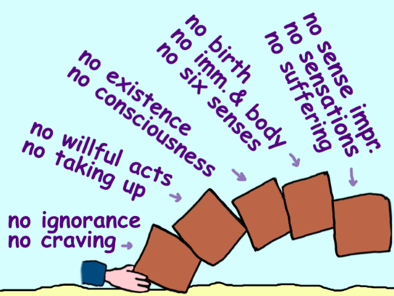
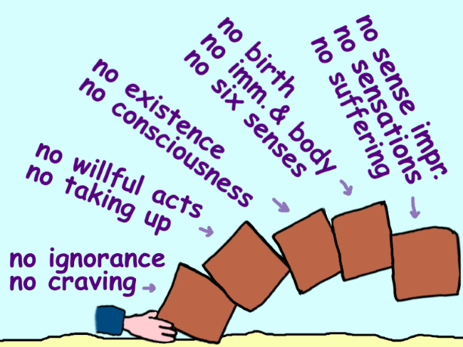
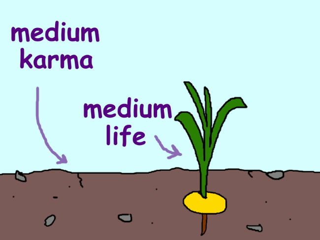
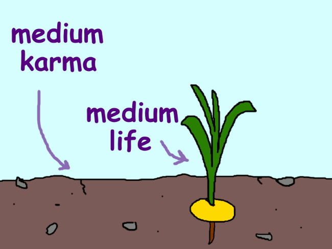
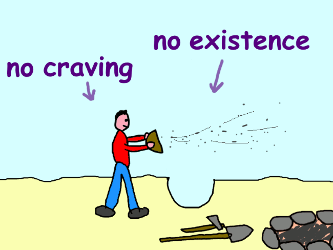
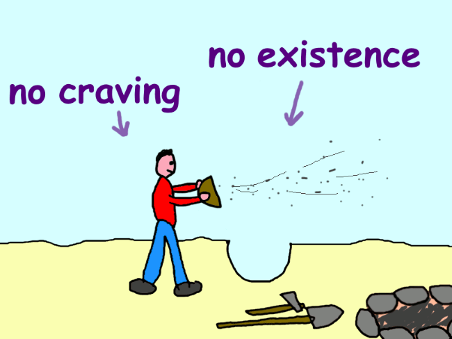

Seeds, Paintings and a Beam of Light
Bhikkhu Sunyo
Seeds, Paintings
and
a Beam of Light
Similes for Dependent Arising
Bhikkhu Sunyo
people understand the meaning of
something through a simile.
Abstract
Dependent Arising is one of the Buddha’s most important and central doctrines, but in recent decades it has been interpreted in a large variety of ways. This book illustrates that the early Buddhist texts support the traditional multiple-lifetime interpretation of this teaching, taking a particular interest in the factor of consciousness. Centered around three similes, it connects this factor to rebirth and explains how it relates to the other factors of Dependent Arising. It also explains that appatiṭṭhita viññāṇa, a term used in the similes, refers to the cessation of consciousness.
Preface
About three years ago I wrote a rather technical essay on an obscure pair of Pāli words, viññāṇa anidassana.2 These words are sometimes understood to describe a kind of consciousness of nirvāṇa, but I argued they refer to a state of meditation instead. I expected few to be interested in such technical analysis, but it was surprisingly well received. Afterwards I was asked to explain a similar pair of words that gets likewise misunderstood, namely appatiṭṭhita viññāṇa. Initially I was reluctant to do more of the same, but then realized it would be a good opportunity to illustrate some aspects of the Buddha’s teachings which continue to amaze me and which may also amaze the reader, because this subject is a good example of how interconnected his teachings are, of how words and concepts reappear throughout the discourses, illuminating the same ideas from different angles. It also gives me a chance to showcase the Buddha’s beautiful use of metaphors for even the deepest of concepts, hopefully shedding some light on the more enigmatic parts of his teachings on Dependent Arising.
As such, this writing is not meant to be a critique but a constructive step towards a better understanding and appreciation of the Buddha’s teachings. But for context, let me briefly lay out the views I consider to be mistaken. The assumption is that enlightened beings experience a certain kind of objectless or contentless consciousness which the Buddha called appatiṭṭhita viññāṇa, usually translated by proponents of the idea as ‘unestablished consciousness’.3 Some further think this consciousness lies outside of conditioned phenomena and will continue to exist after the enlightened being passes away. Often referenced in support of these ideas is a passage wherein the Buddha supposedly compares this unestablished consciousness to a beam of light that does not land on any surface.4
With this book I wish not to be argumentative but aim to present an alternative interpretation of the terms and simile in question. At some occasions, however, I do address the idea of an objectless consciousness directly. This was inevitable, because in my understanding the Buddha specifically denied the existence of such a consciousness, and this happens to be the exact point he was making with appatiṭṭhita viññāṇa. I will show that the term refers not to an unestablished consciousness but to the non-establishing of consciousness in any object or place, particularly at the enlightened being’s time of death, after which there will be no rebirth and hence no more consciousness. Also involved is a simile in which consciousness is a seed for rebirth, where appatiṭṭhita viññāṇa is more aptly translated as ‘consciousness is not planted’.
All this is explained in three parts:
- The first part introduces the wider context of Dependent Arising and a simile of painting a picture of a person, which illustrates the creation of rebirth. It also provides some historical context for the factor of nāmarūpa, quite literally ‘name and form’, translated here as ‘the (individual’s) immaterial aspects and body’.
- The second part explains the simile of the seed of consciousness, clarifying that this simile, like that of the painting, illustrates rebirth too. It also discusses the dependent existence of all consciousness, the impossibility for consciousness to be without object or content.
- The third part gives my interpretation of the disputed simile of the light beam, showing that this simile implies the cessation of consciousness. Some connected statements on the final goal are also touched upon.
Since this writing is essentially a patchwork of translations and notes made over the span of nearly a decade, there will be a few tangents along the way as well. My hope is that these will not distract from the main ideas but add to them instead. Some of these tangents may also reflect that I am not an academic but a practitioner interested in the real-life application of these texts and that I write with a similar audience in mind. Still, please know that this is first and foremost a study of texts, not a guide to practice. A proper understanding of the texts can guide the practitioner in the right direction, however. If anything, I hope you will find some inspiration in the Buddha’s rich metaphors.
Unless otherwise indicated, quotations of the Buddhist canonical texts should be attributed to the Buddha. All translations of the Pāli, including any inevitable shortcomings in them, are my own. Unfamiliar translations will always raise some questions, but to not interrupt the continuity of ideas, I will not explain every translation choice I made and include the Pāli terms only when deemed relevant. Some translations directly connected to the topic are explained in the endnotes, which further contain only references to the source texts and contemporary works.
Realizing that the Pāli Canon is not infallible, I also consulted the Chinese Āgamas, assisted by English translations of others. My knowledge of these texts is limited, so I cannot claim this to be a proper comparative study of early texts—nor was it intended to be—but some interesting observations were made regardless. I hope this will encourage a wider recognition of the Chinese canon and less reliance on unique Pāli passages.
My highest wish, and the real purpose behind this book, is for the Buddha’s words to help the reader find the escape from suffering. I will share some further thoughts on this in the conclusion.
With gratitude towards my teachers and supporters, without whom this work would not have been possible.
Bodhinyana Monastery, Australia
January 2023
PART I
The Simile of the Painting
1. The aggregate of consciousness
The all-encompassing scope of the aggregates
A handful of suttas in the Pāli Canon contain appatiṭṭhita viññāṇa, the term which I intend to show does not refer to an unestablished consciousness of nirvāṇa (nibbāna in Pāli) but to the cessation of consciousness. The If There is Desire Discourse (§23) will be our main focus, because it contains the disputed simile of the light beam that does not hit anything.
But first an important point on the five aggregates: form, sensation, perception, will, and consciousness (rūpa, vedanā, saññā, saṇkhāra, viññāna). Most readers will be familiar with them, but many may not know why the Buddha called them ‘aggregates’ (khandhas). The suttas say they are so called because they include, or they “aggregate”, all the different types of the item in question.[5] A khandha is literally a heap or a collection. The aggregate of perception, for example, is the collection of all perceptions. The same principle applies to the aggregate of consciousness (viññāṇa):
The aggregate of consciousness includes any type of consciousness whatsoever—whether past, present, or future; here or elsewhere; internal or external; coarse or subtle; lowly or sublime. That is how the term ‘aggregate’ applies to the aggregates.[6]
That this statement is intended to be all-encompassing is clarified even further elsewhere when the Buddha says: “any type of consciousness whatsoever—whether past, present, or future [and so on]—all consciousness …”[7]
Similar phrases are spoken of the other four aggregates, so if we were to suppose some special type of consciousness that’s excluded from the aggregate of consciousness,[8] we also open the door for similar types of form, sensation, perception, and will. We then have to admit that the definitions of the other aggregates are also not all-encompassing. But this is not the intent behind these statements, which the Buddha meant to be comprehensive. As said, all types of consciousness are included in the aggregates, just like all types of form, sensation, perception, and will.
Accordingly, throughout the entire corpus the Buddha never tells his audience there is a consciousness outside of the aggregates. In one discourse a god called Baka seems to claim there is such a consciousness, but the Buddha disagrees with him.[9] Whenever he uses the word ‘consciousness’, it always refers either to the whole aggregate of consciousness or otherwise to a certain part of it. This is the whole purpose of his definition of the aggregate: to make sure we don’t leave any type of consciousness out.
Consciousness in the If There is Desire Discourse
That ‘consciousness’ refers to the aggregate is even more clearly the case for the If There is Desire Discourse. It is located in the Nidāna Saṃyutta, the connected discourses on Dependent Arising, and in this context ‘consciousness’ is repeatedly and explicitly defined as the consciousnesses of the six senses—which is to say, as the aggregate of consciousness:[10]
And what is consciousness? There are six kinds of consciousness: sight-consciousness, hearing-consciousness, smell-consciousness, taste-consciousness, touch-consciousness, and mind-consciousness. That [taken together] is what’s called consciousness.[11]
Throughout the If There is Desire Discourse, including the simile of the light beam and appatiṭṭhita viññāṇa, ‘consciousness’ refers to this aggregate. We are not dealing with a special type of consciousness that is outside of this aggregate (or outside of this ‘aspect of existence’, as I will translate khandha from here on).
Moreover, the discourse contains not just the simile of the light beam which is sometimes taken to describe a type of “unestablished” consciousness of nibbāna. It is preceded by a simile of a painting which describes an establishing of consciousness. With this information the well-informed reader may already be able to tell what is going on, once they recall that the discourse is on Dependent Arising. In brief, the simile of the painting illustrates the origination sequence of Dependent Arising; the simile of the light beam illustrates the cessation sequence. The former sequence includes the arising of consciousness; the latter includes its ceasing. So appatiṭṭhita viññāṇa is actually about the cessation of consciousness.
All this will be explained in detail in this book. But before we consider the If There is Desire Discourse and its similes, we need a general understanding of Dependent Arising first.
2. An overview of Dependent Arising
The origin of suffering
In my opinion the best way to explain Dependent Arising—also called Dependent Origination—is by starting with the second noble truth (or ‘noble one’s truth’, as I translate ariyasacca).[12] This truth tells us that the cause of suffering is the craving that leads to a next life:
And what is the noble one’s truth of the origin of suffering? It is the craving that leads to a next life, which, along with enjoyment and desire, looks for happiness in various realms.[13] That is what’s called the noble one’s truth of the origin of suffering.[14]
Dependent Arising is in essence an expanded explanation of this truth:[15]
And what is the noble one’s truth of the origin of suffering? Dependent on ignorance, there are willful actions. Dependent on willful actions, [the continuation of] consciousness. Dependent on consciousness, the individual’s immaterial aspects and body. Dependent on the individual’s immaterial aspects and body, the six senses. Dependent on the six senses, sense impressions. Dependent on sense impressions, sensations. Dependent on sensations, craving. Dependent on craving, fuel/taking up. Dependent on fuel/taking up, [further] existence. Dependent on existence, birth. And dependent on birth, old age and death, and sorrow, grief, pain, sadness, and distress come to be. That is how this whole mass of suffering originates. That is what’s called the noble one’s truth of the origin of suffering.[16]
Dependent Arising is often believed to be a very complicated teaching, but it is not. It’s very deep, very hard to see, but it should not be theoretically difficult. As said, it is essentially an explanation of the second truth of the noble one, and explanations should not be much more complicated than the thing they try to explain!
Venerable Sāriputta once explained the fundamental principles of Dependent Arising quite succinctly:
The Buddha said: ‘If you see the dependent arising of things,[17] you see the Dhamma [the truth/teaching]. If you see the Dhamma, you see the dependent arising of things.’ And what has dependently arisen are these five taken up aspects of existence. Wanting them and holding on to them, being attracted and attached to them, will make suffering originate. Removing and abandoning the want and desire for them, will make suffering cease.[18]
The arising of the five aspects of existence here means their overall existence. By this I mean, Sāriputta is talking about the origination of these aspects of existence as a whole, not about momentary changes within them. This origination of the aspects of existence happens at the start of life, when one is born. This is reflected by the definition of ‘birth’ in §20, which includes “the manifestation of the aspects of existence”. Sāriputta’s summary of Dependent Arising therefore aligns with the noble one’s second truth, on the craving that leads to a next life. That is to say, Dependent Arising primarily explains why rebirth happens.
Another short version of Dependent Arising likewise mentions that the origination of the five aspects of existence happens through birth, which in turn is caused by enjoyment and attachment:
And what is the origin of form, sensation, perception, will, and consciousness? Then you enjoy, welcome, and keep holding on. You enjoy, welcome, and keep holding on to what?
You enjoy, welcome, and keep holding on to form. It results in enjoyment, and when there is enjoyment of form, there is fuel/taking up. Dependent on fuel/taking up, there is [further] existence. Dependent on existence, there is birth. And dependent on birth, old age and death, and sorrow, grief, pain, sadness, and distress come to be. That is how this whole mass of suffering originates. [Similar for the other aspects of existence.][19]
Because the aspects of existence are suffering which starts (or, more accurately, restarts) at birth, the Buddha also said:
Mendicants, the arising, continuation, production, and manifestation of form is the arising of suffering, the continuation of diseases, and the manifestation of old age and death. The arising, continuation, production, and manifestation of sensation, perception, will, and consciousness is the arising of suffering, the continuation of diseases, and the manifestation of old age and death.
The cessation, subsiding, and disappearance of form is the cessation of suffering, the subsiding of diseases, and the disappearance of old age and death. The cessation, subsiding, and disappearance of sensation, perception, will, and consciousness is the cessation of suffering, the subsiding of diseases, and the disappearance of old age and death.[20]
The arising, continuation, production, and manifestation of the aspects of existence here means their continuation into a new life after death. It is this kind of continuation which results in more deaths: their continuation while one is already alive does not. Accordingly, the words ‘production’ and ‘manifestation’ are also found in the very definition of birth, namely in the phrases ‘the production of beings’ and ‘the manifestation of the aspects of existence’. In fact, the word for ‘production’ (abhinibbatti) also means ‘rebirth’.[21] Venerable Sujato translated it as such in the above discourse, and Venerable Bodhi did so elsewhere.[22]
The aspects of existence, and therefore death and other suffering, cease only when the enlightened being passes away. As the Buddha said after the death of the enlightened monk Dabba:
The body fell apart, perception ceased,
all sensations cooled off,
will subsided,
consciousness disappeared.[23]
When Sāriputta mentioned the cessation of suffering in §5, he referred to this final cessation of the aspects of existence. It is only then, after one final death, that old age and death and all suffering are truly overcome.
It is important to realize that Dependent Arising explains rebirth and its causes. If we fail to acknowledge this, it becomes impossible to properly understand the Buddha’s similes and terminology, including appatiṭṭhita viññāṇa. But since some prevalent interpretations don’t recognize or otherwise marginalize this central principle, I will return to it throughout this writing, showing in various ways that Dependent Arising indeed focuses on rebirth. My apologies if at some point this becomes repetitious, but I think a topic as important as this deserves to be treated thoroughly.
The principle of dependency
Although Sāriputta’s explanation in §5 captures the most important principles of Dependent Arising, it is still a summary. Dependent Arising is usually explained with a sequence of twelve factors starting with ignorance and ending with old age and death and all other suffering. These factors are:
| Pāli | Translated here as | |
|---|---|---|
| 1 | Avijjā | Ignorance |
| 2 | Saṅkhārā | Willful actions |
| 3 | Viññāṇa | Consciousness |
| 4 | Nāmarūpa | (Individual’s) immaterial aspects & body |
| 5 | Saḷāyatana | The six senses |
| 6 | Phassa | Sense impression |
| 7 | Vedanā | Sensation |
| 8 | Taṇhā | Craving |
| 9 | Upādāna | Fuel/taking up* |
| 10 | Bhava | Existence |
| 11 | Jāti | Birth |
| 12 | Jarāmaraṇa | Old age & death |
(* Upādāna means both ‘fuel’ and ‘taking up’, and often both meanings are implied. No single English word conveys both, so unless only one applies, I use the dual translation ‘fuel/taking up’. The idea is that craving acts as the fuel for the continuation of existence after death, but also that a next existence is taken up due to craving.)[24]
The sequential arising of these twelve factors is usually followed by their sequential cessation, which has no official name in the discourses. Some have termed it ‘Dependent Cessation’, but I will just call it ‘the cessation sequence’. In the following text the Buddha gives both the arising sequence and cessation sequence in their standard form, after, just like Sāriputta, saying he is concerned with the arising and cessation of the five aspects of existence.
Mendicants, I, the Truthfinder—with ten powers and four reasons to be self-confident[25]—claim the place of the alpha bull, roar my lion’s roar in gatherings, and put in motion the Supreme Wheel, saying: ‘This is how form is, this is how it originates, and this is how it disappears. This is how sensation is, this is how it originates, and this is how it disappears. This is how perception is, this is how it originates, and this is how it disappears. This is how will is, this is how it originates, and this is how it disappears. This is how consciousness is, this is how it originates, and this is how it disappears.
There will be this, only if there is that. This arises, because that arises. If there isn’t that, there won’t be this. If that ceases, this will cease. That is to say:
Dependent on ignorance, there are willful actions. Dependent on willful actions, consciousness. Dependent on consciousness, the individual’s immaterial aspects and body. Dependent on the individual’s immaterial aspects and body, the six senses. Dependent on the six senses, sense impressions. Dependent on sense impressions, sensations. Dependent on sensations, craving. Dependent on craving, fuel/taking up. Dependent on fuel/taking up, existence. Dependent on existence, birth. And dependent on birth, old age and death, and sorrow, grief, pain, sadness, and distress come to be. That is how this whole mass of suffering originates.
But if ignorance completely fades away and ceases, willful actions will cease. If willful actions cease, consciousness will cease. If consciousness ceases, the individual’s immaterial aspects and body will cease. If the individual’s immaterial aspects and body cease, the six senses will cease. If the six senses cease, sense impressions will cease. If sense impressions cease, sensations will cease. If sensations cease, craving will cease. If craving ceases, fuel/taking up will cease. If fuel/taking up ceases, existence will cease. If existence ceases, birth will cease. And if birth ceases, old age and death, and sorrow, grief, pain, sadness, and distress, will cease. That is how this whole mass of suffering ceases.’[26]
The Buddha first says he will explain how the five aspects of existence originate and cease, which means he is concerned with how life is brought about and how it comes to a complete end. He will base his investigation on a principle which he words as follows:
- There will be this, only if there is that.[27] This arises, because that arises.
- If there isn’t that, there won’t be this. If that ceases, this will cease.
- In other words, this depends on that.
We can rephrase this more modernly as:
- There will be B, only if there is A. B arises, because A arises.
- If there is no A, there won’t be B. If A ceases, B will cease.
- B depends on A.
Much has been philosophized about these short sentences, but the principle they describe is not difficult to understand. For the sake of illustration, here is first an example of the principle applied to something outside of Dependent Arising:
- There will be rain, only if there are clouds. Rain happens because clouds form.
- If there are no clouds, there won’t be rain. If the clouds disappear, the rain will stop.
- Rain depends on clouds.
The point is simple: there can be no rain without clouds. In other words, rain requires clouds. Clouds are needed for rain. Rain depends on clouds. Or, for those familiar with logical terminology, clouds are a necessary condition for rain.
But the Buddha did not apply his investigation to rain, nor to any other phenomena in the outside world.[28] He was interested in suffering, which is found inside of beings. So next is an example of the principle that stays within the context where it was meant to be applied, that of Dependent Arising:
- There will be death, only if there is birth. Death happens because birth happened first.
- If there is no birth, there won’t be death. If birth ceases, death will cease.
- Death depends on birth.
Put simply: you will die because you were born; but if you don’t get reborn, you won’t die again.
This principle is called ‘dependency’ (idap-paccayatā),[29] which explains the name ‘Dependent Arising’ (paṭicca-samuppāda). The words paccaya and paṭicca both come from the verb pacceti, meaning ‘to fall back on, to depend on’. The principle has also been called ‘conditionality’, which loses the link between these two terms but means the same.
The principle of dependency applies not only to birth and death, but to all the links: death depends on birth, birth depends on the continuation of existence, and so on through the rest of the chain. So in the end all factors rely on ignorance. Imagine a tower of twelve bricks stacked on top of one another. If you remove the bottom brick, the whole stack will come crashing down. Why? Because the bricks supported one another, and they all relied on the bottom brick. Similarly, if you remove ignorance, all the other factors also will cease to be. Why? Because in the end they all depended on ignorance. If you end ignorance, you will therefore also end suffering. It takes some time for the tower to fall down, though. Suffering does not end immediately when ignorance ends, but only at the end of life.
To illustrate:

Since this may all sound rather theoretical so far, I must emphasize that the principle of dependency is a means of reflection, not a mere philosophical theory. Whenever it is mentioned in the Pāli Canon, it always describes someone’s empirical insights or reflections. For example, in §49: “You closely and properly focus on the dependent arising of things, reflecting: ‘There will be this, only if there is that. […] That is to say: Dependent on ignorance […]” The principle is meant to be applied to your personal experience to understand, among other things, how you yourself have been creating rebirth and may do so again in the future.
The centrality of rebirth
Many of the links in Dependent Arising are not only necessary conditions but also sufficient conditions.[30] Sufficient conditions guarantee their outcome. For example, if there is birth, there will always be death as a consequence. Birth guarantees death. Therefore, birth is a sufficient condition for death (as well as a necessary one). But not all links are sufficient conditions. Just like a cloudy sky does not guarantee that it will rain, sensations don’t guarantee craving, for example. If they did, there would be no way to stop craving! So sensations are not a sufficient condition for craving. Likewise, craving and ignorance do not guarantee birth, because you may have those defilements today, but get enlightened tomorrow, whereafter you will not be reborn again. So your craving and ignorance were not sufficient conditions for birth. That said, this distinguishment between necessary and sufficient conditions can quickly become too technical, if it hasn’t been already. It is not mentioned in the discourses either, so it may be better to not overthink it. The links that are sufficient conditions are quite clear anyway, once the meaning of the factors is explained.
However, there is one link where sufficiency may not be evident, and it just so happens to be the most important one: that between birth and suffering. It means that once you are born and alive, suffering is inevitable. Only by not getting reborn again, can you end suffering. This insight forms one of the backbones of Dependent Arising. Rebirth therefore is the primary issue this teaching addresses. As the Buddha said to Ānanda:
It is because of not understanding and not penetrating this teaching [of Dependent Arising] that this population […] does leave behind the plane of misery, the bad destinations, the nether world, and transmigration (saṃsāra).[31]
The focal point of Dependent Arising is also very clear in the next passage. Here the Buddha says he obtained his own insights in Dependent Arising after wondering how rebirth can be stopped. He investigated this matter using the principle of dependency in its various phrasings, starting at old age and death and working his way back to ignorance. Discourses like this are usually abbreviated, but to clarify how the principle of dependency applies to all links, I included it in full.
Mendicants, before my awakening—when I was heading for awakening but not yet fully awake—I thought: ‘Oh no! People have really gotten into trouble. They are born, age, die, pass on, and are reborn again. Yet they don’t see any escape from this suffering, this old age and death and so on. When will an escape from all this finally be found?’
Then I thought: ‘There will be old age and death, only if there is what? What do old age and death depend on?’ Then, by focusing properly, I comprehended it, understanding that there will be old age and death, only if there is birth. Old age and death depend on birth.
Then I thought: ‘There will be birth, only if there is what? What does birth depend on?’ Then, by focusing properly, I comprehended it, understanding that there will be birth, only if there is [further] existence. Birth depends on existence.
Then I thought: ‘There will be existence, only if there is what? What does existence depend on?’ Then, by focusing properly, I comprehended it, understanding that there will be existence, only if there is fuel/taking up. Existence depends on fuel/taking up.
Then I thought: ‘There will be fuel/taking up, only if there is what? What does fuel/taking up depend on?’ Then, by focusing properly, I comprehended it, understanding that there will be fuel/taking up, only if there is craving. Fuel/taking up depends on craving.
Then I thought: ‘There will be craving, only if there is what? What does craving depend on?’ Then, by focusing properly, I comprehended it, understanding that there will be craving, only if there are sensations. Craving depends on sensations.
Then I thought: ‘There will be sensations, only if there is what? What do sensations depend on?’ Then, by focusing properly, I comprehended it, understanding that there will be sensations, only if there are sense impressions. Sensations depend on sense impressions.
Then I thought: ‘There will be sense impressions, only if there is what? What do sense impressions depend on?’ Then, by focusing properly, I comprehended it, understanding that there will be sense impressions, only if there are the six senses. Sense impressions depend on the six senses.
Then I thought: ‘There will be the six senses, only if there is what? What do the six senses depend on?’ Then, by focusing properly, I comprehended it, understanding that there will be the six senses, only if there are the individual’s immaterial aspects and body. The six senses depend on the individual’s immaterial aspects and body.
Then I thought: ‘There will be the individual’s immaterial aspects and body, only if there is what? What do the individual’s immaterial aspects and body depend on?’ Then, by focusing properly, I comprehended it, understanding that there will be the individual’s immaterial aspects and body, only if there is consciousness. The individual’s immaterial aspects and body depend on consciousness.
Then I thought: ‘There will be consciousness, only if there is what? What does consciousness depend on?’ Then, by focusing properly, I comprehended it, understanding that there will be consciousness, only if there are willful actions. Consciousness depends on willful actions.
Then I thought: ‘There will be willful actions, only if there is what? What do willful actions depend on?’ Then, by focusing properly, I comprehended it, understanding that there will be willful actions, only if there is ignorance. Willful actions depend on ignorance.
So, dependent on ignorance, there are willful actions. Dependent on willful actions, consciousness. Dependent on consciousness, the individual’s immaterial aspects and body. Dependent on the individual’s immaterial aspects and body, the six senses. Dependent on the six senses, sense impressions. Dependent on sense impressions, sensations. Dependent on sensations, craving. Dependent on craving, fuel/taking up. Dependent on fuel/taking up, existence. Dependent on existence, birth. And dependent on birth, old age and death, and sorrow, grief, pain, sadness, and distress come to be. That is how this whole mass of suffering originates.
Mendicants, that is how I understood origination, gaining insight, comprehension, understanding, knowledge, and illumination of things not taught before.
Then I thought: ‘There won’t be old age and death, if there isn’t what? Old age and death will cease, if what ceases?’ Then, by focusing properly, I comprehended it, understanding that there won’t be old age and death, if there is no birth. If birth ceases, old age and death will cease.
Then I thought: ‘There won’t be birth, if there isn’t what? Birth will cease, if what ceases?’ Then, by focusing properly, I comprehended it, understanding that there won’t be birth, if there is no existence. If existence ceases, birth will cease.
Then I thought: ‘There won’t be existence, if there isn’t what? Existence will cease, if what ceases?’ Then, by focusing properly, I comprehended it, understanding that there won’t be existence, if there is no fuel/taking up. If fuel/taking up ceases, existence will cease.
Then I thought: ‘There won’t be fuel/taking up, if there isn’t what? Fuel/taking up will cease, if what ceases?’ Then, by focusing properly, I comprehended it, understanding that there won’t be fuel/taking up, if there is no craving. If craving ceases, fuel/taking up will cease.
Then I thought: ‘There won’t be craving, if there isn’t what? Craving will cease, if what ceases?’ Then, by focusing properly, I comprehended it, understanding that there won’t be craving, if there are no sensations. If sensations cease, craving will cease.
Then I thought: ‘There won’t be sensations, if there isn’t what? Sensations will cease, if what ceases?’ Then, by focusing properly, I comprehended it, understanding that there won’t be sensations, if there are no sense impressions. If sense impressions cease, sensations will cease.
Then I thought: ‘There won’t be sense impressions, if there isn’t what? Sense impressions will cease, if what ceases?’ Then, by focusing properly, I comprehended it, understanding that there won’t be sense impressions, if there are no six senses. If the six senses cease, sense impressions will cease.
Then I thought: ‘There won’t be the six senses, if there isn’t what? The six senses will cease, if what ceases?’ Then, by focusing properly, I comprehended it, understanding that there won’t be the six senses, if there are no immaterial aspects and body. If the individual’s immaterial aspects and body cease, the six senses will cease.
Then I thought: ‘There won’t be the individual’s immaterial aspects and body, if there isn’t what? The individual’s immaterial aspects and body will cease, if what ceases?’ Then, by focusing properly, I comprehended it, understanding that there won’t be the individual’s immaterial aspects and body, if there is no consciousness. If consciousness ceases, the individual’s immaterial aspects and body will cease.
Then I thought: ‘There won’t be consciousness, if there isn’t what? Consciousness will cease, if what ceases?’ Then, by focusing properly, I comprehended it, understanding that there won’t be consciousness, if there are no willful actions. If willful actions cease, consciousness will cease.
Then I thought: ‘There won’t be willful actions, if there isn’t what? Willful actions will cease, if what ceases?’ Then, by focusing properly, I comprehended it, understanding that there won’t be willful actions, if there is no ignorance. If ignorance ceases, willful actions will cease.
So, if ignorance completely fades away and ceases, willful actions will cease. If willful actions cease, consciousness will cease. If consciousness ceases, the individual’s immaterial aspects and body will cease. If the individual’s immaterial aspects and body cease, the six senses will cease. If the six senses cease, sense impressions will cease. If sense impressions cease, sensations will cease. If sensations cease, craving will cease. If craving ceases, fuel/taking up will cease. If fuel/taking up ceases, existence will cease. If existence ceases, birth will cease. And if birth ceases, old age and death, and sorrow, grief, pain, sadness, and distress, will cease. That is how this whole mass of suffering ceases.
Mendicants, that is how I understood cessation, gaining insight, comprehension, understanding, knowledge, and illumination of things not taught before.[32]
In this text ‘old age and death’ is used as a shorthand for all suffering. This is a common feature in the discourses, especially those on Dependent Arising. Old age and death are a shorthand for suffering not only because they are some of its more noticeable forms, but also because as long as there still is a possibility for old age and death—that is to say, as long as you are alive—there will still be suffering. To clarify, in the Discourse on Direct Conditions it is suffering which is said to be directly dependent on birth, not old age and death as in the standard sequence. It says: “And what is the direct condition for suffering? Birth, you should answer.”[33] This also reinforces what was mentioned before, that once a being is born, suffering is inevitable as long as they are alive.
The meaning of the factors
While the principle of dependency and its application to the twelve factors are conveyed very clearly in the previous discourse, the actual meaning of the factors is not. The Buddha did not explain what ‘birth’ exactly refers to, for example. Most suttas on Dependent Arising similarly mention the standard sequence with little to no explanation of what the individual factors mean. I can think of two main reasons for this, and they are important to consider if we want to properly understand Dependent Arising.
One, the bare twelvefold sequence is not meant to be a full explanation itself, but primarily serves as a mnemonic device (something easy to remember).[34] The audience would have heard more detailed explanations and definitions of the twelve factors in other discourses, which they would have had in the backs of their minds while listening to the more bare sequences of factors. We should do the same, not taking the factors in isolation but consider how they are used and defined elsewhere. If we were to focus on the twelve words and ignore the wider context, we could give these words—which moreover are in an ancient language that is not completely understood—almost any meaning we’d like.
Two, to people back then the individual links would have been more self-explanatory than they are to us. Many of the links may make immediate sense to us as well, such as that between birth and death and that between sensations and craving. But some links do not make sense right away, like that between consciousness and the individual’s immaterial aspects and body, especially when the latter (nāmarūpa) is translated as ‘name and form’. The Buddha discovered a timeless principle, but the words he used to explain this principle are not timeless. They were spoken at a specific point in time, to a certain audience that had different ideas than us. This we should also take into account. If we interpret these historical texts too much from a contemporary perspective, we are bound to misunderstand things. In linguistic studies this is called presentism: “the anachronistic introduction of present-day ideas and perspectives into depictions or interpretations of the past”.[35]
The language gap and cultural divide also mean someone could fully understand the general principle of Dependent Arising through direct insight, even be fully enlightened, but still not understand what words like nāmarūpa mean (or what any Pāli word means, for that matter). For this reason we should also be careful to stay objective about the texts and not interpret them too much in light of our own subjective ideas, even if we are very wise. If we do have deep insights, it does becomes a lot easier to interpret the words rightly, but it is still no guarantee. Unfortunately, insight into the Dhamma does not come with miraculous linguistic abilities!
The reader should also be aware that translations are by their nature always imperfect. As K.R. Norman, one of the greatest Pāli linguists, said: “It is very difficult to give a one for one translation of Sanskrit and Pāli words into English. It is very rare that one Sanskrit or Pāli word has exactly the same connotations, no less and no more, as one English word.”[36] This is even more true when dealing with topics as abstract as Dependent Arising. But leaving words in Pāli is no solution either, as Norman also continued to say, so I use English terms here, accepting their inevitable shortcomings. The meaning of these terms will have to be clarified by their explanations more so than by the translations themselves. This applies especially to ‘consciousness’, as we shall see.
Summary of Dependent Arising
With the above principles in mind, I arrived at an understanding of Dependent Arising that differs little from that of most traditional Buddhist schools.[37] All will be explained in detail later, but to give a general overview: Unenlightened beings don’t know the true nature of life, not understanding suffering and its causes. Deluded by this absence of knowledge, or ignorance, they perform certain intentional acts, also known as karma. At death, driven along by craving, these willful actions direct the being’s consciousness into a next life—in part through guilt and rejoicing over past actions, in part through will that plays up around the time of death itself. The being’s actions influence where they take rebirth and thereby also shape the individual’s immaterial aspects and body, with the ‘immaterial aspects’ being general features of the being’s “inner world”. When beings are born, there are the six senses, the five physical ones plus the mind. When these senses are aware of things, there are sense impressions, which result in pleasant, painful, and neutral sensations. As long as there still is ignorance, craving arises to experience certain sensations and avoid others. Such cravings will continue at the time of death, when it becomes the fuel for rebirth. Or, from a different perspective, out of craving beings take up the five aspects of existence again. This fuel/taking up causes a next existence after death and a resultant birth in a next life. Once the being is born, there is suffering, including old age and death. But when the being gets enlightened, ignorance and craving disappear, and the whole chain collapses. Then suffering will come to an end at death, when all experiences cease as the six senses disappear.
All this can happen because there is no solid essence in any part of existence, no self involved in any of the links. This absence of a self (anatta) is not explicitly mentioned in the standard sequences, but it is always implied. It is explained in many discourses on Dependent Arising, and is of utmost importance for a correct understanding of it. However, it is not the focus here, so I will discuss it only in passing, primarily in Chapter 12 to explain why the cessation of existence (including consciousness) is not the annihilation of an essence.
To better illustrate the functions of the twelve factors, the table below displays them alongside the standard truth on the origin of suffering, the craving that leads to a next life. (‘Next life’ translates puna-bhava, more literally ‘re-existence’.) Since words are fluid but tables are not, this overview may box in some of the factors a bit too strictly. For example, the factor of existence is not just part of the rebirth process, it also continues after birth. The same applies to consciousness and the individual’s immaterial aspects and body. But the table can serve as a useful general overview, as will similar tables that are to follow.
| Ignorance sequence | Craving sequence | Second truth | |
|---|---|---|---|
| Causes of rebirth |
1. Ignorance 2. Willful actions |
8. Craving 9. Fuel/taking up |
• Craving |
| Rebirth | 3. Consciousness 4. Imm. aspects & body |
10. Existence 11. Birth |
• A next life (‘re-existence’) |
| Results of rebirth |
5. Six senses 6. Sense impressions 7. Sensations |
12. Suffering, incl. old age and death |
• Suffering |
The sequence from craving down to suffering I call the ‘craving sequence’ and all preceding factors the ‘ignorance sequence’. These two sequences function side by side in the creation of a next life. Both contain factors pertaining to rebirth, which means the twelvefold sequence describes the process of rebirth twice, illustrating the same process from two different angles. This is useful, because it lets us reflect upon the origin and cessation of suffering in multiple ways. The Visuddhimagga says the two are different ways of teaching which are suitable for different people.[38] To generalize, we might say the ignorance sequence focuses on the ethical and cognitive aspects, the craving sequence on the emotional and existential ones.
The double inclusion of the process of birth in the full sequence fits the Buddha’s inquiry in §11: “They are born, age, die, pass on, and are reborn again.” It also emphasizes that every birth is a rebirth. It is often assumed that in the Buddha’s India everybody believed in rebirth, but the discourses regularly mention the materialistic view of a single lifetime. This could have prompted the Buddha to describe the process of birth twice in the sequence, clarifying that it is about rebirth.
Possible development of the twelvefold sequence
Later chapters will repeatedly show that there are indeed two parallel descriptions of rebirth in the twelvefold sequence, but the link between sensations and craving already hints that at this place two shorter sequences may have been joined together. Take the statement, “if sensations cease, craving will cease”. While this may theoretically be true, the actual way to end craving is not through ending sensations. Craving can only be ended through wisdom, through removing ignorance. The link between sensations and craving therefore seems a little artificial, possibly inserted to connect the two shorter sequences into the twelvefold one.
Based on various other grounds, many scholars have come to similar conclusions.[39] Tilmann Vetter for example concluded: “Two different chains of dependent origination of suffering were superficially combined into the twelvefold chain. The first part (links 1–7) [the ignorance sequence] is a more developed attempt at explaining the origin of suffering than the second part.”[40] Franz Bernhard likewise thought: “It is noticeable that factors 8–12 [the craving sequence] are just a further elaboration of the basic idea of the four noble truths. […] Originally the Buddha identified only thirst [i.e. craving] as the cause of rebirth […] later—apparently influenced by and in controversy with competing contemporary systems—came then the rationale for rebirth through avidyā, ignorance.”[41]
Text-critical evidence for such a possible development comes from three Chinese parallels to the Mahānidāna Sutta.[42] They all start with the craving sequence beginning at old age and death, later mention a sequence going from craving down to consciousness, but never combine the two into the longer ninefold sequence found in the Pāli version, which goes straight from old age and death down to consciousness. See the table below, where for sake of comprehensiveness I also added the Dīrgha Āgama parallel to the same sutta, which contains all twelve factors.[43]
| MĀ 97, T 15 & T 52 (two shorter sequences) | DN 15, Mahānidāna (9-fold sequence) | DĀ 13 (full 12-fold sequence) |
|---|---|---|
| • Old age & death • Birth • Existence • Fuel/taking up • Craving ————————— • Craving • Sensations • Sense impressions • (Six senses, T 52 only) • Imm. aspects & body • Consciousness |
• Old age & death • Birth • Existence • Fuel/taking up • Craving • Sensations • Sense impressions • Imm. aspects & body • Consciousness |
• Old age & death • Birth • Existence • Fuel/taking up • Craving • Sensations • Sense impressions • Six senses • Imm. aspects & body • Consciousness • Willed acts • Ignorance |
As another indication for the combination of the two parallel sequences, one Pāli discourse joins the craving sequence in its cessation mode to part of the ignorance sequence in its origination mode. In this discourse the cessation of craving does not depend on the cessation of feeling, as in the default sequence.
And what is the cessation of suffering? A sight-consciousness arises dependent on the sense of sight and sights. The combination of the three is a sense impression. Dependent on sense impressions, there are sensations. Dependent on sensations, there is craving. But if craving completely fades away and ceases, fuel/taking up will cease. If fuel/taking up ceases, existence will cease. If existence ceases, birth will cease. And if birth ceases, old age and death, and sorrow, grief, pain, sadness, and distress, will cease. That is how this whole mass of suffering ceases. That is the cessation of suffering. [Similar for the other five senses.][44]
Discourses such as this may have been precursors to the standard twelvefold sequence. I do not wish to discuss the possible development of this sequence further here, however, as such analysis quickly becomes overly speculative. My point is simply that it is one piece of evidence for seeing two parallel descriptions of rebirth in the twelvefold sequence. And to clarify, unlike some scholars I do not mean to suggest the twelvefold sequence, or any other version of Dependent Arising in the Pāli Canon, was devised by someone other than the Buddha.[45]
Ignorance and craving as the two roots
When the twelve factors of Dependent Arising are seen to contain two parallel sequences, craving and ignorance together become the primary causes for rebirth. A Tibetan commentary to the Udānavarga indeed separates the twelvefold chain into two shorter parallel ones that start with these two factors.[46] The Visuddhimagga also states: “When speaking of the cycle of rebirth, the Blessed One made two things the starting point: ignorance […] and craving for existence.”[47]
Two sequential discourses in the Itivuttaka neatly illustrate the last point.[48] These discourses are included below, but first it will be helpful to know that transmigration (saṃsāra) in the canon always means the cycle of repeated birth and death, never some sort of mental wandering, and that delusion (moha) is an effective synonym for ignorance,[49] as also borne out by these verses:
Those who journey again and again,
transmigrating through births and deaths,
going from one state of existence to another:
their destinations are just due to ignorance.Ignorance is indeed the great delusion
because of which we have long transmigrated.
But beings who have attained knowledge
do not go on to a next life.[50]
The two discourses from the Itivuttaka on ignorance and craving:
I heard this was said by the Buddha, said by the enlightened one: “Mendicants, I don’t see any other obstruction, obstructed by which people continue to roam around and transmigrate, like the obstruction of ignorance. Obstructed by ignorance, people continue to roam around and transmigrate for a long time.”
That is what the Buddha said, and this is said about it:
“There is no single other thing
obstructed by which people
continually transmigrate
like being blinded by delusion.Those who abandoned delusion,
who pierced the mass of darkness,
transmigrate no more,
since they lack the condition for it.”I heard that this was also said by the Buddha.[51]
I heard this was said by the Buddha, said by the enlightened one: “Mendicants, I don’t see any other chain, chained by which people continue to roam around and transmigrate, like the chain of craving. Chained by craving, people continue to roam around and transmigrate for a long time.”
That is what the Buddha said, and this is said about it:
“A person who has craving as a spouse,[52]
transmigrates for a long time,
going from one state of existence to another,
never getting out of transmigration.Craving is the origin of suffering.
Once mendicants know this problem,
they should wander without forgetting it,
free from craving, not taking anything.”I heard that this was also said by the Buddha.[53]
The close connection between ignorance and craving also presents itself in the phrase ‘obstructed by ignorance and chained by craving’ (or ‘hindered by ignorance and fettered by craving’). This phrase occurs frequently, always in direct connection with rebirth, most commonly in, “the transmigration of beings who roam around obstructed by ignorance and chained by craving”.[54] Other examples are: “Existence in a future life is produced because beings, obstructed by ignorance and chained by craving, look for happiness in various realms” and “the fool’s current body originated because they were obstructed by ignorance and chained by craving [in the past life]”.[55] Particularly relevant for our discussion on consciousness is a statement in §71: “The consciousness of beings who are obstructed by ignorance and chained by craving, gets planted in the lower [or middle or higher] realm. That is how existence in a future life is produced.”
Ignorance and craving are also found as a pair in other contexts. In the Sangīti Sutta they are even recited as a specific group of two.[56] Their joint connection with rebirth also comes to the fore in verses such as the following, where craving is sometimes substituted by desire (rāga):
Some renunciants and brahmins
are plagued by desire and anger:
men obstructed by ignorance,
enjoying things that seem pleasing. […]Shrouded in darkness [of ignorance],
slaves of craving, led along,
they take rebirth,
swelling the horrible charnel grounds.[57]
(A charnel ground is a place where corpses are deposited without burying them.)
Men set out for certain death,
always being close to the King of Mortality.
And when they discard this body here,
they go where they desire.Obstructed by ignorance,
knotted by the four knots,[58]
caught in the net of the tendencies,
the body drowns in the flood.Hidden by delusion,
chained by the five obstructions,
afflicted by thoughts,
following craving, the root.That is how the body occurs,
driven by the mechanism of deeds.
Its acquirement ends in perishing:
falling apart, it perishes.Blind fools, ordinary people,
who think the body is theirs,
taking next lives,
swell the horrible charnel grounds.Those who avoid this body
like a dung-smeared snake,
having expelled the root of existence,
the undefiled, will get fully extinguished.[59]
(The five obstructions (nīvaraṇa) are the five hindrances in meditation.)
In the last passage, which is spoken by Kappa, craving is called the root for birth and death, which it is also called elsewhere.[60] As we shall see shortly, ignorance is sometimes also called the root. To my knowledge, none of the other twelve factors is ever called such, which again shows that ignorance and craving were regarded as the two most fundamental causes of rebirth.

To return to the tower of bricks, since ignorance and craving are intrinsically connected, when you pull out the brick of ignorance, you pull out craving at the same time. See the following drawing:

Some discourses on Dependent Arising contain only the craving sequence, omitting the preceding ignorance sequence. We already encountered an example of this at §6 and will see some others later.[61] Such explanations are possible because the craving sequence by itself already forms a complete teaching on the origin of suffering, just like Sāriputta’s short explanation of Dependent Arising in §5, and just like the standard truth on the origin of suffering itself. We can therefore also contemplate the fundamental principles of Dependent Arising by considering only the five “bricks” of the craving sequence, as in the following illustration. This can be pragmatically relevant, since the ignorance sequence contains some terms which can be hard to relate to (particularly nāmarūpa) while the craving sequence may be more readily understood.
The hand that pulls out the brick of craving I labeled ‘wisdom’ to emphasize craving cannot be removed by an act of will or by simply being mindful. It requires deep insights into the nature of life. Craving itself depends on ignorance, on not seeing reality as it is. We will always desire existence as long as we think there is some sort of real happiness to be found in it, as long as we don’t understand what suffering is. That is why the Buddha said:
Mendicants, I mentioned you can find no beginning to the craving for existence, such that before that, there was no craving for existence, and after that, it came into being. However, the craving for existence is still seen to be dependent on something. I tell you the craving for existence has its nutriment, it is not without nutriment. And what is the nutriment for the craving for existence? Ignorance, you should answer.[62]
The phrase “you can find no beginning” also implies that this is about rebirth, because elsewhere it is always used with respect to saṃsāra.[63]
The following verse also depicts the dependency of craving on ignorance:
All the wishes and delights that are always
connected to the many and various realms,
yearnings sprung from the root of unknowing:
I eliminated them all, along with their root.[64]
Here unknowing (aññāṇa), i.e. ignorance, is said to be the root of yearning, i.e. craving. Ignorance can be regarded as the root of craving, because craving can never be fully ended without destroying ignorance. We may be able to temporarily stop our desires, but as long as the root of ignorance still exists, the weed of craving will keep coming up.
Since craving depends on ignorance, yet another way to depict Dependent Arising as a tower of bricks is with a stick between ignorance and craving, as illustrated next. It is another way to think about the two parallel sequences.

I fear this illustration may be confusing, so let me explain. As long as ignorance stays in place, there will be craving; as long as there is ignorance and craving, there will be rebirth; and as long as there is rebirth, there will be suffering. The only way to end the problem is by removing ignorance, because it is the only brick with a string to pull. If you remove ignorance, then craving will cease, and as a result rebirth and suffering will too.
Please know that the illustration is limited by nature, and also do not think of it as a causal sequence working up from the bottom. There are not two separate rebirths, for example, even though the word ‘rebirth’ is included twice. The two bricks labelled as such are in reality not different rebirth processes. In a sense we might even say are part of the same brick. The same applies to the two bricks labelled ‘suffering’, and to ignorance and craving, which may be seen as the combined root for rebirth.
With that in mind, let me give one last tower analogy. We can also think of the twelve factors of Dependent Arising like this:
 
To briefly clarify, craving and ignorance are the fundamental problems. Together they underlie the more active defilements of willful actions and taking up. At death, the will causes the (re)taking up of the five aggregates, which leads to the continuation of consciousness into a next existence. This results in a birth in the respective realm, producing the immaterial aspects and body along with the six senses. Having six senses, there will be old age and death and all other suffering: all the sensations that come from sense impressions.[65] That is how the two parallel sequences function together to create suffering.
But if there is no ignorance, there will be no craving either. Lacking them, there are also no (defiled) willful actions, which include taking up. Without the propulsive power of those, there will not be another existence and no consciousness continuing after death. Then there is no next birth, and therefore also no immaterial aspects & body, and no six senses. Having no six senses, there are no sense impressions, no sensations, and therefore no suffering. And, as the Buddha would say, that is how this whole mass of suffering ceases.
The idea of there being two parallel descriptions of rebirth in the twelvefold sequence, which is also the fundamental interpretation of the Pāli commentaries, is in modern times often called the ‘three-lifetime model’. But this term is confusing and possibly ill-informed, because as explained, the factors can also span just two lives, with ignorance and craving working together in the creation of a single rebirth. To explain the general principles the commentaries give a specific example of how the factors can span three lives, but the model is not limited to this, as the commentaries themselves also make very clear. Bhikkhu Bodhi explains: “The [commentarial] distribution into three lives is only an expository device which, for the sake of concision, has to resort to abstraction and oversimplification.”[66] None of the factors are limited to one particular life either. For instance, unenlightened beings were ignorant in the past life and still are in the current one, and as a consequence they suffer in the current life and will continue to do so in the next. It does not mean that ignorance only existed in the past life and suffering only in the future one. One would think this goes without saying, but it is a perennial misunderstanding of the model.[67]
Putting this book in perspective
I hope the tower-of-bricks analogy in its various forms made the abstract idea of dependency a bit more tangible. However, it has its limits, like all analogies, and it does oversimplify some things. Most significantly, it paints a very static picture which fails to convey that rebirth is an active process. It does not properly depict the propulsive forces behind rebirth, the tendencies of the mind to move on to a next life, which are present primarily in the factors of willful actions and taking up. To offset this, Chapter 10 is dedicated to these factors. For now, with a preliminary understanding of Dependent Arising, we can turn to our main sutta, the If There is Desire Discourse, and start investigating the term appatiṭṭhita viññāṇa.
But before we do, I want to pause for one more moment to provide some perspective, because we will dive in the deep end and rarely get back to the shallows. We will discuss some of the factors in Dependent Arising that are most enigmatic, primarily those of willful actions, consciousness, and the immaterial aspects and body (nāmarūpa). It will take us into technical details, obscure texts, linguistic aspects of Pāli, and some hotly debated passages, all of which might make it seem like those who do not study a lot, have no chance of understanding Dependent Arising. But this is far from the truth. Real insights will come from meditation, not from study. The technical observations made here are not necessary to arrive at these insights.
Still, the Buddha taught Dependent Arising for good reasons. As long as we are able to appreciate some of the cultural and textual complications, there are some important lessons to be learned from every link in the chain. The following chapters will hopefully help unravel some of these complications and thereby shed some light not only on the Buddha’s teachings but also on the nature of life itself.
3. Rebirth and “name and form”
The meaning of ‘birth’, ‘old age’, and ‘death’
As explained in the previous chapter, the twelve factors of Dependent Arising should not be read in a vacuum. They have to be interpreted in a larger context, otherwise it is all too easy to misunderstand what they are about. It would be like visiting only the final lecture of a university course, when the professor summarizes all that he taught that semester, using terms that were defined in earlier lectures.
To give a concrete example, the factors of ‘birth’, ‘old age’, and ‘death’ are sometimes interpreted to refer to the constant arising and passing away of certain mind states or of a sense of self.[68] But that the Buddha did not have this in mind quickly becomes apparent once his definitions of these terms are considered. These definitions occur at least seven times in the Nikāyas, including in texts with such names as The Analysis of the Truths and The Discourse on Right View.[69] In the Nidāna Saṃyutta, the connected discourses on Dependent Arising, they occur four times:
And what is old age and death? The old age of all kinds of beings in any order of beings—them being old, having broken teeth, gray hair, wrinkled skin, decreased vitality, and failing faculties: that is what’s called old age. The passing on of all kinds of beings from any order of beings—their passing away, deceasing, dying, death, demise, the end of their life, their aspects of existence breaking up, them laying down the body: that is what’s called death. The two taken together, that is what’s called old age and death.
And what is birth? The birth of all kinds of beings into whatever order of beings—them being born, their conception, their production, their aspects of existence manifesting, them obtaining the sense faculties: that is what’s called birth.[70]
It should be needless to say that states of mind don’t have broken teeth or gray hair, and are not the laying down of the body.
Another important text to consider is the Mahānidāna Sutta, the Great Discourse on the Sources [of Things],[71] which is the most detailed discourse on Dependent Arising in the Pāli Canon. It explains the connection between birth and death as follows:
“Ānanda, I said old age and death depend on birth, which is to be understood as follows: If there were completely and utterly no birth at all, not of anyone anywhere—not of gods into the state of gods, not of celestials, not of spirits, not of ghosts, not of human beings, not of quadrupeds, not of birds, not of creepy-crawlies into the state of creepy-crawlies—not of any beings into any state. Then, with the total absence and cessation of birth, would old age and death occur?”
“No, sir.”[72]
Another relevant discourse is the Mahāpadāna Sutta, where the Buddha tells the story of the bodhisattva Vipassī leaving his palace in a chariot. (This story in later centuries got mistaken to be about Gotama’s own life.)[73] On his travels, Vipassī met an old person, a sick person, and a dead person. On coming back to his palace he said: “Curse this thing called birth! For old age, sickness, and death will come to those who are born.” He soon thereafter wondered, just like Gotama in §9: “People have really gotten into trouble. They are born, age, die, pass on, and are reborn again. Yet they don’t see any escape from this suffering, this old age and death and so on. When will an escape from all this finally be found?”[74] This question resulted in Vipassī’s insights into Dependent Arising, which also shows that birth, old age, and death are not states of mind or other momentary processes.
But this might have been less clear if we only considered the words themselves and not the way they are used. It’s an example of using context to determine the meaning of words. Instead of focusing on single words, we should look at the canon as a whole. Unfortunately, things are not as obvious with the factors of ‘willful actions’, ‘consciousness’, and ‘the individual’s immaterial aspects and body’, but this makes it even more important to consider as many relevant contexts as possible. Although these factors are not as clearly defined, their role in Dependent Arising is clarified in many discourses, including the one we’re primarily concerned with, the If There is Desire Discourse, which I will introduce after a note on the term bhava.
The meaning of bhava
Earlier I said my interpretation of Dependent Arising differs a little from tradition. For all intents and purposes this is only true for the factor of bhava, which I translate dependent on context as ‘existence’ or ‘state of existence’. It basically means a life in a certain place, the continuance of existence after death in a certain realm. The Pāli commentaries include in this factor both rebirth into a next existence and the karma leading to that next existence, although they do so inconsistently.[75] I do not think the inclusion of karma has any basis in the early texts and agree with Eviatar Shulman: “Bhava probably [just] means a state of existence, a rebirth as a creature in any one of the different realms. Such a reading of bhava has been suggested by numerous scholars.”[76] One of these scholars, Lambert Schmithausen, more directly stated that the interpretation of bhava as karma is alien to the early discourses and from their perspective can safely be disregarded.[77] Venerable Bodhi also notes at the Bhava Sutta: “What is meant [by bhava] is a concrete state of individual existence in one of the three realms”,[78] which are the sensual, form, and formless realms. This is in accordance with how bhava is defined in context of Dependent Arising.[79]
This interpretation also finds ancient support. The Arthaviniścaya Sūtra is a Sanskrit early text which in its section on Dependent Arising first explains the factor of bhava as occurring in three realms, just like the Pāli discourses, but then subdivides these realms further. Under the sensual realm it mentions animals, human beings, and lower gods, among others beings; under the form realm it mentions the gods of the Brahmā realm and higher; and under the formless realm it mentions the gods that spend their whole life span in one of the four formless states.[80]
The Madhyama Āgama parallel to the Mahānidāna Sutta likewise explains the link between existence (有) and birth by saying that there is existence of fish in the state of fish, birds in that of birds, and so forth.[81] The idea appears to be that the being first has to come to a certain realm before being physically born there. A curious but illuminating sutta in the Aṅguttara Nikāya confirms this when stating that certain highly developed non-returners will still obtain existence but not birth.[82] They are said to attain full extinguishment (parinibbāna) “in between”, which means in a state of existence after death but before taking a proper rebirth.[83]
Venerable Nāgārjuna, who held the same general interpretation of Dependent Arising as this book, wrote in the second century that for the liberated one there will be no further existence and that “existence (bhava) is the five khandhas”.[84] Nāgārjuna’s view is well-supported by the Pāli Canon. For example, Uttara says in the Therāgātha:
No state of existence (bhava) is permanent,
nothing created is eternal.
The aspects of existence (khandhas) are reborn
and pass away, one time after another.[85]
It is also said that a being after death gets reborn in a certain state of existence (bhava-upapatti).[86] The Ratana Sutta states the stream enterer won’t have an eighth bhava, meaning an eight life.[87] At least one discourse further says that all bhava only ends at the death of an enlightened being,[88] which also disproves the common idea that it means some momentary “becoming” that ends at enlightenment.
The discourses in many other ways indicates that bhava means existence, not karma or becoming,[89] but since this difference in interpretation is not of too much concern for the current discussion on consciousness, I will leave it at this. Let us instead turn to our main discourse.
The If There is Desire Discourse
The If There is Desire Discourse is included in full here, but various sections will be requoted and clarified later, with the main purpose of explaining appatiṭṭhita viññāṇa.
“Mendicants, there are four nutriments, which maintain beings who are born and support those to be reborn. What four? The first is edible food, whether coarse or fine, the second is sense impression, the third is intention, and the fourth is consciousness. Those are the four nutriments, which maintain beings who are born and assist those to be reborn.
If there is desire, enjoyment, and craving for the nutriment of edible food, then consciousness will get planted and will sprout [in a next life]. Where consciousness is planted (patiṭṭhita) and sprouts, there is a conception of the individual’s immaterial aspects and body. Where there is a conception of the individual’s immaterial aspects and body, willful actions develop [their results]. Where willful actions develop, existence in a future life is produced. Where existence in a future life is produced, there is future birth, old age, and death. Where there is future birth, old age, and death, there will be sorrow, anxiety, and distress, I tell you.
If there is desire, enjoyment, and craving for the nutriment of sense impression … intention … consciousness, then consciousness will get planted and will sprout. […]
It’s like an artist or painter producing a complete figure of a man or woman on a well-polished board, a wall, or a canvas, using dye, lac, turmeric, indigo, and crimson. If there is desire, enjoyment, and craving for the nutriment of edible food, then consciousness will get planted and will sprout. Where consciousness is planted and sprouts, there is a conception of the individual’s immaterial aspects and body. Where there is a conception of the individual’s immaterial aspects and body, willful actions develop. Where willful actions develop, existence in a future life is produced. Where existence in a future life is produced, there is future birth, old age, and death. Where there is future birth, old age, and death, there will be sorrow, anxiety, and distress, I tell you.
If there is desire, enjoyment, and craving for the nutriment of sense impression … intention … consciousness, then consciousness will get planted and will sprout. […]
Mendicants, if there is no desire, enjoyment, and craving for the nutriment of edible food, then consciousness will not get planted (appatiṭṭhita) and will not sprout. When consciousness is not planted and does not sprout, then there will be no conception of any immaterial aspects and body. When there is no conception of any immaterial aspects and body, then no willful actions develop. When no willful actions develop, then no existence in a future life is produced. When no existence in a future life is produced, then there will be no future birth, old age, and death. When there is no future birth, old age, and death, then there will be no sorrow, anxiety, and distress, I tell you.
If there is no desire, enjoyment, and craving for the nutriment of sense impression … intention … or consciousness, then consciousness will not get planted and will not sprout. […]
Mendicants, imagine a house or a hall with windows facing the north, south, and east. When the sun rises and a beam of light enters through a window, where would that beam plant down?”
“On the western wall, sir.”
“And where would it plant down if there were no western wall?”
“On the earth, sir.”
“And where would it plant down if there were no earth?”
“On the water, sir.”
“And where would it plant down if there were no water?”
“It would not plant down anywhere, sir.”
“Likewise, if there is no desire, enjoyment, and craving for the nutriment of edible food, then consciousness will not get planted and will not sprout. When consciousness is not planted and does not sprout, then there will be no conception of any immaterial aspects and body. When there is no conception of any immaterial aspects and body, then no willful actions develop. When no willful actions develop, then no existence in a future life is produced. When no existence in a future life is produced, then there will be no future birth, old age, and death. When there is no future birth, old age, and death, then there will be no sorrow, anxiety, and distress, I tell you.
If there is no desire, enjoyment, and craving for the nutriment of sense impression … intention … or consciousness, then consciousness will not get planted and will not sprout. […]”[90]
Even though this discourse serves as an explanation of Dependent Arising, it is by no means the clearest text on the topic. It can be puzzling at first, so the remainder of this book will explain it in detail, finishing with my interpretation of the simile of the light beam.
To start, like most if not all suttas on Dependent Arising, the If There is Desire Discourse primarily concerns rebirth. That is why the Buddha said the four nutriments support those to be reborn.[91] These four nutriments also maintain beings who are already born, which is most obvious in the case of the nutriment of edible food. Stop eating, and you’ll die. This is even the case for enlightened beings. However, as its title suggests, the If There is Desire Discourse is not about eating food, but about desiring food, and this desire is what will lead to being reborn.
If at death there still is desire for the four nutriments, the discourse says, it results in rebirth. To abbreviate: “If there is desire, enjoyment, and craving […], existence in a future life is produced.” This is just a rephrasing of second truth of the noble one, which says the origin of suffering is “the craving that leads to a next life, which, along with enjoyment and desire, looks for happiness in various realms”. Notice the identical terms ‘craving’, ‘enjoyment’, and ‘desire’. Also found in both statements is the word punabbhava, which I normally translate as ‘next life’, but the expression ayatiṃ punabbhava I translate as ‘existence in a future life’. This expression is elsewhere equated to “lying in a womb in the future”.[92]
Sāriputta once rephrased the second truth as follows. Notice here the reappearance of ‘existence in a future life’ and ‘look for happiness in various realms’.
Existence in a future life is produced because beings, obstructed by ignorance and chained by craving, look for happiness in various realms.[93]
To clarify the connections between these three texts, the statement by Sāriputta has the following factors:
- Ignorance and craving
- Looking for happiness in various realms
- Production of existence in a future life
The truth on the origin of suffering has:
- Craving, desire, and enjoyment
- Looking for happiness in various realms
- A next life
And the If There is Desire Discourse has:
- Craving, desire, and enjoyment
- Planting of consciousness
- Conception of the individual’s immaterial aspects and body
- Development of willful actions
- Production of existence in a future life
- Birth
These three texts convey the exact same ideas, just in various levels of details. Some of the terminology may be a bit elusive at first—I’m referring specifically to the planting of consciousness and the conception of the individual’s immaterial aspects and body—but in essence they all say that craving and other defilements lead to rebirth.
We can also compare the If There is Desire Discourse to the standard sequence of Dependent Arising, using the following table. Observe how certain terms reoccur in different places.
| Ignorance sequence | Craving sequence | If There is Desire Discourse |
|---|---|---|
| 1. Ignorance 2. Willful actions |
8. Craving 9. Fuel/taking up |
• Craving, desire & enjoyment |
| 3. Consciousness 4. Imm. & body |
10. Existence 11. Birth |
• Planting of consciousness • Conception of imm. & body • Development of willful actions • Production of existence • Birth |
| 5. Six senses 6. Sense impressions 7. Sensations |
12. Suffering, incl. old age and death |
• Suffering, incl. old age and death |
This table not only further clarifies that the If There is Desire Discourse is about rebirth, it also is an indication that the craving and ignorance sequences indeed function in parallel, as was presumed when they were first introduced. The discourse takes an alternative route through the standard factors, namely: craving (8) › consciousness (3) › the individual’s immaterial aspects and body (4) › existence (10) › birth (11) › suffering (12).[94] It therefore shifts from the craving sequence to the ignorance sequence and back, showing that these two sequences are different ways to describe the same process. (The development of willful actions in the If There is Desire Discourse is not equal to the willful actions of the ignorance sequence, though. It is the development, the outcome, of willful actions, not the actions themselves. I’ll return to this.)
Conception
That the If There is Desire Discourse is about rebirth can also be derived from the sentence, “where consciousness is planted and sprouts, there is a conception of the individual’s immaterial aspects and body”. Venerable Bhikkhu Bodhi rightly concluded that this means “the arrival of the current of consciousness from the past existence into the new one [resulting in] the arising of a new psychophysical organism at conception”.[95] Here ‘conception’ (avakkanti) means the kind that happens at a pregnancy. The word is also used in the definition of ‘birth’ (§20) and in the largest discourse on Dependent Arising in the Pāli Canon, the Mahānidāna Sutta, which mentions the conception of consciousness together with the immaterial aspects and body in the mother’s womb (§84). In the Sampasādanīya Sutta the Buddha also mentions conception in the mother’s womb, as does Raṭṭhapāla in the Therāgāthā. The nun Isidāsī likewise describes having been conceived in the wombs of various animals.[96] ‘Conception’ clearly refers to the process of birth here.[97]
Another reference to pregnancy in context of Dependent Arising occurs in the Aṅguttara Nikāya:
[…] there is a conception of a fetus. When there is a conception, there are the individual’s immaterial aspects and body. Dependent on the individual’s immaterial aspects and body, there are the six senses. Dependent on the six senses, sense impressions. [And so on.][98]
The meaning of avakkanti is also clarified by the Pāli Canon’s second-largest text on Dependent Arising, the Longer Discourse on the Ending of Craving, which also mentions the conception of a fetus. It describes the birth of a child who, if he remains attached to sensations, will be reborn again. So there are two subsequent births in this passage, just like in the default sequence of Dependent Arising.
Mendicants, a fetus is conceived (avakkanti) when there is a combination of three things. No fetus is conceived when the mother is not in her fertile period, even though there is coitus of the mother and father, and a spirit to be reborn is awaiting. Nor is a fetus conceived when no spirit to be reborn is awaiting, even though the mother is in her fertile period, and there is coitus of the mother and father. But when there is coitus of the mother and father, the mother is in her fertile period, and a spirit to be reborn is awaiting, a fetus is conceived.
The mother then carries the fetus inside her womb for nine or ten months: a heavy burden, causing much anxiety. After those nine or ten months she gives birth: another heavy burden, causing much anxiety. When the infant is born she nourishes it with her own blood, for mother’s milk is called ‘blood’ in the training of the Noble One.
The boy grows up and his faculties mature. He plays children’s games such as somersaults, tipcat, pinwheels, toy ploughs, toy weights, toy carts, and toy bows. The boy grows up further and his faculties mature further. He amuses himself, being well supplied and provided with the objects of the five senses: sights cognized with the sense of sight, sounds cognized with the sense of hearing, smells cognized with the sense of smell, flavors cognized with the sense of taste, and tangibles cognized with the sense of touch, which are likable, desirable, agreeable, pleasing, sensual, and alluring.
When he sees sights with the sense of sight, he gets attracted to pleasing ones and becomes averse to displeasing ones. He does not practice recollection of the body. He has a restricted mind, and does not accurately understand where those bad, unwholesome qualities completely cease: the liberation of the mind and liberation through understanding. Favoring and opposing in that way, whatever sensations he feels—whether pleasant, painful, or neutral—he enjoys, welcomes, and keeps holding on to them. It results in enjoyment, and when there is enjoyment of sensations, there is fuel/taking up. Dependent on fuel/taking up, existence. Dependent on existence, birth. And dependent on birth, old age and death, and sorrow, grief, pain, sadness, and distress come to be. That is how this whole mass of suffering originates. [Similar for the sense of hearing, the sense of smell, the sense of taste, the sense of touch, and the mind.][99]
Although in this specific passage we do not encounter ‘the individual’s immaterial aspects and body’, just prior the discourse includes it in the standard sequence of Dependent Arising. The following table puts this standard sequence alongside the main concepts of the passage. Take note of their similarity, in particular that the arising of the immaterial aspects and body is equivalent to the conception of the fetus.
| Standard sequence | Birth of a child in §26 | |
|---|---|---|
| Rebirth | 3. Consciousness 4. Immaterial aspects & body |
• Spirit to be reborn • Conception of fetus • Birth |
| Results of rebirth |
5. Six senses 6. Sense impressions 7. Sensations |
• Six senses • Sensations |
| Causes of rebirth |
8. Craving 9. Fuel/taking up |
• Enjoyment • Fuel/taking up |
| Rebirth | 10. Existence 11. Birth |
• Existence • Birth |
| Results of rebirth |
12. Suffering, incl. old age and death |
• Suffering, incl. old age and death |
As a sidenote, ‘spirit to be reborn’ translates gandhabba. The term is rarely used in this context, and its meaning has been a matter of some debate.[100] The commentary understands it to refer to the being to be reborn. The Ekottarika Āgama parallel uses ‘external consciousness’ (外識),[101] which must refer to the being’s consciousness that has not yet entered the womb, similar to the description of the Mahānidāna Sutta (§84). This is what in part makes Venerable Anālayo “allow for an identification of the gandhabba with the viññāṇa” of Dependent Arising.[102] In a similar context in the Assalāyana Sutta, the gandhabba is said to be either a ruler, brahmin, merchant, or worker.[103] The Madhyama Āgama parallel clarifies that this refers to their past life and refers to the gandhabba as “the one to be born”.[104] After an analysis of the term in both Buddhist and Vedic contexts, Wijesekera also concluded: “The term was deliberately employed by early Buddhism, perhaps for the first time in the religious history of India, to denote the ‘surviving factor’ in man.”[105] The reason for the debate is that this conclusion has little connection with how the term is used in the rest of the canon, where it usually refers to a type of mythological heavenly being. I translate gandhabba here in line with the Pāli commentaries and Āgamas, as ‘spirit to be reborn’. (In accepting this interpretation, however, I would add that it seems reasonable the spirit can also arrive a considerable time after the intercourse of the parents, or put differently, that ‘conception of the fetus’ does not refer to the biological fertilization of the egg but to a later point during gestation, namely the moment the spirit enters the womb.)
Regardless of what gandhabba exactly means in this passage, its presence results in the conception of the fetus, which is followed by the arising of the sense faculties. Earlier the discourse also said, in line with the standard sequence of Dependent Arising, that the six senses are generated and brought about by the individual’s immaterial aspects and body.[106] So in the same text we have fetus › six senses, and immaterial aspects and body › six senses. It is therefore logical to relate the immaterial aspects and body to the fetus also here, just as in §25, which said, fetus = immaterial aspects and body › the six senses. In these instances, ‘fetus’ and ‘immaterial aspects and body’ are practically synonymous, both leading to the six senses.
The development of the fetus into the boy whose “faculties mature” can be seen as more or less equivalent to the immaterial aspects and body leading to the six senses in the standard sequence. As Vetter observed: “The six sense organs cannot start to function fully before the moment of birth. They may be seen as the result of the growth of a person (‘name and form’) in the mother’s womb.”[107]
The connection between the immaterial aspects & body and the six senses is also clarified by the Mahānidāna Sutta, which skips the six senses in its list of factors and has sense impressions depend directly on the immaterial aspects and body; see table 6. The six senses, which, as Vetter said, are the sense “organs”, cannot reasonably be included under sense impressions. If we assume the Mahānidāna Sutta describes the same basic principles as the default sequence—and there is no reason not to—they must therefore be included under nāmarūpa.[108] This indicates that both the six senses and nāmarūpa are part of the same thing, namely the being. As Bhikkhu Bodhi explained the link between them: “The sentient organism with its physical form (rūpa) and its sensitive and cognitive capacities (nāma) […] is equipped with six sense bases (saḷāyatana), the five physical sense faculties and the mind as organ of cognition.”[109]
| Standard sequence | Mahānidāna Sutta |
|---|---|
| 3. Consciousness 4. Immaterial aspects & body 5. Six senses 6. Sense impressions 7. Sensations 8. … |
• Consciousness • Immaterial aspects & body • Sense impressions • Sensations • … |
To summarize this section, the conception of the individual’s immaterial aspects and body in the If There is Desire Discourse is the same type of conception described in the other passages included in the above, which is that of a being.
As a final observation, although both the Mahānidāna Sutta and the Longer Discourse on the Ending of Craving specifically talk about human conception, this does not mean that the conception of the immaterial aspects and body always takes place in the human realm. Conception also happens for other beings, and also outside of wombs. Still, the Buddha’s teachings on Dependent Arising do tend to focus on human existence. The reason seems straightforward: most of his listeners were humans, who could relate to human birth more readily.
You too are a human, and when reflecting on rebirth it may even be helpful to wonder how you arrived in this particular life, how you ended up in your mother’s womb. This is what the Buddha encourages his followers to do when he describes the psychic power of past life recollection: “You remember passing away from [the last life], and being reborn here.”[110] Most of your current attachments are likely also in the human realm, encouraging future rebirth in a womb again. The child in the Longer Discourse on the Ending of Craving is not just any child: it represents the listener. Do you want to go through that process again? Being “a heavy burden, causing much anxiety” for yet another mother? Reflecting like this, these passages on fetuses and wombs, which at the surface might seem unpragmatic, start to become relevant.
Historical context of “name and form”
I have already deviated from the If There is Desire Discourse quite a bit, intending to show that the conception of the individual’s immaterial aspects and body (nāmarūpa) refers to rebirth. Before returning to this discourse, in the remainder of this chapter I will further clarify this nāmarūpa. Erich Frauwallner found the interpretation of this term “offers no difficulties”,[111] but I disagree, even though we arrived at similar conclusions. Nāmarūpa is not an easy concept, because a rich cultural history behind it lies. It can be very unintuitive to us, especially when translated literally as ‘name and form’. It misses some of the ancient implications, but I prefer a more pragmatic and self-explanatory translation, ‘the individual’s immaterial aspects and body’, in part because in the Buddha’s time the term nāmarūpa would have been quite self-explanatory too. The Buddha had profound insights but always used everyday language to convey them.
The term nāmarūpa was not invented by the Buddha. It also occurs in the Upaniṣads, and has precursors in the earlier Vedas. That does not necessarily make the term specific to the Brahmins, however. “It seems safe enough to assume that Upaniṣadic terminology represents more or less the prevalent verbal conventions of the age contemporary with and immediately prior to the time of the historical Buddha, and that the Buddha did not deviate from these conventions without a compelling cause”, thought Reat.[112] In other words, nāmarūpa already had certain connotations to the Buddha’s contemporaries. He simply adopted this term from society—although not without some philosophical differences, as we’ll see.
We no longer have the same connotations with “name and form”, which is why some clarification is required. Grammatically nāmarūpa is a compound consisting of two words: nāma and rūpa. It likely originated as a possessive adjective rather than noun, as Liudmila Olalde suggests in the excellent Zum Begriff ‘nāmarūpa’: das Individuum im Pāli-Kanon (On the concept ‘nāmarūpa’: the individual in the Pāli Canon).[113] That is to say, the word meant ‘with a name and form’ rather than ‘the name and form’. In Pāli it is common for such adjectives to be used as nouns also. This is like the English adjective ‘wise’ being used as a noun in ‘the wise’, meaning people with wisdom. Likewise, the compound nāmarūpa refers to an individual being with a certain name (nāma) and form (rūpa).
As to the component of rūpa, in the suttas in general the word has a variety of meanings. It includes all sorts of appearances, such as colors, shapes, and dimensions, including those perceived with the mind, but it also encompasses the things which are perceived through their appearances.[114] For example, both the appearance of a fire and the fire itself were considered rūpa. By extent rūpa also included the four elements which were believed to be the substratum out of which all appearances and material manifest.[115] This does not align with modern ideas, which makes rūpa not only hard for us to grasp but also impossible to translate accurately. Most translators stick to ‘form’ regardless of context, which in some instances may be too specific and in others too general. Remember earlier, when K.R. Norman said it is impossible to give a one on one translation for Pāli terms? Rūpa is a good example of this.
In the compound nāmarūpa as it is ordinarily used, rūpa refers specifically to the physical form of the being, which is why I translate it as ‘body’ in this context. The word rūpa has this meaning in other places too. One discourse says, “the form (rūpa) of mortals gets old”, and another says, “with reference to this body: this form is seen to be discarded [at death]”.[116] Yet another says the space enclosed by flesh and skin is called ‘form’.[117] Although rūpa far from always refers to the body, it does mean the body in some instances, and one of these instances is nāmarūpa. The Upaniṣads also mention “my name (nāma) and my body (śarīra)”, where rūpa seems to be replaced with śarīra, a more literal term for body.[118]
Nāma, which literally means ‘name’, will require a longer explanation. As part of nāmarūpa the Pāli discourses define it as “sensation, perception, intention, sense impression, and attention”,[119] which are subjective, immaterial parts of an individual’s experience, hence my translation ‘immaterial aspects’.[120] But this definition of nāma may, and perhaps should, strike us as odd. Why would such parts of the being be called ‘name’?
To answer this question we have to take a detour from the Pāli Canon into the texts of the Brahmins. In those texts the term nāmarūpa was used to refer to individual beings, who all had their own specific names and forms (or ‘visible appearances’, per Olivelle). Their names and forms made beings distinguishable from others. In the Rig Veda, cows are said to differ from all other types of animals in appearance and also in name (‘cow’ instead of ‘horse’, say) but individual species of frogs can only be distinguished from one another by their appearance, not by name since they are all called ‘frog’.[121] The Bṛhadāraṇyaka Upaniṣad also shows that the term nāmarūpa was used in ordinary speech to refer to individual beings. It describes how gods, humans, and other beings were created at the start of time, and then says:[122]
At that time this world […] was distinguished simply in terms of name and visible appearance—“He is so and so by name and has this sort of an appearance.” So even today this world is distinguished simply in terms of name and visible appearance (nāmarūpa), as when we say, “He is so and so by name and has this sort of an appearance.”[123]
Other early Upaniṣads also speak of “the name and form of beings”.[124] Even earlier, the Atharva Veda mentions the name and form of a man.[125] The Buddha used nāmarūpa similarly, to refer to individuals with their name and form.
Name as one’s essence
There is a more complex layer to nāma, however, because there existed in society also a belief that the being’s name was an intrinsic part of that being. It was considered just as much a piece of them as their body, if not even more essential. The Buddha adopted the conventional term nāmarūpa as a referent to individual beings, but not the belief that the name was part of the individual. His “definition” of ‘name’ as sensations, perceptions, and so forth, therefore was in all likelihood a skillful reinterpretation intended to challenge such beliefs, formed only after he already adopted the term nāmarūpa conventionally.
Let me clarify what sort of ideas the Buddha was replying to. In the thought-world of the time the name was generally considered an intrinsic part of the one who carried it. “A personal name is not different from the name bearer, on the contrary, it is an essential part of it”, found Olalde after an analysis of nāmarūpa in Brahmanic texts.[126] This notion was described more extensively by Jan Gonda:
Among students of comparative religion and cultural anthropology it is a matter of common knowledge that the name was widely regarded as an essential part of its bearer, as in a way identical with him; that it is “equivalent to his true existence” [quoting Eliade] or “is to be regarded as an essential part of his personality” [quoting Masani]. […] This belief obtained also in ancient India. Over and over again authors give evidence of their conviction that the connections between a name and its bearer, whether this is a person or a thing, is so intimate that there is for all practical purposes question of identity. […] Names are as essential a part of man’s personality as his physical strength, his organs, his life-breath.[127]
The name “designates the whole character structure of man, perhaps because in ancient and archaic thought the name of a person magically incorporated its bearer’s personality”.[128] It was also believed to survive death, and to travel with the person to the afterlife. In the Bṛhadāraṇyaka Upaniṣad, the brahmin sage Yājñavalkya is asked what doesn’t leave a person when he dies, and he answers, “his name”.[129]
Such ideas about names are not unique to ancient India, nor are they merely theories of ancient texts. Anthropologist James George Frazer wrote in 1890:
Primitive man regards his name as a vital portion of himself and takes care of it accordingly. Thus, for example, the North American Indian regards his name, not as a mere label, but as a distinct part of his personality, just as much as are his eyes or his teeth, and believes that injury will result as surely from the malicious handling of his name as from a wound inflicted on any part of his physical organism. […] A Brahmin child receives two names, one for common use, the other a secret name which none but his father and mother should know. The latter is only used at ceremonies such as marriage. The custom is intended to protect the person against magic, since a charm only becomes effectual in combination with the real name.[130]
We can assume that many of these ideas were not unique to the Brahmins either. The belief that one’s name was an intrinsic part of one’s being likely prevailed throughout the Buddha’s India.
But for Brahmins the implications of names went further still. A Brahmin child was not fully recognized until given their (secret) name. Without a name they did not really exist as a person, because it was their name and form that separated beings from the shapeless, nameless universe, so Brahmins believed.
The naming of a child brings us back to conception and birth. Joanna Jurewicz wrote about a Brahmanic birth ritual “in the course of which the father accepted his son and gave him a name. By accepting his son, he confirmed his own identity with him; by giving him a name he took him out of the unnamed, unshaped chaos and finally created him.”[131] The ritual, which was done to get a boy, started at the moment of intercourse. At this point in the process the Bṛhadāraṇyaka Upaniṣad contains a verse which is particularly interesting for our discussion, since it speaks of a fetus and forms in the mother’s womb. The father-to-be needed to recite this verse to his wife during intercourse in order to invoke the gods:
May Viṣṇu prepare your womb,
and Tvaṣṭṛ mold the forms;
May Prajāpati impregnate you,
and Dhātṛ lay the fetus in you.[132]
The text continues. After ten lunar months the baby boy is born. Before he is allowed to drink his mother’s milk, the father has to give him a name, apparently whispering it into his ear to keep it secret. At this point the child was deemed truly “created”.
So the Upaniṣads also contain a process of conception and birth, using the terms ‘womb’, ‘fetus’, ‘name’, and ‘form’—with the Sanskrit words all being equivalent to the Pāli: yoni, garbha, nāma, and rūpa respectively. There is a clear linguistic connection with Dependent Arising here, however distant, especially when we consider the Mahānidāna Sutta’s passage on the conception of “name and form” in the mother’s womb. (§84) Jurewicz believes the connection could explain the Buddha’s choice of “the term nāmarūpa to denote an organism in which vijñāna [consciousness] settles”,[133] although we should not assume he did so based on this Brahmanic ritual alone. The Buddha surely did not believe in the efficacy of the Brahmanic birth ritual, nor did he adopt the philosophy of one’s name being a part of one’s being. But he did use nāma and rūpa in a similar fashion as the Brahmins. These words seem to have been a common way to refer to an individual.
The Buddha’s definition of nāma
The belief that one’s name was an essential part of one’s being may have prompted the Buddha’s definition of nāma, which he defined as sensation, perception, intention, sense impression, and attention. Initially he used the word nāmarūpa as it was used in common speech: to refer to the individual. The specific definition of nāma was likely formed later. As Frauwallner observed: “The name, according to a very old idea, is a separate entity […] With the gradual development of the term ‘form’ […] the meaning of the idea ‘name’ also shifted. Thereunder were [by the Buddha] understood in contrast to corporeality the psychical factors [of sensation, perception, etc.]”[134]
Their name is something beings tend to identify with. It is something that “provides an abstract identity for the individual”,[135] something beings tend take to be ‘them’. But this type of identification is contrary to the Buddha’s view of reality. “The fact that nāma could easily have been identified with the core of a person or with a component subsisting after death may explain why its reinterpretation became necessary”, concluded also Olalde.[136] The Buddha’s definition (or, rather, reinterpretation) of nāma was not meant as an exact classification of certain parts of the being, nor was it intended to pinpoint what ‘name’ exactly is. It was a way to tell people that their names were just impersonal things, a way to teach anatta, the absence of self. Instead of telling them what ‘name’ is, the Buddha basically said, “this is how this thing we call ‘name’ should be looked at” (that is, not as a self-like entity, but as made of sensation, perception, and so forth). The Buddha was a pragmatist. Rather than giving a textbook-style definition, he taught something people could use for contemplation.
But why did he use these specific five factors: sensation, perception, intention, sense impression, and attention? Contemporary interpreters have presented their thoughts on this as if they are canonical, but no early discourse actually gives an explanation. The Visuddhimagga’s interpretation of ‘bending (namana) towards things’ is based on a playful but false etymology of nāma and cannot be taken seriously.[137] The Śāriputra Abhidharma suggests that the factors take part in the mental process of naming things.[138] We might go along with this suggestion, as long as we keep in mind that nāma does not mean ‘naming’ but ‘name’, particularly one’s proper name, like the one given at birth.[139] A name is a label, not a process. So sensation, perception, and so forth, were not meant to be what ‘name’ is but what bring it about. The Buddha was then saying that the name is not an innate part of the being but something arisen through processes like attention and perception. In other words, the names of beings in reality are nothing more than constructs formed by the mind based on its experiences.
Accepting this suggestion requires some assumptions, however, because no sutta says how or even if these five factors would be involved in such a process. At best a dense passage in the Mahānidāna Sutta on “designation contact” (§109) may hint at such ideas, but it leaves almost all of the factors of the definition of nāma unmentioned. So on the basis of the earliest texts this idea has to remain speculative.
As will be discussed later, consciousness is said to be dependent on nāmarūpa. With this in mind, let me propose another possible reason for the specific factors in the definition of nāma. It could be that the factors emphasize specific things consciousness depends on.[140] Some passages say it relies on sense impressions and mental engagement (samannāhāra), a synonym for attention; it also relies on sensations and perception, which are intrinsically linked with it; and in the default sequence of Dependent Arising it is preceded by willful actions, which is synonymous with intentions.[141] This neatly covers all five factors. Other conditions for consciousness, such as the physical senses, may then perhaps be included under rūpa.
But whatever the Buddha’s exact intentions behind the definition of nāma may have been, this definition is only a minor teaching in the suttas, one which plays no critical role in the standard teachings on Dependent Arising, where nāmarūpa conventionally refers to the individual. The definition of nāma, whatever its exact implications, is only a secondary layer on top of this, likely intended to challenge ideas about names being an intrinsic part of the being.
The definition of nāma in other texts
The Pāli Abhidhamma had lost contact with the ancient ideas about names and, with its aim to categorize phenomena into systematic frameworks, started defining nāma more strictly. It did so differently than the suttas, in the Dhammasaṅgaṇī as the four non-form aggregates of sensation, perception, will, and consciousness; see table 7.[142] Richard Gombrich said about this: “The later Buddhist tradition did not understand how the Buddha had appropriated this term nāmarūpa from the Upaniṣads. Realizing that at this point in the chain [of Dependent Arising] there should be a reference to the emergence of the individual person, and knowing that the Buddha identified the person with the five khandhas, the tradition made nāmarupa equivalent to the five khandhas” (with nāma encompassing four of them, rūpa being the fifth).[143] Gombrich then correctly states that the Abhidhamma’s definition is not in accordance with the suttas, where the consciousness is always separate from nāmarūpa. This definition seems to be relatively early, though, for it was also used by the Sarvāstivādins in the Saṃyukta Āgama, who thus shared the same general interpretation as the Theravādins.[144]
An earlier layer of the Pāli Abhidhamma, the Vibhaṅga, defined nāma only as three aspects of existence: sensation, perception, and will.[145] While this definition still differs from the suttas, by omitting consciousness it aligns better with the sutta definition. The Vibhaṅga realized that the aspect of existence of will (saṅkhāra) is effectively equal to intention. The Majjhima Nikāya commentary further suggests that alongside intention, sense impression and attention should also be seen as part of saṅkhāra.[146] This seems to me somewhat of a stretch, but with intention being equivalent to saṅkhāra, the Buddha’s definition of nāma does contain three of the five aspects of existence (sensation and perception being the other two). And since nāmarūpa also includes the aspect of existence of form (rūpa), the compound functionally contains four of the five aspects of existence. From a pragmatic perspective the arising of consciousness along with the individual’s immaterial aspects and body is therefore equivalent to the arising of the five aspects of existence—which, as mentioned before, refers to the birth of the individual person.
The Śāriputra Abhidharma, which according to Frauwallner has an ancient core, seems to define nāma with the same factors as the Pāli suttas, as do some parallels in the Ekottarika Āgama.[147] The Paṭisambhidāmagga, an early Pāli commentary, defines it with these factors as well, although it also adds some other observations.[148] This definition of nāma seems to be the earliest one, in part also because it is the most difficult reading. As Gombrich stated, later traditions tried to fit the unfamiliar concept of nāma into the more familiar framework of the aggregates. This also suggests the exact intention behind its definition was already forgotten at an early age, at least by some traditions.
| Pāli Suttas Śāriputra Abhidharma Ekottarika Āgama Paṭisambhidāmagga | Dhammasaṅgaṇī Saṃyukta Āgama | Abhidhamma Vibhaṅga |
|---|---|---|
| • Sensation • Perception • Intention • Sense impression • Attention |
• Sensation • Perception • Will (saṅkhāra) • Consciousness |
• Sensation • Perception • Will |
The Buddha’s definition of rūpa
The rūpa part of nāmarūpa is defined by the Buddha as, “the four elements, along with form (rūpa) derived from the four elements”.[149] Like other ancient civilizations, the Indians believed that the world was made of the elements of earth, water, fire, and air. Unfortunately, the suttas never directly explain what the form derived from these four elements is,[150] and the Abhidhamma’s explanation seems way too contrived. I understand the elements to be the abstract qualities of solidity, fluidity, heat, and movement, and the form derived from them to be specific manifestations of these qualities, such as rocks, water droplets, or flames—or in the case of nāmarūpa, the various parts of the body.
A number of suttas tell us that physical form can be internal or external.[151] The Longer Discourse on the Simile of the Elephant’s Footprint explains that internal form is parts of the body, such as bones and skin in the case of the element of earth, and saliva and sweat in the case of the element of water. External form is things outside of the person, such as the water in the ocean in the case of the element of water, and a fire in a village in the case of the element of fire.[152] We have seen that nāmarūpa in the standard sequence of Dependent Arising refers to the being, which means that rūpa here refers to the internal (or ‘personal’, ajjhattaṃ) elements, not the external.
This is akin to how the factor of the six senses (saḷāyatana) refers to the internal six sense faculties of the eyes, ears, and so on, not to the external objects of sights, sounds, etc. Although in some texts the term saḷāyatana encompasses both the senses and their objects, as a factor of Dependent Arising it is specifically defined as the senses only, excluding the objects. To illustrate, the Analysis of the Six Sense Spheres says:
I said the six internal senses should be comprehended. What did I mean by that? The sense of sight (cakkhāyatana),[153] the sense of hearing, the sense of smell, the sense of taste, the sense of touch, and the mind. […]
I said the six external sense objects should be comprehended. What did I mean by that? Sights (rūpāyatana), sounds, smells, flavors, tangibles, and mental phenomena.[154]
And the Analysis of Dependent Arising says:
And what are the six senses (saḷāyatana)? The sense of sight (cakkhāyatana), the sense of hearing, the sense of smell, the sense of taste, the sense of touch, and the mind.[155]
This shows that the external sense objects are not part of saḷāyatana in Dependent Arising.[156] While sometimes the six sense faculties are specifically called ‘internal’, when saḷāyatana is used as a factor of Dependent Arising, it is assumed that the audience understands it refers to these internal senses, not to external objects. The same applies to rūpa in nāmarūpa: it is not specifically said to refer to the internal elements that compose the being’s physical form, but context indicates that it does. The water of the ocean and fires in a village do not exist in the mother’s womb, for example.
I mentioned that rūpa is defined as the four elements. Direct connections between the body and the four elements are also made throughout the Nikāyas. A common phrase says “this body (kāya) consists of form (rūpa), is made up of the four elements”.[157] The Satippaṭṭhāna Sutta instructs meditators to look at their body as consisting of the four elements, like a butcher might look at the various cuts of a cow.[158] This instruction aims to remove attachment to the body. This also seems to be the primary intent behind the definition of rūpa in context of Dependent Arising. Earlier I argued that the Buddha’s definition of nāma is not an exact classification of parts of the being but a means to contemplate the absence of a self. With rūpa the situation is similar. Its definition is not a metaphysical statement on what ‘form’ really is, but a way to contemplate that the body is a part of nature. As with nāma, the Buddha is not saying “this is what I mean by rūpa” but “this is how this rūpa should be looked at”. We should look at the body as made of the elements, of aspects of nature that we do not own and can not control.
According to Hamilton, this is also why the term rūpa is used rather than kāya (body): “It stresses that the body is comprised of a group of processes which are classified according to four kinds of characteristics [of] solidity, fluidity, heat, and motion, [which] allows the reader to gain more understanding of how the body is constituted in a way the designation kāya does not.”[159] I would add that in our day and age we might prefer to look at the body as made of chemical elements or atoms. This would serve the same function as the Buddha’s definition of rūpa, at least in this context. (I should note again that the term rūpa can have other connotations which do not apply in the current context.)
Considering the Buddha’s pragmatism, ‘definition’ may even be a wrong way to think about these things. Instead of strict, technical classifications, we are dealing with didactics (ways of teachings), not only in the case of nāmarūpa but also for some of the other factors. Consider craving:
And what is craving? There are six kinds of craving: craving for sights, craving for sounds, craving for smells, craving for flavors, craving for tangibles, and craving for mental phenomena. That is what’s called craving.
If the Buddha meant to explain what craving exactly is, we would be better helped with synonyms for craving or with an explanation of how it functions. This list tells us absolutely nothing about what craving is. But it does remind us of the things we crave for, and that is helpful. We encountered a similar case already at §2: the definition of consciousness as consisting of six types. It doesn’t really tell us what consciousness exactly is, but it tells us what things we can be conscious of. When the Buddha concludes this definition with, “that is what’s called consciousness”, in this case it means something like, “what you call ‘consciousness’ in reality is this”—which is to say, it is not a homogeneous entity that underlies all experience, but something made up of six different types of consciousness. Similarly, the definitions of nāma and rūpa are to be seen as didactic tools.
To summarize the main ideas of this chapter, the factor of nāmarūpa refers to the individual, and its two components represent certain aspects of that individual, which is why I translate it as ‘the individual’s immaterial aspects and body’. These things exist throughout the being’s entire lifespan, but their arising refers specifically to the start of life, to the being’s conception. The Buddha adapted the term nāmarūpa from the Upaniṣadic Brahmins, or more likely from general society, to whom it meant the individual with their visible form and intrinsic name. His definition of nāma was meant to challenge traditional ideas about names being part of oneself, and his definition of rūpa meant to challenge attachments to the body.
To close this chapter properly, it has to be noted that although the oldest use of nāmarūpa was a referent for individual beings,[160] it was also used for individual objects. “The essence of a thing was expressed in its name and its visible appearance”, wrote Patrick Olivelle in the introduction to his translations of the Upaniṣads, with ‘thing’ meaning a person or an object.[161] This philosophy seems to have resulted at least in part from the belief that objects had within them the essence of divine beings that bore their names. Campfires, for instance, as well as cooking fires, forest fires, and all other fires, were all considered to be part of the god Agni, whose name just means Fire. There was, to some Brahmins at least, no separation between the divine and the worldly, and hence also no clear boundary between the animate and inanimate. All bore intrinsic names and forms. But while nāmarūpa refers to external objects with some regularity in the Upaniṣads, in the Pāli Canon the word is used in this fashion very rarely, and always outside the standard teachings on Dependent Arising. Because of the minor place of this so-called external name and form, its discussion can wait until Chapter 9.
Chapter 8 explains nāmarūpa further, particularly its dependency on consciousness. Now we have a basic understanding of the concept, we can return to the If There is Desire Discourse, starting with the simile of the painting.
4. Painting a next life
The simile of the painting
To recall the If There is Desire Discourse:
It’s like an artist or painter producing a complete figure of a man or woman on a well-polished board, a wall, or a canvas, using dye, lac, turmeric, indigo, and crimson. If there is desire, enjoyment, and craving for the nutriment of edible food, then consciousness will get planted and will sprout [in a next life]. Where consciousness is planted and sprouts, there is a conception of the individual’s immaterial aspects and body. Where there is a conception of the individual’s immaterial aspects and body, willful actions develop [their results]. Where willful actions develop, existence in a future life is produced. Where existence in a future life is produced, there is future birth, old age, and death. Where there is future birth, old age, and death, there will be sorrow, anxiety, and distress, I tell you.
If there is desire, enjoyment, and craving for the nutriment of sense impression … intention … consciousness, then consciousness will get planted and will sprout. […][162]
Before turning to the actual simile, I want to address the order of the factors, which is as follows:
- Craving, desire, and enjoyment
- Planting of consciousness
- Conception of the individual’s immaterial aspects and body
- Development of willful actions
- Production of existence in a future life
- Birth, followed by old age and death and other suffering
In the standard sequence of Dependent Arising, willful actions precede consciousness, but here they are mentioned later. On this basis the commentary concludes that factors 2 and 5 signify two separate rebirths, with the planting of consciousness being the start of one life and the production of existence being the start of another. But this approaches the text too analytically, not allowing any flexibility in the order of the terms. Factors 2 through 6 instead all refer to a single rebirth. The word ‘where’ should be understood as the place of rebirth (as the commentary does note correctly) and where consciousness is reborn, there the immaterial aspects and body are conceived, there willful actions develop, and there a future life is produced. These things happen more or less in tandem, not sequentially. The order of factors therefore does not signify anything out of the ordinary. More significantly, as some readers may already have noticed, the factor following consciousness is not just ‘willful actions’ but ‘the development of willful actions’. This refers to the outcome of the actions, not the actions themselves. The outcome of willful actions is a specific rebirth with its attributes.
The following table may clarify the difference in interpretation:
| Factor | Commentary | My interpretation |
|---|---|---|
| 1. Craving, desire & enjoyment | Causes of rebirth | Causes of rebirth |
| 2. Planting of consciousness | First rebirth | One rebirth |
| 3. Conception of nāmarūpa | " | " |
| 4. Development of willful actions | Causes of rebirth | " |
| 5. Production of existence | Second rebirth | " |
| 6. Birth | " | " |
Regarding the simile of the painting, it is just a single line, but it contains a lot: “It’s like an artist or painter producing a complete figure of a man or woman on a well-polished board, a wall, or a canvas, using dye, lac, turmeric, indigo, and crimson.” This is a metaphor for how willful actions determine the quality of one’s birth and thereby one’s immaterial aspects and body.[163] In detail: the artist or painter (wholesome or unwholesome actions) produces a complete figure of a man or woman (an incarnation) on a board, wall, or canvas (the sensual, formed, or formless realm) using five paints (the five aspects of existence). Further, the word for ‘figure’ (rūpa) in “producing a complete figure of a man or woman” refers to the bodily part of nāmarūpa. Even ‘producing’ (abhinibbatti) refers to rebirth. It is also used in the Mahānidāna Sutta, which mentions the production of the immaterial aspects and body in the mother’s womb;[164] in the If There is Desire Discourse itself in “existence in a future life is produced”; and in the very definition of birth at §20.
Many people relate better to visual images than abstract ideas, which is why the Buddha gave similes such as this. To aid visualization, here is my painting of the simile of the painting (with apologies for my artistic skills):

The production of existence in one of the three realms according to one’s actions is further illustrated in the Bhava Sutta at §71.
The simile of the painting and transmigration
Despite the If There is Desire Discourse mentioning future birth and the production of existence in a future life, some interpreters do not think the simile of the painting is about rebirth, believing it instead illustrates the formation of certain thought constructs or cognitions.[165] But there is a reason the painted figure is specifically a being, not a lifeless object like a bowl of fruit or a landscape: the simile specifically depicts the production of a next life. This is further clarified by the Second Discourse on the Leash, where the Buddha uses the same simile to describe the varieties of births beings produce within transmigration (saṃsāra):
“Mendicants, transmigration has no discernible beginning. You can find no beginning to the transmigration of beings who roam around obstructed by ignorance and chained by craving. Imagine a dog on a leash tied to a strong post or pillar. Whenever he would walk, stand, sit, or lie down, he would do so right beside that post or pillar. Likewise, unlearned ordinary people regard form to be them, to be theirs, to be their self. They regard sensation, perception, will, and consciousness to be them, to be theirs, to be their self. Whenever they walk, stand, sit, or lie down, they do so right along those five taken up aspects of existence. Therefore, you should regularly reflect upon your mind, thinking: ‘For a long time this mind has been contaminated with desire, anger, and delusion.’ Beings are contaminated because the mind is contaminated. They are purified when the mind is purified.
Mendicants, have you seen the picture called ‘Wandering’?”
“Yes, sir.”
“The diversity in that picture called ‘Wandering’ is made by the mind. Yet the mind is even more diverse than that picture. Therefore, you should regularly reflect upon your mind, thinking: ‘For a long time this mind has been contaminated with desire, anger, and delusion.’ Beings are contaminated because the mind is contaminated. They are purified when the mind is purified.
I do not know any order of beings so diverse as the animal realm. The diversity in the animal realm is also made by the mind [through rebirth]. Yet the mind is even more diverse than that. Therefore, you should regularly reflect upon your mind, thinking: ‘For a long time this mind has been contaminated with desire, anger, and delusion.’ Beings are contaminated because the mind is contaminated. They are purified when the mind is purified.
It’s like an artist or a painter producing a complete figure of a man or woman on a well-polished board, a wall, or a canvas, using dye, lac, turmeric, indigo, and crimson. When unlearned ordinary people produce a next life,[166] they produce just form, sensation, perception, will, and consciousness.”[167]
This is how I understand the primary messages of this sutta: Our minds have been defiled for a long time (meaning many lifetimes) and because of this we have been going through the cycle of birth and death for a long time. Throughout our journey, obstructed by ignorance and chained by craving, like a dog leashed to a pillar, we have been reborn as animals (probably even as dogs) and also in many other circumstances. But wherever we were reborn, life was always just the five aspects of existence, which we foolishly desired and mistakenly took to be ‘us’. Wherever we were reborn, we always reproduced these five aspects of existence and never went beyond them, like the dog can’t ever leave his pillar. The mind is responsible for creating all these various rebirths, just like painters are responsible for their paintings.
The preceding sutta in the Saṃyutta Nikāya, the First Discourse on the Leash, also clarifies these ideas. It specifically says that if one keeps circling like a dog around the five aspects of existence, one is not liberated from birth.[168]
As a sidenote, the name of the picture ‘Wandering’ (caraṇa) can also be translated as ‘Conduct’. About this picture the commentary says, in Venerable Bodhi’s translation: “The Sankha were a sect of heretical Brahmins. Having taken a canvas, they had various pictures painted on it of the good and bad destinations to illustrate success and failure, and then they took it around on their wanderings. They would show it to the people, explaining, ‘If one does this deed, one gets this result; if one does that, one gets that.’”[169]
Much more could be said about this discourse, which is also full of puns that don’t show in translation, but my point here is merely that the simile of the painting refers to the creation of rebirth in this discourse, and therefore it also does in the If There is Desire Discourse. This in turn tells us something about the simile of the light beam in that same discourse, namely that it is about the cessation of rebirth.
But that simile will be discussed only in Chapter 11. First we will have a further look at the factors of willful actions and consciousness.
5. Karma and rebirth
Just as the quality of a painting is determined by the skill of its painter, the quality of a being’s rebirth is determined by the moral wholesomeness of the actions performed throughout their life. To simplify, like bad painters make ugly paintings and good painters make beautiful ones, bad actions lead to bad rebirths and good actions to good ones. This chapter discusses how this principle relates to the factors of willful actions and consciousness.
Willful actions as a synonym for karma
As the title of this section indicates, I will show here that willful actions are a synonym (or near synonym) for karma.[170] This may already be known and accepted by most readers, but it bears repeating, for many non-traditional interpretations of Dependent Arising err here.
Karma is the Sanskrit form of the Pāli word kamma, which I translate as ‘deeds’. Throughout the discourses deeds are continually connected to rebirth. They are also connected directly to Dependent Arising, as in these verses:
This is how the wise
see deeds (kamma) in line with reality,
seers of the dependent arising of things,
knowing deeds and their results.Deeds make the world go round and round,
deeds make people go round and round.
Beings are bound [to saṃsāra] by their deeds,
like a cartwheel by the linchpin.[171]

Given the direct connection with Dependent Arising in these verses and elsewhere,[172] deeds should fit somewhere in the twelvefold scheme, and the primary if not only candidate is willful actions. (By ‘willful’ I mean ‘intentional/volitional’, not ‘stubborn’.) The Pāli for ‘willful actions’ is saṅkhāra. It is linguistically connected to kamma, which is a bit more apparent in the Sanskrit form karma. (Saṅkhāra = saṃ+√kar+a. Kamma/karma = √kar+ma.)
In the context of Dependent Arising saṅkhāra and kamma are effectively synonymous. The following extracts bear witness to this, showing the close connection between the two. The first extract gives the definition of saṅkhāra not as a factor of Dependent Arising, but as one of the five aspects of existence. In this context I usually translate it as ‘will’ instead of ‘willful actions’, but the Pāli word is the same in both cases, and the two contexts are intrinsically linked.
And what is will [or ‘willful actions’, saṅkhāras]? There are six types of intentions: intentions with respect to sights, intention with respect to sounds, intentions with respect to smells, intentions with respect to flavors, intentions with respect to tangibles, and intentions with respect to mental phenomena. That is what’s called will/willful actions.[173]
I define deeds (kamma) as intention. You intend something before you perform a deed, whether a physical, verbal, or mental one.[174]
And what are willful actions (saṅkhāras)? There are three kinds of willful actions: physical, verbal, and mental willful actions. That is what’s called willful actions.[175]
The last extract is the definition of saṅkhāra in the context of Dependent Arising. In this context saṅkhāra depends on ignorance, so it only concerns the intentional actions performed by the unenlightened. Enlightened beings still have intentions, so the general aggregate of saṅkhāra (the will) still exists. But these intentions are not based on ignorance and will not lead to rebirth, so they are not part of the saṅkhāra in Dependent Arising. The same applies to karma. Enlightened beings still do certain intentional deeds, but they no longer count as karma, basically by definition, because they are not based on defilements and do not lead to rebirth.
In the above quotations, saṅkhāra and kamma are both said to be based on intention (cetanā) and are both described as being physical, verbal, and mental. Their synonymity is even more apparent in the following texts, which also show their connection to rebirth.
And what are dark deeds (kamma) with dark results? Then someone performs harmful physical, verbal, and mental willful actions (saṅkhāras). That is what’s called dark deeds with dark results.
And what are bright deeds with bright results? Then someone performs pleasing physical, verbal, and mental willful actions. That is what’s called bright deeds with bright results.[176]
If you possess three qualities, you end up in hell as if dragged down there. What three? Unwholesome physical, verbal, and mental deeds. If you possess these three qualities, you end up in hell as if dragged down there.
If you possess three qualities, you end up in heaven as if carried up there. What three? Wholesome physical, verbal, and mental deeds. If you possess these three qualities, you end up in heaven as if carried up there.[177]
(To be clear, heaven and hell in the canon are always places of rebirth, not states of mind.)[178]
Some have done bad physical, verbal, and mental acts, and have not done good physical, verbal, and mental acts. Because of what they have done (kata) and have not done, when their body falls apart, after death, they will be reborn in the lower plane, in a bad destination, a netherworld, a hell.
But others have done good physical, verbal, and mental acts, and have not done bad physical, verbal, and mental acts. Because of what they have done and have not done, when their body falls apart, after death, they will be reborn in a good destination, in a heaven.[179]
(The word for ‘done’, kata (= √kar+ta), is also linguistically connected to kamma and saṅkhāra.)
And what are dark deeds with dark results? Then someone performs harmful physical, verbal, and mental willful actions. Having performed those willful actions, they get reborn in a harmful world. Being reborn in that world, harmful sense impressions impinge upon them. Being impinged by these, they feel exclusively painful sensations, as in the case of beings in hell. So the being’s rebirth is caused by the being itself: it will undergo rebirth according to its deeds. Once reborn, it is impinged by certain sense impressions. That is why I say beings inherit their deeds.
And what are bright deeds with bright results? Then someone performs pleasing physical, verbal, and mental willful actions. Having performed those willful actions, they get reborn in a pleasing world. Being reborn in that world, pleasing sense impressions impinge upon them. Being impinged by these, they feel exclusively pleasant sensations, as in the case of The Deities of Great Delight. So the being’s rebirth is caused by the being itself: it will undergo rebirth according to its deeds. Once reborn, it is impinged by certain sense impressions. That is why I say beings inherit their deeds.[180]
The last quote is from the Dog-Duty Ascetic Discourse, which continues afterwards, saying beings can also perform a mixture of harmful and pleasing willful actions, leading to rebirth in places with a mixture of pain and pleasure, such as the human world. A text specifically called the Saṅkhāra Sutta says the same thing.[181] Such statements are of course generalizations, but the basic idea is clear: willful actions determine the quality of the being’s rebirth.
The ways in which this happens fall outside the scope of this work. What matters for the current discussion is that since willful actions lead to rebirth, the link between willful actions and consciousness is about rebirth too.
When comparing the passage of the Dog-Duty Ascetic Discourse to the default teachings on Dependent Arising, we can also observe that ‘rebirth’ (upapatti) encapsulates the factors of consciousness and the immaterial aspects & body in the default sequence. See the following table for clarity. The six senses are not explicitly mentioned in the discourse, but they are clearly implied by the sense impressions, which is why I add them in brackets.
| Ignorance sequence | Dog-Duty Ascetic Discourse | |
|---|---|---|
| Causes of rebirth |
1. Ignorance 2. Willful actions |
• Deeds = willful actions |
| Rebirth | 3. Consciousness 4. Immaterial aspects & body |
• Rebirth |
| Results of rebirth |
5. Six senses 6. Sense impressions 7. Sensations |
• (Six senses) • Sense impressions • Sensations |
At this point it may be good to mention that in the Cūḷavedalla Sutta the bhikkhuni Dhammadinnā also speaks of three types of activities (saṅkhāras).[182] She limits physical activities to the breathing, verbal activities to mental processes that lead to speech, and mental activities to perceptions and sensations. The surrounding discussion is about the order in which these things cease when someone attains the deepest state of meditation, the cessation of perception. This is a different context from Dependent Arising. To illustrate, breathing is not based on ignorance, does not lead to the arising of consciousness, and is neither wholesome nor unwholesome. So Dhammadinnā’s definitions do not apply to saṅkhāra in Dependent Arising.[183] She is using the three types of saṅkhāra in a different, more creative way.
The physical, verbal, and mental actions we are dealing with here are the ten kinds of wholesome and unwholesome deeds. To focus on the wholesome side:
There are three kinds of willful actions: physical willful actions, verbal willful actions, and mental willful actions.[184]
If you possess three qualities, you end up in heaven as if carried up there. What three? Wholesome physical deeds, wholesome verbal deeds, and wholesome mental deeds.[185]
If you possess ten qualities, you end up in heaven as if carried up there. What ten? (1–3) You don’t kill, steal, or engage in sexual misconduct. (4–7) You don’t lie, speak divisively, speak harshly, or engage in inappropriate chatter. (8–10) You don’t long, are kind, and have right view.[186]
Qualities 1–3 are the physical deeds; 4–7 the verbal ones; and 8–10 the mental ones. These wholesome deeds are phrased primarily in terms of abstinence here, but longer expositions also tell us that not killing includes developing compassion, not stealing includes being generous, not speaking divisively means to converse in ways that unite people, and so forth. The Sāleyyaka Sutta is a good example of this. It also clarifies the above groupings, saying: “Physical conduct that’s principled and moral is threefold. Verbal conduct that’s principled and moral is fourfold. Mental conduct that’s principled and moral is threefold.”[187] The Buddha then divides these three groups of conduct into the same ten listed above.
Throughout the discourses kamma (deeds) focuses on ethical conduct of this sort. Saṅkhāra (willful actions) often has a somewhat more technical slant, being more closely connected to the rebirth process itself. For example, there are so-called undisturbable (or ‘imperturbable’) saṅkhāras that lead to the rebirth in mental realms of pure and stable equanimity (hence the name ‘undisturbable’).[188] There is also a discourse on determining one’s particular rebirth using will (saṅkhāra), the Saṅkhāra-upapatti Sutta.[189] The term kamma is never used in such nuanced ways. It also seems that, while kamma refers to the general actions one does throughout life, saṅkhāra also includes the will that happens around the time of death itself, which would not be called kamma.[190] This difference in usage may explain in part why not kamma but saṅkhāra is employed in Dependent Arising, where the factor is directly connected to the actual rebirth process. Saṅkhāra also does not seem to imply results of actions that occur in this life, unlike kamma, which can lead to being praised or blamed by others, getting a good or bad reputation, and similar results which are irrelevant to Dependent Arising.[191]
Showing another link between willful actions and deeds in context of rebirth, the following verse talks about ‘meritorious deeds’ (puñña-kamma), which means the same as wholesome deeds.[192]
The link with willful actions may not be immediately clear, but instead of meritorious deeds leading to a good rebirth, §55 mentions meritorious willful actions doing so: “If people influenced by ignorance perform meritorious willful actions, [after death] their consciousness will travel on to a place of merit.”
There are still more discourses that show a connection between karma and willful actions,[195] but I think the point has been made, and we should look at how they relate to ignorance.
Karma and ignorance
Willful actions are said to be done out of ignorance, and in the following verses Raṭṭhapāla says deeds are done out of delusion. As observed earlier, delusion is an effective synonym for ignorance, so these verses again show that deeds and willful actions are synonyms too.
So understanding is much better than wealth,
because through understanding you reach perfection.
Out of delusion you do bad deeds
[i.e. out of ignorance you do bad willful actions],
going from life to life, never reaching the goal.Those who go to wombs and afterlives
transmigrate repeatedly.
Those of little understanding who place faith in them
also go to wombs and afterlives.Just as a thief caught at the door,
is made to suffer for his bad deed,
people, after departing, in the world beyond
are made to suffer for their bad deeds.[196]
The dependency of deeds on ignorance is also mentioned in an interesting exchange between Mahāmoggallāna, the Buddha, and a Jain named Vappa. Like other Jains, Vappa had a different idea of karma than the Buddha.[197] The Jains thought all actions bind one to saṃsāra, regardless of intention. The only way to not create any karma therefore was being totally inactive, especially physically. Even eating was considered karma, so this inactivity went on until the Jain saint starved himself to death. But what mattered to the Buddha are the intentions behind the deeds. And because wrong intentions exist only in the deluded mind, to make karma stop, ignorance needs to be removed.
Like other Jains, Vappa also believed karma to attract physical particles that flow into and stick to the soul. These particles (also called āsavas, ‘defilements’)[198] weigh the soul down, binding it to earth. They can only be worn away by long periods of abstinence from any actions. Even if your behavior is completely pure in this life, rebirth will still happen if these karmic particles are not yet completely worn away. The Buddha’s response to this belief is predictable: the defilements are completely removed as soon as ignorance disappears. Then all results of previous karma end at death, after which there will be no more rebirth. The Buddha phrased his response to Vappa as a question, which I will clarify afterwards.
[Mahāmoggallāna:] “Vappa, suppose someone is physically, verbally, and mentally restrained because their ignorance has faded away and knowledge has arisen. Do you see any reason why that person would after this life be affected by painful sensations produced by defilements?”[199]
“I do, sir. The results of bad deeds done in the past may not have ripened yet. Because of that, after this life that person would still be affected by painful sensations produced by defilements.” […]
[The Buddha:] “What do you think, Vappa? Suppose for someone the troubling and feverish defilements that arise from ignorance no longer exist, because their ignorance has faded away and knowledge has arisen. They don’t do any new deeds, and [the results of] old deeds come to an end after being repeatedly impinged by it. […] Do you see any reason why that person would after this life be affected by painful sensations produced by defilements?”
“No, sir.”[200]
The exchange contains a lot of Jain terminology used in a different sense by the Buddha, which makes it impossible to translate accurately.[201] So if the passage sounds a bit odd, that is why. I hope the general idea is clear regardless. According to the Buddha, if you are enlightened, you still feel the results of past karma, because it created this life, but the defilements are gone, so you don’t do any new karma, and therefore you will not be reborn. The remainder of the discourse illustrates this further. The Buddha says liberated mendicants still experience sights, sounds, smells, tastes, tangibles, and mental phenomena—that is, they still have the six senses as a result of past deeds—but when they die, all that is experienced, not being desired, will “cool off”.
The word translated in the above as ‘impinged’ is phussa, which is related to phassa (sense impression). With this in mind, the Vappa Discourse portrays the sequence: ignorance › deeds › results of old deeds › sense impressions › sensations. As shown in the next section, the results of old deeds are the body and the six senses. What we have here, then, is a more basic version of the ignorance sequence, as shown in the following table:
| Ignorance sequence | Vappa Discourse | |
|---|---|---|
| Causes of rebirth |
1. Ignorance 2. Willful actions |
• Ignorance • Deeds |
| Rebirth | 3. Consciousness 4. Immaterial aspects & body |
• Results of deeds |
| Results of rebirth |
5. Six senses 6. Sense impressions 7. Sensations |
• Results of deeds • Sense impressions • Sensations |
Willful actions creating rebirth
Knowing that deeds (kamma) are based on intentions and that they lead to the six senses through rebirth, we can also make sense of statements such as this:
And what is [the result of] old deeds? The sense of sight is [a result of] old deeds, and should be seen as created by will and intention, as something to be experienced. The sense of hearing, the sense of smell, the sense of taste, the sense of touch, and the mind are [the results of] old deeds, and should be seen as created by will and intention, as something to be experienced.[202]
A similar statement occurs in the Nidāna Saṃyutta:
This body (kāya) does not belong to you nor to anyone else. It is [a result of] old deeds, and should be seen as created by will and intention, as something to be experienced.
Concerning that, as a noble disciple you closely and properly focus on the dependent arising of things, reflecting: ‘There will be this, only if there is that. This arises, because that arises. If there isn’t that, there won’t be this. If that ceases, this will cease. That is to say:
Dependent on ignorance, there are willful actions. Dependent on willful actions, consciousness. Dependent on consciousness, the individual’s immaterial aspects and body. … That is how this whole mass of suffering originates.
But if ignorance completely fades away and ceases, willful actions will cease. If willful actions cease, consciousness will cease. If consciousness ceases, the individual’s immaterial aspects and body will cease. … That is how this whole mass of suffering ceases.’[203]
The six senses and the body are said to be experienced, which means they must be experienced until one passes away, even for the enlightened. They should be seen as created, which refers to their creation at the start of life.
The word for ‘created’ here is abhisaṅkhata, a verb connected to the noun saṅkhāra. So when the Buddha says the six senses and body should be seen as created, this also means they are the result of willful actions. Hence I used the compound expression ‘created by will’ for abhisaṅkhata, following Venerable Sujato’s example.[204]
Translating saṅkhāra is complicated in part because the word is not only used for the act of creating; it is also employed for the outcome of the creative act. This is similar to the English word ‘creation’, which can indicate both the active act and the passive outcome of it, as in “the creation of a creation”. The passive meaning applies to phrases such as sabbe saṅkhārā dukkhā, ‘all that is created [through rebirth] is suffering’,[205] but it does not apply to saṅkhāra as a factor in Dependent Arising, which are the active physical, verbal, and mental actions that create rebirth.[206]
The next passage speaks on these two sides of saṅkhāra too. It is impossible to convey the linguistic connections in translation without losing some of the meaning, so I included the Pāli alongside.
And why do you call them willful actions (saṅkhāras)?[207] They willfully create (abhisaṅkharonti) the created (saṅkhata),[208] that is why you call them willful actions. And what are the created things they create? Form is created; they create it. Sensation is created; they create it. Perception is created; they create it. Will is created; they create it. Consciousness is created; they create it.[209]
As already indicated by the linguistic twists, this is not a hard-and-fast definition of saṅkhāra but more a loose, almost playful explanation of why the word is used. The explanation of ‘form’ in the same sutta even contains an unmistakable pun.[210]
The idea here is that willful actions are the creative forces in the rebirth process. Along with craving they fabricate the aspects of existence of the future life. Venerable Sumedhā therefore says in the Therīgāthā: “The aspects of existence, elements, and senses are created (saṅkhata), rooted in birth.”[211] This aligns with the definition of birth (§20), which includes the manifestation of the aspects of existence and the obtainment of the sense faculties. The Buddha similarly said about the five aspects of existence that they are “created, dependently arisen”.[212]
Now we are also able to understand why in the simile of the painting willful actions are represented by a painter. A painter is a creator. Using the five paints, they produce the figure of a person, just like with the five aspects of existence you “produce” the next life.
Another discourse linking willful actions directly to birth is the Precipice Discourse. This discourse also serves as a great example of the Buddha’s skillful use of metaphors, which in this case he appears to make up on the spot:
At one time the Buddha was staying at Rājagaha on Mount Vulture’s Peak. There he addressed the mendicants: “Mendicants, let’s go to the Peak of Inspiration to spend the day.”
“Yes, sir,” the mendicants replied.
Then the Buddha and a number of mendicants went to the Peak of Inspiration. A certain mendicant saw the deep precipice off the Peak of Inspiration and said to the Buddha: “Venerable sir, that precipice is really deep and truly scary! Is there any precipice that is even deeper and scarier?”
“There is such a precipice indeed, mendicant.”
“Which precipice is that, sir?”
“Some renunciants and brahmins do not understand in line with reality what suffering is, what the origin of suffering is, what the cessation of suffering is, and what the practice leading to the cessation of suffering is. They enjoy willful actions that lead to birth, to old age, to death, to sorrow, grief, pain, sadness, and distress. Enjoying those willful actions, they will perform them. Having performed those willful actions, they will fall down the precipice of birth, the precipice of old age, the precipice of death, the precipice of sorrow, grief, pain, sadness, and distress. They won’t get liberated from birth, old age, and death, and sorrow, grief, pain, sadness, and distress. They won’t get liberated from suffering, I tell you.
But some renunciants and brahmins do understand in line with reality what suffering is, what the origin of suffering is, what the cessation of suffering is, and what the practice leading to the cessation of suffering is. They do not enjoy willful actions that lead to birth, to old age, to death, to sorrow, grief, pain, sadness, and distress. Not enjoying those willful actions, they won’t perform them. Not having performed those willful actions, they won’t fall down the precipice of birth, the precipice of old age, the precipice of death, the precipice of sorrow, grief, pain, sadness, and distress. They get liberated from birth, old age, and death, and sorrow, grief, pain, sadness, and distress. They get liberated from suffering, I tell you.
Mendicants, that is why you should take action to understand what suffering is, what the origin of suffering is, what the cessation of suffering is, and what the practice leading to the cessation of suffering is.”[213]

In this discourse, ignorance is represented by not understanding the four truths of the noble one, in accordance with the standard definition of ignorance:
And what is ignorance? Not knowing suffering, the origin of suffering, the cessation of suffering, and the practice leading to the cessation of suffering. That is what’s called ignorance.[214]
This ignorance is followed in the discourse by willful actions, which in turn is followed by birth and so on. So the basic sequence is: ignorance of four truths › willful actions › birth › old age and death. The discourse therefore shifts from the ignorance sequence to the craving sequence, with the former half of its factors being the causes of rebirth and the latter half the outcome. See also the table below.
| Precipice Discourse | Ignorance sequence | Craving sequence |
|---|---|---|
| • Not understanding truths • Willful actions |
1. Ignorance 2. Willful actions |
8. Craving 9. Fuel/taking up |
• Birth |
3. Consciousness 4. Imm. aspects & body |
10. Existence 11. Birth |
| • Suffering, incl. old age and death |
5. Six senses 6. Sense impressions 7. Sensations |
12. Suffering, incl. old age and death |
Willful actions leading to consciousness
With a basic understanding of the factor of willful actions, we can now consider how it connects to consciousness in the standard phrase, “dependent on willful actions, there is consciousness”. This will also clarify what the planting (or ‘establishing’) of consciousness refers to. To start, let’s consider the first paragraph of the First Discourse on Intention, which describes the continuation of consciousness in a next life as a result of certain intentions, plans, and tendencies:
Mendicants, what you intend, what you plan, and what you have a tendency towards, that is a foundation for the continuation of consciousness [after death]. If there is a foundation, there will be a support for the planting of consciousness.[215] If consciousness is planted, it will sprout, and then existence in a future life is produced. If existence in a future life is produced, future birth, old age and death, and sorrow, grief, pain, sadness, and distress will come to be. That is how this whole mass of suffering originates.[216]
The phrase “what you intend, what you plan, and what you have a tendency towards” is a reference to willful actions, as is evident from the word ‘intend’ and from it being placed before the continuation of consciousness, just as willful actions precede consciousness in the default sequence. Functionally the three items of this phrase overlap to a large extent. They are not further detailed in the early texts, but I reflect on some of their differences as follows:
- ‘What you intend’ implies not only intentions around the moment of death but also intentional actions done throughout life. These can be recollected around death, causing remorse and elation, making one feel deserving of a certain rebirth. A discourse in the Aṅguttara Nikāya speaks of someone falling seriously ill, reflecting on their bad deeds, and deciding that after death they must go to a bad place. The Discourse on the Foolish and Wise in the Majjhima Nikāya mentions the same recollections, and then also says these “fools” are indeed reborn in a bad place.[217]
- ‘What you plan’ includes intentions to be reborn in a specific place. This is described in the Discourse on Rebirth Through Will (Saṅkhāra-upapatti Sutta), a text which also brings out the connection between saṅkhāras and rebirth.[218]
- ‘What you have a tendency towards’ refers to subtler underlying attachments that can trigger the will at death. It essentially represents ignorance and craving.[219] The tendency (anusaya) of desire for existence,[220] for example, may only surface when one is faced with imminent death.
The discourse says these three are “a foundation for the continuation of consciousness” and “a support for the planting of consciousness”. The continuation of consciousness means its continuation after death, as others have also argued, not some sort of continuation while one is still alive.[221] This should already be evident from the subsequent phrase alone: “then existence in a future life is produced”. The general continuation of consciousness during life also does not depend on willful actions, so this can’t be what is referred to here. To illustrate, the consciousness of enlightened beings still continues as long as they live, even though they have no ignorance and resulting willful actions. The planting of consciousness is the mind moving on towards a certain place of rebirth, where it then “sprouts”, meaning the next life is started.[222] The next chapter illustrates this further with the simile of the seed of consciousness. The Chinese parallel skips this phrase and even more directly says: “When there is a foundation for the continuation of consciousness, there is future birth [and so on].”[223]
The First Discourse on Intention is part of the Nidāna Saṃyutta, the connected discourses on Dependent Arising, so we should compare it to the standard sequence. The discourse effectively follows another route through the factors: willful actions (2) › consciousness (3) › existence (10) › birth (11) › suffering (12). This reconfirms that the ignorance and craving sequences are parallel descriptions of the same process.
| Ignorance sequence | Craving sequence | 1st Discourse on Intention |
|---|---|---|
| 1. Ignorance 2. Willful actions |
8. Craving 9. Fuel/taking up |
• What you intend, etc. |
| 3. Consciousness 4. Imm. aspects & body |
10. Existence 11. Birth |
• Planting of consciousness • Production of existence • Birth |
| 5. Six senses 6. Sense impressions 7. Sensations |
12. Suffering, incl. old age and death |
• Suffering, incl. old age and death |
The sutta that follows the First Discourse on Intention, unsurprisingly called the Second Discourse on Intention, also helps bring home all these points. It is more similar to the standard sequence of Dependent Arising, showing more clearly that ‘what you intend’ refers to the factor of willful actions. The conception of the individual’s immaterial aspects and body, which we have seen refers to the conception and birth of a being, reoccurs here too.
Mendicants, what you intend, what you plan, and what you have a tendency towards, that is a foundation for the continuation of consciousness. If there is a foundation, there will be a support for the planting of consciousness. If consciousness is planted, it will sprout, and there is a conception of the individual’s immaterial aspects and body. Dependent on the individual’s immaterial aspects and body, there are the six senses. Dependent on the six senses, sense impressions. Dependent on sense impressions, sensations. Dependent on sensations, craving. Dependent on craving, fuel/taking up. Dependent on fuel/taking up, existence. Dependent on existence, birth. And dependent on birth, old age and death, and sorrow, grief, pain, sadness, and distress come to be. That is how this whole mass of suffering originates.[224]
We can compare this to the First Discourse on Intention and the standard sequence:
| 1st Discourse on Intention | 2nd Discourse on Intention | Standard sequence |
|---|---|---|
• What you intend, etc. |
• What you intend, etc. |
1. Ignorance 2. Willful actions |
| • Planting of consciousness • Production of existence • Birth |
• Planting of consciousness • Conception of immaterial aspects & body |
3. Consciousness 4. Imm. aspects & body |
| • Suffering, incl. old age and death |
• Six senses • Sense impressions • … |
5. Six senses 6. Sense impressions 7. … |
In the First Discourse on Intention the planting of consciousness is followed by the production of existence in a future life; in the Second it is followed by the conception of the individual’s immaterial aspects and body. So the production of a future life must be equivalent to the conception of the immaterial aspects and body. And indeed, the words ‘production’ and ‘conception’ are both part of the definition of birth: “The birth of any kind of being into whatever order of beings—them being born, their conception, their production, their aspects of existence manifesting, them obtaining the sense faculties.” The Saṃyukta Āgama parallel to the Second Discourse on Intention even places birth (生) directly after the conception of the immaterial aspects and body.[225]
All this confirms once again that nāmarūpa refers to the being and that its conception means rebirth. It also shows that the planting of consciousness, which precedes this conception, is part of the rebirth process too.
Consciousness traveling on
The connections between ignorance, willful actions, and consciousness are also explained in another discourse in the Nidāna Saṃyutta. It says consciousness will ‘travel on’ as a result of ignorant willful actions which are either meritorious, demeritorious, or undisturbable. (‘Meritorious’ and ‘demeritorious’ are synonyms for ‘wholesome’ and ‘unwholesome’, meaning good and bad.)[226]
If people influenced by ignorance perform meritorious willful actions, their consciousness will travel on to a place of merit. If they perform demeritorious willful actions, their consciousness will travel on to a place of demerit. If they perform undisturbable willful actions, their consciousness will travel on to an undisturbable place.[227]
The discourse that defines karma as intention uses similar terminology in the phrase: “Influenced by ignorance you produce a corresponding incarnation according to your merit or demerit.”[228] We discussed the term ‘produce’ (abhinibbati) before, which can also be translated as ‘rebirth’. So a connection is made here between ignorance, karma, and rebirth. The above passage on consciousness traveling on speaks on the same ideas, on rebirth happening according to one’s ignorant meritorious or demeritorious actions.
This can also be derived from the term ‘travel on’ (upaga) itself, which in this context refers to traveling on after death.[229] Later passages clarify this when mentioning that “when their body falls apart, fools will travel on to another body”, and that with the psychic power of divine sight “you see beings passing on and being reborn, understanding that they travel on according to their deeds ”.[230] The connection between ‘deeds’ and ‘traveling on’ in the latter example is the same as that between ‘willful actions’ and the ‘traveling on’ of consciousness in the above passage.
The Way to the Undisturbable Discourse more explicitly says that this traveling on of consciousness happens after death:
When their body falls apart, after death, it is possible that their onward-going consciousness will travel on to an undisturbable place. […] When their body falls apart, after death, it is possible that their onward-going consciousness will travel on to the state of nothingness […] the state of neither awareness nor nonawareness.[231]
The next passage also mentions consciousness in connection with ‘traveling on’. Stemming from the Mahānidāna Sutta, the passage illustrates the function of the factor of consciousness in Dependent Arising. It speaks about seven abodes (or ‘stations’) where consciousness can go after death. These are seven realms, seven general places of rebirth.[232]
Mendicants, there are seven abodes for consciousness. What seven?
There are beings with diverse bodies and diverse perceptions, such as humans, some gods, and some in the netherworlds. That is the first abode for consciousness.
There are beings with diverse bodies but identical perceptions, such as the Brahmā Gods produced [or ‘reborn’, abhinibbatti] through the first jhāna. That is the second abode for consciousness.
There are beings with identical bodies but diverse perceptions, such as the Gods of Streaming Radiance. That is the third abode for consciousness.
There are beings with identical bodies and identical perceptions, such as the Gods Replete with Glory. That is the fourth abode for consciousness.
There are beings who, after the complete transcendence of perceptions of form and the ending of impinging perceptions, not focusing on diverse perceptions, aware of unbounded space, had traveled on [from their last life] to the state of unbounded space. That is the fifth abode for consciousness.
There are beings who, after the complete transcendence of the state of unbounded space, aware of unbounded consciousness, had traveled on to the state of unbounded consciousness. That is the sixth abode for consciousness.
There are beings who, after the complete transcendence of the state of unbounded consciousness, aware of there being nothing, had traveled on to the state of nothingness. That is the seventh abode for consciousness.
Those are the seven abodes for consciousness.[233]
I do not want to get lost in the details here, but in brief, going by the examples of the various beings that are given for each abode, the first abode for consciousness is the sensual realm; the second, third and fourth are part of the realm with form; and the fifth, sixth and seventh are part of the realm without form. In other texts other subdivisions are made, so it seems unimportant what the exact distinctions between these seven abodes are. The more significant message is that all existence is within a certain abode of consciousness. Even beings in the highest realms are subject to the dependent arising of consciousness as a result of willful actions, which means they too are reborn in a certain place because of their intentions and actions.
Someone can also attain some of these states, for example that of unbounded space, in meditation, but it only becomes an abode of consciousness if they are reborn in the realm of unbounded space. As long as they are a human being, they are still bound to the human realm, which will be the abode of their consciousness until they die. Accordingly, the abodes are described as certain types of beings and as places where one gets reborn or ‘travels on to’, not as states of mind.[234]
Summary of Part I
We have come to the end of the first part. To summarize the main points so far:
- The simile of the painting in the If There is Desire Discourse describes the origination sequence of Dependent Arising.
- The origination sequence is primarily concerned with how rebirth is brought about.
- This sequence describes the rebirth process in two different but parallel ways, one starting with ignorance and one with craving.
- The immaterial aspects and body (nāmarūpa) are certain parts of the being.
- The conception of these immaterial aspects and body refers to birth.
- Willful actions (saṅkhāras) are intentional deeds that together with craving lead to rebirth in a certain place.
- The arising of consciousness as a result of willful actions also refers to rebirth.
The next part discusses the arising of consciousness in more detail, centered around a simile of a seed.
PART II
The Simile of the Seed
6. The four nutriments
This part focuses on discourses that treat consciousness as a metaphorical seed which gets planted (patiṭṭhita) in a next life. Some of them, particularly the Seeds Discourse (§76), also include the four nutriments, which we already encountered in the If There is Desire Discourse. Since a basic knowledge of these four nutriments is assumed by these texts, I will share my understanding of them first.
The four nutriments and rebirth
In the canon the Buddha regularly mentions four nutriments (literally ‘foods’, āhāras). These nutriments he says “maintain beings who are born and support those to be reborn”. That is to say, these nutriments perform two functions: they maintain the life of beings who are already born, and they are involved in their rebirth. The former is not the concern of the If There is Desire Discourse, where the matter at hand is only how the four nutriments lead to rebirth. The same is true for the Seeds Discourse, as we shall see. Both discourses explain what happens when there is desire, enjoyment, and attachment, which don’t keep beings alive who are already born (e.g., enlightened beings continue to live without them), but they do cause rebirth, and this is what these discourses are concerned with. In the If There is Desire Discourse we were also able to derive this from phrases like “the conception of the individual’s immaterial aspects and body”. The Seeds Discourse even directly mentions rebirth (upapatti). Throughout the canon the main focus of the four nutriments also is rebirth; however, in the following I will also touch upon how they facilitate existence in the present life, how they maintain beings who are already born.
The four nutriments are edible food, sense impressions, intentions, and consciousness. The primary explanation of these nutriments in the Pāli Canon is the Child’s Flesh Discourse. The discourse is named after a rather gruesome simile which instructs monks and nuns to not eat more food than necessary, just like parents stuck in the middle of the desert would not eat more of their child’s flesh than they would need to survive. This simile is not of relevance to our main discussion, because it is about how physical food keeps alive beings who are already born. The same applies to the nutriment of sense impressions, which is illustrated with a skinned cow who gets bitten by insects wherever she tries to hide. This refers to the fact that the six senses are unavoidable suffering for anybody who is born. So this simile too is not about rebirth but about what happens while being alive.
However, the similes for the nutriments of intentions and consciousness—respectively, being dragged into a charcoal pit and being stabbed by spears—do illustrate rebirth. And even though the similes for edible food and sense impressions concern those already born, in the Child’s Flesh Discourse the Buddha still explains, apart from the similes, how these two nutriments lead to rebirth.
| Nutriment | Simile | Is about |
|---|---|---|
| Edible food | Child’s flesh | This life |
| Sense impressions | Bitten cow | This life |
| Intentions | Being dragged into a charcoal pit | Rebirth |
| Consciousness | Spears | Rebirth |
The Child’s Flesh Discourse
The nutriment of edible food (more literally ‘food of solid food’—it’s a bit of a pun) symbolizes all sensual pleasures. This is because good food entices most of the physical senses—tasting, looking, and smelling good—but also because the desire to enjoy food is only fully abandoned when all sensual desires are abandoned. Sensual pleasures themselves do not cause rebirth: it’s the desire for them that does. When at death there is still a yearning for certain sensual pleasures, it can lead to rebirth in the sensual realm. To recall our central discourse, the If There is Desire Discourse: “If there is desire, enjoyment, and craving for the nutriment of edible food [after death] a future life is produced.” Here the desire, enjoyment, and craving refer to the causes of rebirth in the sensual realms, the desires for sensual pleasures. The Child’s Flesh Discourse accordingly says:
When you fully understand the nutriment of edible food, you fully understand the desire for the objects of the five senses. When you, as a noble disciple, fully understand the desire for the objects of the five senses, there is no more chain which could make you come back to this world [i.e. the human world] again.[235]
The absence of any chain that binds one to this world refers to the non-returners, who have abandoned all desires for the five senses. They have removed the five chains (or ‘fetters’) that tie them to rebirth in the sensual realm.
The nutriment of sense impressions (or ‘contact’) also implies the pleasant, painful, and neutral sensations that result from sense impressions. Just like with edible food, sense impressions and sensations themselves are not a nutriment for rebirth: it is the desire for them that is. Non-returners have abandoned desire for sensations coming from the five senses, but only fully enlightened beings have abandoned desire for all sensations, including those of the mind. As the Child’s Flesh Discourse says:
When you fully understand the nutriment of sense impression, you fully understand the three kinds of sensations. When you, as a noble disciple, fully understand the three kinds of sensations, there is nothing further for you to do.
The three kinds of sensations are the pleasant, painful, and neutral ones. Having nothing further to do refers to having finished the eightfold path, as in a common description of enlightened beings, who “understand that the holy life is finished, that the work is done”.[236]
The nutriment of intention refers to willful actions, which at death steer the mind to certain realms of rebirth. In the Child’s Flesh Discourse the nutriment of intention does have a simile for rebirth, although it is not very explicit so will benefit from some explanation afterwards:
And, mendicants, how should you look at the nutriment of intention? Imagine a charcoal pit deeper than a man’s height, filled with glowing coals that neither flamed nor smoked. A man would come along who wanted to live and not die, who wanted pleasure and was averse to pain. But two strong men would grab him by the arms and dragged him towards that charcoal pit. The man’s volition, aim, and aspiration would be to get far away from that pit. Why? Because he would think: ‘If I fall into that charcoal pit, that will result in death or in deadly pains!’ Mendicants, that is how you should look at the nutriment of intention, I tell you.
In the simile we might initially assume that the nutriment of intention is represented by the man’s desire to get away from the pit, but the commentary astutely suggests it is instead represented by the two strong men, being unwholesome and wholesome (but still deluded) willful actions.[237] These willful actions lead to rebirth, as illustrated in the previous chapter. Being thrown in the pit stands for being reborn, and the “death or deadly pains” are the suffering and death that result from being reborn. The man’s desire to avoid the glowing coals stands for the desire to avoid suffering. Desire alone is not enough to overcome suffering, though: one needs to overcome the intentions, the two strong men, through wisdom.
The Child’s Flesh Discourse continues:
When you fully understand the nutriment of intention, you fully understand the three kinds of craving. When you, as a noble disciple, fully understand the three kinds of craving, there is nothing further for you to do.
The three kinds of craving are specified in the truth on the origin of suffering: “It is the craving that leads to a next life, which, along with enjoyment and desire, looks for happiness in various realms. That is to say: craving for sensual pleasures, craving for existence, and craving for annihilation.”[238] Someone who fully understands these three types of craving that lead to a next life (puna-bhava) also understands how intentions (i.e. willful actions) lead to rebirth.
A comparable simile of a charcoal pit occurs in the The Longer Discourse on the Lion’s Roar, where it more clearly represents rebirth, in particular rebirth in a low realm.[239] The simile is also referred to in verse by Venerable Migajāla, who connects it directly to Dependent Arising and deeds (kamma), and hence to intentions. More specifically, he mentions “the mechanism of deeds”, which is the process that creates rebirth through intentions.[240] Migajāla encourages us to contemplate existence to be like a charcoal pit. This reflection will cut off craving, which is also called a slaughterhouse, because it leads to repeated death.[241] He says, with reference to the eightfold path:
It is well-taught by the insightful one,
the Awake One, Kinsman of the Sun,[242]
who transcended all chains,
destroyed the whole cycle of rebirth.Emancipating, it leads across,
withering the root of craving.
Cutting off the poisonous root, the slaughterhouse,
it guides us to extinguishment.By breaking the root of unknowing,
it shatters the mechanism of deeds,
and drops the thunderbolt of knowledge
on the seizing of consciousnesses.Informing us about sensations,
it liberates from taking up,
those who meditate with knowledge
on existence as a charcoal pit.Very sweet and truly deep,
obstructing birth and mortality:
it is the noble eightfold path,
the auspicious, the subsiding of suffering.When knowing deeds to be deeds,
and results as results,
seeing what has dependently arisen
as if a light was shone on it,
it excels at the end,
bringing great safety and peace.[243]
Breaking the root of unknowing (i.e. ignorance) to shatter the mechanism of deeds (i.e. willful actions) to no longer seize consciousnesses (i.e. future lives)—this is just a poetic rewriting of the first three links of the cessation sequence: no ignorance › no willful actions › no consciousness. Notice that Migajāla mentions the seizing of consciousnesses (plural), which context indicates refers to taking up future lives. As Hamilton stated: “Each ‘station’ [or ‘abode’] or life is sometimes simply referred to as ‘a consciousness’.”[244] This leads us nicely to the final nutriment.
The nutriment of consciousness is described as follows:
“And how should you look at the nutriment of consciousness? Imagine a thief, a criminal, would be caught and brought before a king. They would say: ‘Sire, this man is a thief, a criminal. Impose on him whatever punishment you see fit.’ The king would say to them: ‘Men, go and stab him with a hundred spears!’ And in the morning he would be stabbed with a hundred spears. At noon the king would ask: ‘How is that man doing?’—‘Still alive, sire.’—And the king would say: ‘Go and stab him with a hundred spears again!’ And at noon he would be stabbed with a hundred spears again. In the evening the king would again ask: ‘How is that man doing?’—‘Still alive, sire.’—And the king would say: ‘Go and stab him with a hundred spears again!’ And in the evening he would be stabbed with a hundred spears yet again.
What do you think, mendicants? Would that man experience pain and suffering from being stabbed with three hundred spears on a single day?”
“Venerable sir, he would experience pain and suffering from being stabbed with just a single spear, let alone three hundred.”
“Mendicants, that is how you should look at the nutriment of consciousness, I tell you.”

The simile of the spears does not explicitly refer to rebirth here, but elsewhere it more clearly does. In a discourse called A Hundred Spears, the Buddha says that if you were given the choice of becoming a stream enterer in exchange for being stabbed with three hundred spears a day for a hundred years (a hundred in the morning, afternoon, and evening each) you should take the deal. Why? “Transmigration has no discernible beginning”, the Buddha explains.[245] The many spears you would avoid by taking the deal stand for the amount of potential rebirths you, as a stream winner, would no longer take. In the Therīgātha, Venerable Sumedhā also refers to this simile. She says one should take the deal, because those who stay in saṃsāra get killed again and again.[246]
In the Child’s Flesh Discourse the spears likewise stand for rebirth and re-death. Each spear stands for another life, for another “planting” of consciousness, each of which unavoidably ends in death. Repeated death is even directly implied: being stabbed by just a single spear will usually end one’s life, let alone hundreds! Each stab with a spear represents one rebirth and consequent death. Consciousness itself doesn’t “die”, though, since it keeps coming back to future existences. The king stands for karma, say the commentaries, because he casts the judgment, like we judge our past actions and determine our rebirth based on that.
After giving the simile of the spears, the Buddha connects consciousness directly to nāmarūpa, the individual’s immaterial aspects and body:
When you fully understand the nutriment of consciousness, you fully understand the immaterial aspects and body. When you, as a noble disciple, fully understand the immaterial aspects and body, there is nothing further for you to do.
This is another indication the simile is about rebirth. The arising of consciousness along with the individual’s immaterial aspects and body occurs at birth, as discussed in Chapter 3, and as later chapters will clarify. Helmut Hecker understood the simile in the same way: “[Consciousness] always nourishes rebirth, descending into a womb, and building a new name and form (nāmarūpa). Just as the robber in the simile did not die despite three hundred strokes, so, despite all the suffering of saṃsāra, consciousness does not die and does not want to. Again and again, it nourishes a mortal form (corporeality).”[247]
The two functions of the nutriment of consciousness
In the above I mentioned that food and sense impressions themselves do not cause rebirth, that the desire for them does so. With the nutriment of intention things are a little different, because it is primarily the intentions themselves that lead to rebirth, not the desire for them. The situation is still more complicated with the nutriment of consciousness, which is involved in rebirth in two ways: one is the desire for the continuation of consciousness after death, the other is consciousness as the so-called life force that perpetuates rebirth. On the latter Venerable Nyanaponika wrote: “Consciousness as a nutriment […] is explained primarily as rebirth consciousness.”[248] This function of the nutriment of consciousness is also what the simile of the spears refers to, where each spear stands for a new rebirth.
This function of the nutriment of consciousness is also clarified in the Nidāna Saṃyutta:
The nutriment of consciousness a prerequisite for the production of existence in a future life. When the being is born, there are the six senses. Dependent on the six senses, there are sense impressions.[249]
Here the nutriment of consciousness stands for the consciousness that continues after death, or “the stream of consciousness coming from the preceding existence”, as Venerable Bodhi annotated this passage.[250] This reminds us that all birth is rebirth, that it does not happen out of nowhere but as a continuation of a past being’s consciousness.
It is worth pointing out that in this passage the phrase ‘the being is born’[251] is positioned where we usually find the individual’s immaterial aspects and body (nāmarūpa): between consciousness and the six senses. This confirms the ideas of Chapter 3, where nāmarūpa was shown to refer to the being.
The discussion in that chapter also included a passage from the Aṅguttara Nikāya where the conception of a fetus was connected directly to nāmarūpa (§25). I abbreviated the passage there, not showing that consciousness is also involved. Here is a more complete quotation:
These are these six elements: earth, water, fire, air, space, and consciousness. […] From the six elements there is a conception of a fetus. When there is a conception, there are the individual’s immaterial aspects and body. Dependent on the individual’s immaterial aspects and body, there are the six senses. Dependent on the six senses, sense impressions. […][252]
Usually the suttas speak of just four elements, but here space and consciousness are added. The resulting six elements are also mentioned in the Analysis of the Elements Discourse, where they are said to constitute a person.[253] This fits the above passage, where the six elements are conditions for the conception of the fetus, i.e. the person. The four standard elements together with space make up the body or form (rūpa) of the fetus. Relevant is the Longer Discourse on Advice to Rāhula, which explains the four elements as various body parts and the “internal” space as the holes in the ears, the nose, the mouth, and so on.[254] While rūpa is normally explained as the four elements, in these cases space is included as a fifth.[255]
The element of consciousness, since it is said to be a condition for the conception of the fetus, must refer to consciousness that existed before birth, to consciousness that continued from the past life. This use of the term ‘consciousness’ as the carrier of life, if you will, will be further explained in Chapter 8. Because the six elements do not include any other mental aspects such as sensations or will, in this context consciousness stands more generally for person’s inner world as a whole, which I will also get back to. For now, just know that the term ‘consciousness’ is fluid.
If we compare the two previous extracts to the default sequence of Dependent Arising, the function of the factor of consciousness in the sequence is clarified. In §65 the nutriment of consciousness leads to the birth of a being; in §66 the element of consciousness leads to the conception of a fetus. Both passages then result in the six senses, followed by the rest of the standard sequence. Therefore, in the standard sequence the arising of consciousness and immaterial aspects and body refers to the same birth of a being and conception of a fetus.
| Standard sequence | §65 | §66 |
|---|---|---|
| 3. Consciousness 4. Imm. aspects & body |
• Consciousness • Production of existence • Being is born |
• Consciousness & 5 elements • Conception of fetus • Immaterial aspects & body |
| 5. Six senses 6. Sense impressions 7. … |
• Six senses • Sense impressions • … |
• Six senses • Sense impressions • … |
In the standard sequence of Dependent Arising ‘consciousness’ represents one side of the nutriment of consciousness: the continuation of consciousness from life to life. But the nutriment of consciousness has two sides: it can not only represent the whole life that starts when the stream of consciousness enters a new incarnation, it can also represent the desire for consciousness that fuels process of rebirth. This distinction may seem overly detailed now, but it may help in understanding the Seeds Discourse later.
Summary of the four nutriments
To recall the start of this chapter, the four nutriments have two functions: they (A) ensure the existence of beings who are born and (B) aid those to be reborn. With no intention to be comprehensive, this is how the four nutriments ensure existence (A):
- The nutriment (āhāra) of edible food is physical food that beings need to consume to stay alive. The idea is simple: “The body depends on food (āhāra), and will die without it.”[256]
- The nutriment of sense impression gives rise to sensations, without which there is no existence. There are even gods who are said to feed on delight.[257]
- The nutriment of intention refers to the intentions that keep us alive, including the intentions to avoid deathly dangers and to look for food.
- The nutriment of consciousness refers to the reestablishment of consciousness at birth, which results in the whole life that follows.
And this is how the four nutriments aid in rebirth (B):
- The nutriment of edible food symbolically represents all sensual pleasures. Desire for them leads to rebirth in the sensual realm.
- The nutriment of sense impression implies sensations. Desire for sensations leads to rebirth in any of the realms, including the non-sensual ones.
- The nutriment of intention stands for willful actions, which result in rebirth in a place that aligns with those actions.
- The nutriment of consciousness implies existence as a whole. Desire for further existence after death leads to rebirth of both consciousness and the immaterial aspects and body.
The reestablishment of consciousness at birth (A4) depends on the four nutriments when they function as causes for rebirth (B1–4). To jump ahead a bit, the Seeds Discourse therefore says: “consciousness with its [four] nutriments should be seen as the five kinds of seeds [for rebirth]”. The five seeds are the consciousness that moves from life to life (A4) plus the four nutriments as causes for rebirth (B1–4). The If There is Desire Discourse similarly mentioned: “If there is desire, enjoyment, and craving for the nutriment of edible food [or any of the other three nutriments], then consciousness will get planted and will sprout [in a next life].” The consciousness that gets planted is the continuing stream of consciousness that is supported by the desire for the four nutriments. This will all become clearer when we discuss the simile of the seed in the next chapter.
Food and life
Not only are the four nutriments explained with similes (the charcoal pit, spears, etc.), the nutriments themselves are metaphorical too. How nutriment (or literally ‘food’) sustains day-to-day existence represents how craving sustains long-term existence through rebirth. Just like eating food keeps beings alive, craving for the nutriments keeps them existing in saṃsāra.
As is quite well known, the word for ‘craving’ (taṇhā) literally means ‘thirst’. But taṇhā is sometimes also compared to hunger. It is the hunger for existence that makes beings take up the five aspects of existence again at rebirth.
The five aspects of existence truly are burdens,
and the person is their bearer.
Picking up the burden creates the suffering in the world;
putting it down creates ease.Putting this heavy burden down,
and not picking up another,
with craving and its root pulled out,
hungerless, you get fully extinguished.[258]
The Buddha also said:
All beings are kept in existence by nutriment.[259]
Considering that beings have to eat to survive, at first this may seem an obvious statement. However, it includes all beings, including the heavenly ones, so it refers to something more profound than just physical food. Let me explain.
The basic idea that all beings require food is not originally the Buddha’s. The early Upaniṣads state:
From food are born all creatures; they live upon food, they are dissolved in food. Food is the chief of all things, the universal medicine. They who think of food as Spirit [Brahman], shall never lack. From food all beings are born, all beings increase their bulk; all beings feed upon it.[260]
The idea that all beings rely on food is one of the major themes of the entire Vedic corpus, including the Upaniṣads. “Life and society are understood by the Vedic poets in terms of the basic struggle of acquiring food”, wrote Carlos Lopez.[261] This struggle was not limited to humans. The departed ancestors and gods were also believed to constantly require food, and even the creator of the universe was. Only food could ensure their immortality. This meant literal food, such as butter, grains, and so on, which had to be offered to heavenly beings in sacrificial fires by those on earth. We find echoes of these ideas also in the Pāli Canon. Brahmins (of the more traditional kind) are doing fire sacrifices in a number of suttas, and one particular text talks in detail about the benefit of offering food to departed spirits.[262]
K.R. Norman summarized the Buddha’s reply to these beliefs: “In Brahmanical thought we find the idea that food is required to sustain the existence of the inhabitants of other worlds or in the next life. The gods needed sacrifices as their food, the pitṛs [ancestors] needed offerings to continue their existence […]. The Buddha, however, speaks of four sorts of food [āhāra], which are instruments of continuity, and imply the future process of rebirth.”[263] The importance society put on physical food may well explain why the Buddha chose to represent all sense pleasures with edible food. But he also played with these ideas in several other ways. By saying beings don’t just rely on physical food but also on “food” of sense impressions and consciousness, he questioned the validity of food offerings to the gods, who don’t actually need physical food to continue existing. More importantly, while to Brahmins food was considered a good thing—because it ensures a long or eternal life in heaven—the Buddha said the nutriments were a problem, exactly because they lead to more existence:
Whatever suffering there may be,
all originates dependent on intake of nutriments.
If intake of nutriments ceases,
no suffering will come to be.[264]
The Buddha taught his disciples to be “hungerless” and no longer feed themselves on these nutriments. The idea is quite striking. If you stop eating, your life will soon come to an end. The Buddha is telling his disciples to no longer “eat” the four metaphorical nutriments, so they “starve” and won’t keep existing after death. In other words, if you stop craving, you will stop the intake (or uptake, upādāna) of nutriments, which leads to the end of existence. This is stated in the cessation sequence as: “If craving ceases, fuel/taking up (upādāna) will cease. If fuel/taking up ceases, existence will cease.” Here upādāna stands for both the nutriment (‘fuel’) and the intake of the nutriment. (To convey both ideas I use the dual translation ‘fuel/taking up’.) Statements such as this must have been especially challenging to the Brahmins, who worshipped both food and existence.


The four nutriments have many more implications,[265] but what has been discussed so far will serve as a backdrop for the If There is Desire Discourse and the Seeds Discourse, where the nutriments are mentioned without details.
7. Plant life as a metaphor for sentient life
With the four nutriments, the Buddha used the life of a sentient being as a metaphor for continued existence after death, but he also frequently used the life of plants as a metaphor for these things. This chapter illustrates some of these metaphors, which shed a lot of light on the term patiṭṭhita viññāṇa (‘consciousness is planted’).
Consciousness as a seed for rebirth
A prominent simile for rebirth in the canon is one wherein consciousness acts as a seed for rebirth. Earlier passages already implied this simile in phrases such as, “if consciousness is planted, it will sprout”. In the Bhava Sutta, the Buddha describes it explicitly:
Venerable Ānanda approached the Buddha, bowed to him, and sat down to a side. He then asked: “Venerable sir, you mentioned existence (bhava), but how is there existence?”
“Ānanda, would existence in the sensual worlds occur if there were no deeds that ripened [or ‘resulted’] in the sensual realm?”
“No, sir.”
“So with deeds as the field, consciousness as the seed, and craving as the moisture, the consciousness of beings who are obstructed by ignorance and chained by craving, gets planted in the lower realm. That is how existence in a future life is produced.
Would existence with [non-physical] form occur if there were no deeds that ripened in the form realm?”
“No, sir.”
“So with deeds as the field, consciousness as the seed, and craving as the moisture, the consciousness of beings who are obstructed by ignorance and chained by craving, gets planted in the middle realm. That is how existence in a future life is produced.
Would existence without form occur if there were no deeds that ripened in the formless realm?”
“No, sir.”
“So with deeds as the field, consciousness as the seed, and craving as the moisture, the consciousness of beings who are obstructed by ignorance and chained by craving, gets planted in the higher realm. That is how existence in a future life is produced.
Ānanda, that is how existence comes to be.”[266]
The word I translate as ‘planted’ (patiṭṭhita) is usually translated as ‘established’. This translation is not wrong per se, but it does not fit the simile very well, because in English we wouldn’t say a seed is “established” in the ground. However, in Pāli seeds are “patiṭṭhita-ed” there. It is said, for example, that a farmer first ploughs his field and then plants (patiṭṭha) his seeds.[267] So the translation ‘planted’ gives a better sense of how people at the time would have understood the term in this context.[268]
Using similar reasoning, I translate virūḷhi as ‘sprouting’. It too is part of the simile of the seed. In one passage the word is used with reference to a dormant seed of a creeper. Venerable Bodhi translated, following Venerable Ñāṇamoli: “Being moistened by rain from a rain-bearing cloud, the seed in due course sprouted (viruheyya)”.[269] Although in other contexts ‘growth’ might be a more suitable translation for virūḷhi, considering this passage, ‘sprouting’ must be the intended meaning in the seed simile.
With that in mind, the general idea of the Buddha’s reply to Ānanda is as follows: When a being produces rebirth, the seed of their consciousness is metaphorically planted in a certain realm that aligns with their karma. Like bad fields produce bad plants and good field good plants, bad deeds lead to bad rebirths and good deeds to good ones. Wherever consciousness is reborn, there the next life with all its characteristics takes shape, which is represented by the seed sprouting and growing into a plant. In order to grow, a seed needs water too, and this water represents craving. For clarification, see the following illustrations:

 

The three kinds of karma leading to rebirth in the three respective realms are similar to the demeritorious, meritorious, and undisturbable willful actions mentioned in §55, which lead to consciousness traveling on to the respective places.
The sprouting of seeds is a striking representation of rebirth and would have been even more so in a society that was as agriculture-centered as the Buddha’s. It creates a very visual image of the cyclic nature of life. A plant develops a seed, which sprouts and grows into a new plant, which develops a new seed, and so forth. When the first plant dies, its offshoot will live into the future, in something like the plant’s next life. I think we would be hard-pressed to come up with a more fitting simile for rebirth.

Although it does seem to be implied by the simile, the idea of repeated plants growing from repeated seeds is not specifically mentioned in the early Pāli texts. But it is mentioned in the Questions of Milinda, a late text included in the Burmese canon:
The king [Milinda] said: “Venerable Nāgasena, you speak of this ‘transmigration’ (saṃsāra). What is this transmigration?”
“Your Majesty, someone is born somewhere and dies there, and is reborn somewhere else. He is born there and dies there, and is reborn somewhere else again. That is how there is transmigration.”
“Can you give a simile?”
“It’s like a person eats a ripe mango and plants its stone. It produces a big mango tree which grows fruits. Then the person eats a ripe mango from it and plants its stone. It too produces a big mango tree which grows fruits. In that way no end to the trees is seen. Likewise, someone is born somewhere and dies there, and is reborn somewhere else. He is born there and dies there, and is reborn somewhere else again. That is how there is transmigration.”[270]
The eating of the mango I understand to represent death, the shedding of the body. The stone (or pit) of the mango is the remaining part of the being which moves on to the next life. However, to be clear, this remaining part is also without any real essence. The Visuddhimagga uses the same simile in context of anatta, reminding us there is no self involved in the process of rebirth, just like no part of the original tree is found in its ancestors.[271]
Verses on the seed simile
Throughout the Pāli Canon there are a number of verses that refer to the seed simile, in each case connecting it directly to rebirth. The first example is a set of verses spoken by the nun Selā:
This puppet [i.e. being] is not made by oneself;
this misery is not made by another.
It has come into being dependent on conditions,
and ceases by the destruction of those conditions.Just as a seed sprouts
when sown in a field,
based on two things:
nutriments in the earth and moisture,so the aspects of existence and the elements,
and these six senses too,
have come into being dependent on conditions,
and cease by the destruction of those conditions.[272]
As often happens in verse, Selā points to certain similes assuming the listener knows what is being referred to. She effectively says that, just like a plant will sprout when a seed is planted in earth and given water, the being—the aspects of existence, six elements, and senses—will be reborn when it is supported by karma and craving.
By saying that the being is not made by oneself and that it is just the aspects of existence, Selā also refers to the concept of anatta, the absence of a soul or self. The seed simile also conveys this idea, because the new plant, although it is directly linked to the parent plant through the seed, does not actually share any physical parts with it. Similarly, one life of a sentient being is linked to its next life through an ever-changing stream of consciousness. There is a clear connection between the two lives—it’s not a completely separate being after all—but nothing of essence, such as a soul, transfers from one life to the next.
The well-known Ratana Sutta contains another verse on the seed simile. The Buddha says that the enlightened ones, with no desire for further existence, will not create a new life (“nothing new comes to be”). All existence (“the old”) comes to an end, because they have ended rebirth (“the seed”), and have no wish to be reborn (“to sprout”).
The old ended, and nothing new comes to be:
with minds that lost the desire for future existence,
having ended the seed, not wishing to sprout,
bright people get extinguished just like this lamp.[273]
A less famous set of verses in the Suttanipāta describes the same ideas. The moisture still represents craving here, but the ground now represents the various realms of rebirth instead of karma:[274]
Those who cut down what is born and do not resow it,
who do not nurture what gets born,
they are called solitary sages.
Such great seers have seen the place of peace.[275]Having surveyed the grounds and crushed the seed,
they wouldn’t nurture it with moisture.
Truly, those sages who see the final end of birth,
having abandoned speculation, can’t be compared.Having understood all abodes [i.e. realms],
not wanting a single one of them:
truly, those greedless sages free from greed
no longer strive, for they’ve reached the other shore.[276]
All these verses did not mention consciousness to be the seed. We have a more basic metaphor, where the seed represents the possibility for rebirth more generally.
The Seeds Discourse
Another text which equates consciousness to a seed is the Seeds Discourse. It has the same basic simile as the exchange with Ānanda on how existence comes to be (§71) but it differs in some details:
- Consciousness is still said to be the seed, but now it is joined by the four nutriments.
- The seed is still said to be watered, now not by craving but by desire and enjoyment, which are just different manifestations of craving.
- The seed is still said to be planted, now not in the field of karma but in the earth of the four aspects of existence other than consciousness. These ideas are closely linked, because the quality of one’s future aspects of existence is directly connected to the quality of one’s karma, like the quality of the earth is directly connected to the quality of the field.
The discourse also specifically mentions the situation where the seed is not planted (appatiṭṭhita). Here it makes a new point, namely that consciousness can’t continue to exist without the other aspects of existence. To avoid any possible confusion, since consciousness is mentioned alongside the other four aspects of existence, it should be clear that ‘consciousness’ throughout the discourse simply refers to the fifth aspect of existence, whether it is planted or not planted, not to some “unestablished” consciousness outside of these five.
With all that in mind, here is the Seeds Discourse:
“Mendicants, there are five kinds of seeds. What five? Seeds of plants grown from roots, from stems, from joints, from cuttings, and from seeds. If these seeds are fertile and well-preserved—not broken, spoiled, or damaged by the wind or sun—but they lack earth and water, would they develop, sprout, and mature?”
“No, sir.”
“If these seeds are fertile and well-preserved—not broken, spoiled, or damaged by the wind or sun—and they have earth and water, would they develop, sprout, and mature?”
“Yes, sir.”[277]
“Mendicants, the four supports for consciousness [i.e. the four other aspects of existence] should be seen as the earth. Enjoyment and desire should be seen as the water. Consciousness with its nutriments should be seen as the five kinds of seeds.
Consciousness would continue to exist [after death] if it is attracted to form. Founded on form, planted in form, and sprinkled with enjoyment, it would develop, sprout, and mature. Consciousness would continue to exist if it is attracted to sensation. Founded on sensation, planted in sensation, and sprinkled with enjoyment, it would develop, sprout, and mature. Consciousness would continue to exist if it is attracted to perception. Founded on perception, planted in perception, and sprinkled with enjoyment, it would develop, sprout, and mature. Consciousness would continue to exist if it is attracted to will. Founded on will, planted in will, and sprinkled with enjoyment, it would develop, sprout, and mature.
Some might say they will describe the departing or arriving of consciousness, its passing on or rebirth—its development, sprouting, or maturation—apart from form, sensation, perception, and will. But that is not possible. If you have abandoned desire for the elements of form, sensation, perception, and will,[278] there will be no support for the planting of consciousness, because when desire is abandoned, its foundation is destroyed. Not planted, consciousness will not sprout [i.e. be reborn].
And not willfully creating anything, the mind is liberated.[279] When liberated, it will be steady. When steady, it will be content. When content, you do not stir. Unstirred, you personally get fully extinguished. You will understand that the holy life is finished, that the work is done, that rebirth has ended, so there won’t be another life.”[280]
Because this discourse is very helpful to understand what the planting and not planting of consciousness imply, allow me to explain it in detail. The following illustration visualizes the main ideas:

The discourse is centered around rebirth, which is particularly evident when it mentions “the departing or arriving of consciousness, its passing on or rebirth”. The words ‘passing on’ (cuti) and ‘rebirth’ (upapatti) are sometimes translated along the lines of ‘passing away’ and ‘reappearing’, which may slightly obscure what they are about, but that they refer to rebirth is unambiguous in many places, one of which is the standard description of the psychic powers of past life recollection and the divine eye (or ‘divine sight’):
You direct [your mind] to recollecting past lives. You recall many kinds of past lives: one birth; two, three, four, five births; ten, twenty, thirty, forty, fifty births; a hundred, a thousand, a hundred thousand births; […]. You remember you name in a certain place, your clan, appearance, and food, the pleasure and pain you experienced, and how you died. You remember passing on from there, and being reborn somewhere else. You remember your name there too, your clan, appearance, and food, the pleasure and pain you experienced, and how you died. You remember passing on from there, and being reborn here. That is how you recall many kinds of past lives in detail. […]
You direct [your mind] to knowing the passing on and rebirth of beings. With pure and superhuman divine sight you see beings passing on and being reborn, having high or low births, in good or bad places, becoming beautiful or ugly. You understand that beings travel on according to their deeds. Those with bad physical, verbal, and mental conduct, who criticize the noble ones, have wrong view, and do deeds based on wrong view, get reborn in the lower plane, in a bad destination, a netherworld, a hell. But those with good physical, verbal, and mental conduct, who do not criticize the noble ones, have right view, and do deeds based on right view, get reborn in a good destination, in a heaven. That is how you see beings passing on and being reborn, understanding that they travel on according to their deeds.[281]
In another passage the Buddha talks about the possibility of going to heaven, asking his non-enlightened disciples to reflect: “I too have the kind of faith, virtue, learning, generosity, and understanding that those gods had, that resulted in their passing on from here and being reborn there.”[282] In the definition of death at §20 he mentioned, “the passing on of any kind of being from any order of beings—their passing away, deceasing, dying […]” Still elsewhere he said: “A being laid down their body and is not yet reborn in another body.”[283]
The terms ‘departing’ (gati) and ‘arriving’ (āgati)—also translated as ‘going’ and ‘coming’—are euphemisms for passing on and rebirth.[284] When Anuruddha spoke of his divine sight, he said: “I see the passing on and rebirth of beings, their departing and arriving, going from one state of existence to another.” In The Great Lion’s Roar Discourse the Buddha used the same ability to see renunciants (samaṇas) traveling to heavens and hells and said: “I know the departure and arrival, the passing on and rebirth of those renunciants.” More down to earth, Paṭācārā talked about the death of her son, saying: “He passed away having a human body and will go on transmigrating. As he arrived, so he departed: why grieve over that?”[285]
There are many similar instances of these words in the Canon, so there should be no question what the Seeds Discourse is about: the “departing or arriving of consciousness, its passing on or rebirth—its development, sprouting, or maturation” means rebirth.[286] The last three terms might seem strange ways to refer to rebirth, but like ‘planting’ they are part of the simile in which consciousness is the seed for rebirth. Literal seeds that are buried in the earth and then given water are also said to develop, sprout, and mature.[287] The three individual terms might refer to different stages of the rebirth process, like entering a womb, getting born, and growing up, but this is not clarified anywhere. They could also be synonyms.
In any event, it indicates that an earlier statement in the Seeds Discourse also refers to rebirth: “Consciousness would continue to exist if it is attracted to form. Founded on form, planted in form, and sprinkled with enjoyment, it would develop, sprout, and mature [i.e. be reborn].” ‘Sprinkled with enjoyment’ is also part of the simile, because enjoyment is compared to water. The phrase ‘consciousness would continue to exist if it is attracted to form’ refers to the continuation of consciousness after death, because, as I argued earlier, the continuation of consciousness while one is alive does not depend on being attracted to something. The phrase is not grammatically intricate but has been translated rather cryptically by some translators, who either through over-literalism or not understanding the context speak of the “standing” of consciousness.[288] But that ‘consciousness would continue to exist’ implies rebirth is also reflected in the following:
Mendicants, it would be better for your eyes to be lacerated by a searing, burning, glowing, red-hot iron nail, than for you to, because of its features, get caught up in the aspects of a sight you might see. I say this because I have seen the following problem. Consciousness would continue to exist if it stays bound to the gratification in those aspects or features. And if you die at that time [when you’re caught up in sights], it is possible that it goes to one of two destinations: hell or the animal realm.[289]
In the Seeds Discourse the four nutriments together with consciousness are compared to five seeds. Since one of the four nutriments is consciousness itself, it seems like it is included twice in the five seeds. However, this double inclusion represents the two different functions of the nutriment of consciousness: one is the desire for consciousness, the other is the stream of consciousness that continues from life to life. So the five seeds are:
- Desire for the five senses (the nutriment of edible food)
- Desire for sensations (the nutriment of sense impressions)
- Willful actions that lead to rebirth (the nutriment of intentions)
- Desire for existence (the nutriment of consciousness in one sense)
- The stream of consciousness (the nutriment of consciousness in the second sense)
Although there are five metaphorical seeds, their result is of course only one rebirth, not five. In a sense, the first four seeds just assist the fifth. This is why in figure 18 I drew one big seed surrounded by four smaller ones.
To return to my main point, there are many indications the Seeds Discourse is about rebirth: the similarity with the exchange with Ānanda on the seeds for existence (§71); the words ‘departing’, ‘arriving’, ‘passing on’, and ‘rebirth’; the phrase ‘consciousness would continue to exist’; and the four nutriments that assist beings to be reborn. I clarified this in detail, because this central point is sometimes overlooked, and as a result the term appatiṭṭhita viññāṇa is also misunderstood. What this refers to, is explained next.
Not planting the seed
The Seeds Discourse compares the four aspects of existence (khandhas) to the earth. This tells us that, just like a seed cannot grow if it is not planted in the ground, consciousness cannot continue to exist without any other aspect of existence. The discourse therefore also calls these four aspects of existence ‘the four supports for consciousness’. Consciousness is especially closely connected to sensation and perception. The three cannot be separated from one another (see §99), so the desire for any type of sensation or perception is always accompanied by a desire for consciousness.
Since consciousness is intrinsically connected to the other four aspects of existence, if desire for them is abandoned, consciousness gets abandoned too. The figurative seed of rebirth then cannot sprout again. As the discourse says: “If you have abandoned desire for the elements of form, sensation, perception, and will, there will be no support for the planting of consciousness, because when desire is abandoned, its foundation is destroyed. Not planted (appatiṭṭhita), consciousness will not sprout [i.e. be reborn].” See also the following illustration:

So the suggestion that appatiṭṭhita viññāṇa is an unestablished consciousness separate from and uninfluenced by the aspects of existence, does not seem valid. The point is the exact opposite. The Buddha taught that consciousness cannot exist without the other aspects of existence, that it always depends on something, always is “established” somewhere.
Other botanical similes for rebirth
There are still more discourses that connect seeds to rebirth, like some that call noble ones who will be reborn only once more ‘one-seeders’.[290] But I want to introduce instead three discourses that use other botanical similes for rebirth, for they are more helpful in explaining the principles of Dependent Arising.
The first discourse depicts the continuation of existence as a sapling that is being kept alive. It begins with ‘focusing on the gratification of things that can chain’ (or ‘that can fetter’), which means perceiving things as pleasant which are actually suffering: a major aspect of ignorance. This ignorance gives rise to craving, after which the usual factors of craving sequence follow.
Mendicants, for those who live focusing on the gratification of things that can chain them, craving increases. Dependent on craving, there is fuel [for rebirth]. Dependent on fuel, existence. Dependent on existence, birth. And dependent on birth, old age and death, and sorrow, grief, pain, sadness, and distress come to be. That is how this whole mass of suffering originates.
Imagine a sapling. From time to time a man would clear the area around it and give it fresh soil and water. With that nutriment, with that fuel, that sapling would develop, sprout, and mature. Likewise, for those who live focusing on the gratification of things that can chain them, craving increases. Dependent on craving, there is fuel. Dependent on fuel, existence. Dependent on existence, birth. And dependent on birth, old age and death, and sorrow, grief, pain, sadness, and distress come to be. That is how this whole mass of suffering originates.
For those who live focusing on the problems with things that can chain them, craving ceases. If craving ceases, fuel will cease. If fuel ceases, existence will cease. If existence ceases, birth will cease. And if birth ceases, old age and death, and sorrow, grief, pain, sadness, and distress, will cease. That is how this whole mass of suffering ceases.
Imagine a sapling. A man would come along carrying a spade and basket. He would cut off the sapling at its roots and then dig up and pull out the roots, even the small roots and the root fibers. He would cut the entire stalk into pieces, split the pieces, and break them into splinters. He would dry those in the sun and wind and then burn them in a fire, turning them into ashes. He would let the ashes get blown away by a strong wind or get carried away by a swift river. In that way the sapling would be cut off at its roots, made like a palm stump, put to an end, so that it would not rearise in the future. Likewise, for those who live focusing on the problems with things that can chain them, craving ceases. If craving ceases, fuel will cease. If fuel ceases, existence will cease. If existence ceases, birth will cease. And if birth ceases, old age and death, and sorrow, grief, pain, sadness, and distress, will cease. That is how this whole mass of suffering ceases.[291]
The life of the plant is a metaphor for the existence of the being. A plant can only stay alive if it is given water. Likewise, existence can only continue in saṃsāra as long as there is craving. But when the problems with existence are understood, craving will cease, and there will be no more fuel for the continuance of existence after death.
 
The word for ‘fuel’ is upādāna, which earlier I translated with the two terms ‘fuel/taking up’. Often both meanings are implied, but in this discourse ‘fuel’ is the primary meaning, since it reoccurs in the metaphor in which the water and soil are called fuel (upādāna) for the plant. This stands for craving, which acts as the fuel for rebirth.
The metaphor of fuel is more famously applied to fires, but the Buddha also used it with reference to plants, as we see here. This is one reason I translate the verbal meaning of upādāna as ‘taking up’ instead of the more common ‘clinging’ or ‘grasping’, which I think are slightly inaccurate.[292] Plants are also said to ‘take up’ (upādiyati) nutrients from the soil.[293] They don’t ‘cling to’ or ‘grasp’ such nutriments. So when the Buddha instructs his followers to stop upādāna, one implication is that we should no longer take up the five aspects of existence through craving, especially not at the end of life.
The next text illustrates this concept more explicitly. It describes a tree that draws up (or takes up) sap through its roots. The life of the tree stands for the continuation of existence, just like the life of the sapling in the previous discourse.
Mendicants, for those who[294] live focusing on the gratification of things that can chain them, there will be a conception of the individual’s immaterial aspects and body [after death]. Dependent on the individual’s immaterial aspects and body, there are the six senses. [And so on.] That is how this whole mass of suffering originates.
Imagine a big tree with roots spreading downwards and across that would all draw sap upwards. With that nutriment, with that fuel, that tree would keep existing for a very long time. Likewise, for those who live focusing on the gratification of things that can chain them, there will be a conception of the individual’s immaterial aspects and body. Dependent on the individual’s immaterial aspects and body, there are the six senses. [And so on.] That is how this whole mass of suffering originates.
For those who live focusing on the problems with things that can chain them, there will be no conception of any immaterial aspects and body. If the individual’s immaterial aspects and body cease, the six senses will cease. [And so on.] That is how this whole mass of suffering ceases
Imagine a big tree. A man would come along carrying a spade and basket. He would cut off the tree at its roots, and then digs up and pulls out the roots, even the small roots and the root fibers. He would cut the tree into pieces, split the pieces, and break them into splinters. He would dry those in the sun and wind and then burn them in a fire, turning them into ashes. He would let the ashes get blown away by a strong wind or get carried away by a swift river. In that way the big tree would be cut off at its roots, made like a palm stump, put to an end, so that it would not rearise in the future. Likewise, for those who live focusing on the problems with things that can chain them, there will be no conception of any immaterial aspects and body. If the individual’s immaterial aspects and body cease, the six senses will cease. [And so on.] That is how this whole mass of suffering ceases.[295]
Here the focusing on gratification is not followed by the craving sequence as in §79, but by the conception of the immaterial aspects and body, which is followed by the rest of the standard sequence. The conception of the individual’s immaterial aspects and body always happens in tandem with the conception of consciousness, because these two factors together constitute the being. This will be further clarified in §84, which describes the conception of consciousness alongside the immaterial aspects and body in a mother’s womb. The following sutta, which in all other aspects is identical to the last, places the conception of consciousness before the individual’s immaterial aspects and body:
For those who live focusing on the gratification of things that can chain them, there will be a conception [i.e. rebirth] of consciousness. Dependent on consciousness, there are the individual’s immaterial aspects and body. Dependent on the individual’s immaterial aspects and body, there are the six senses. [And so on.] That is how this whole mass of suffering originates.
Imagine a big tree with roots spreading downwards and across that would all draw sap upwards. With that nutriment, with that fuel, that tree would keep existing for a very long time. Likewise, for those who live focusing on the gratification of things that can chain them, there will be a conception of consciousness. [And so on.]
For those who live focusing on the problems with things that can chain them, there will be no conception of consciousness. If consciousness ceases, the individual’s immaterial aspects and body will cease. If the individual’s immaterial aspects and body cease, the six senses will cease. [And so on.] That is how this whole mass of suffering ceases.
Imagine a big tree. A man would come along carrying a spade and basket. [Continued as §80.] In that way the big tree would be cut off at its roots, made like a palm stump, put to an end, so that it would not rearise in the future. Likewise, for those who live focusing on the problems with things that can chain them, there will be no conception of consciousness. [And so on.][296]


This discourse contains the saying, “there will be no conception of consciousness. If consciousness ceases”, hence ‘no conception of consciousness’ implies the cessation of consciousness. The cessation of consciousness happens when an enlightened being passes away. Therefore, the opposite statement, ‘there will be a conception of consciousness’, must refer to the time of rebirth. Along similar lines of reasoning, the conception of nāmarūpa in the previous discourse also refers to rebirth, which is relevant to our primary text, the If There is Desire Discourse, because it contains the same phrase.
If we compare the three suttas in this section, we can also confirm that the two parallel sequences in the full twelve-factored sequence describe rebirth, because we see that the conception of consciousness and the conception of the immaterial aspects and body are alternative ways to describe the creation of another existence and birth. Put schematically:
| §79 | §80 | §81 |
|---|---|---|
| • Focus on gratification • Craving • Fuel |
• Focus on gratification • (Fuel) |
• Focus on gratification • (Fuel) |
| • Existence • Birth |
• Conception of imm. aspects and body |
• Conception of consciousness • Immaterial aspects & body |
| • Suffering, incl. old age and death |
• Six senses • … |
• Six senses • … |
The last two texts do not specifically mention the factors of craving and fuel after the focusing on gratification (although they do include them later in the standard sequence), but they are still implied. The fuel is also still mentioned in the plant metaphor in all cases, which is why I include it in brackets in the table.
To repeat the main points of this chapter, the similes of the seeds and plants visualize the continuation of existence through rebirth. The planting (patiṭṭhita) of the seed of consciousness stands for taking rebirth in a certain place, and it not being planted (appatiṭṭhita) means not being reborn. Similarly, the conception of consciousness and nāmarūpa refers to the start of a life, and when they are not conceived again, it means they will both cease.
8. Consciousness and nāmarūpa
The dependency of consciousness on the khandhas
The Seeds Discourse explained that it is impossible for consciousness to be reborn without other aspects of existence, which are metaphorically called the earth in which the seed of consciousness is planted. The next passage phrases the same idea differently, with these four aspects of existence being ‘shelters’ for consciousness:
The element of form is a shelter for consciousness. If, by desiring it, your consciousness is bound to the element of form, you are called ‘a migrant going from shelter to shelter’. The elements of sensation … perception … will is a shelter for consciousness. If, by desiring it, your consciousness is bound to the element of will, you are called ‘a migrant going from shelter to shelter’.[297]
The Truthfinder (tathāgata) is then said to be without a shelter. Without any desire for the aspects of existence they “cut them at the roots, made them like a palm stump, so that they will not rearise in the future”, which means the aspect of existence won’t reoccur in a next life.
Wijesekara already concluded that in this passage consciousness is “the surviving factor of an individual [which produces] repeated births resulting in what is generally known as saṃsāra.”[298] But he does not note that word sārin (migrant) comes from the same root as saṃsāra (transmigration), and therefore also implies rebirth. In the Seeds Discourse, consciousness was said to continue in a next life if it is attracted to the other four aspects of existence; here it is said to migrate if it is bound to them by desire. It is the same principle in different words.
Both the Seeds Discourse and this passage also uniquely call the aspects of existence ‘elements’ (dhātus), which may also show a close connection between the two texts. They both tell us that there is no possibility of consciousness continuing in isolation, without any other aspects accompanying it. Whenever there is awareness, it is always aware of something and always depends on the sense faculties. There are no realms or places where this does not apply. Wherever consciousness is reborn, it is always along with other aspects of existence.
The mutual dependency of consciousness and nāmarūpa
In some discourses on Dependent Arising, consciousness is said to be dependent not on the other four aspects of existence but on the immaterial aspects and body (nāmarūpa), which then effectively stand for these aspects of existence. The City Discourse is one example:
Mendicants, before my awakening—when I was heading for awakening but not yet fully awake—I thought: ‘Oh no! People have really gotten into trouble. They are born, age, die, pass on, and are reborn again. Yet they don’t see any escape from this suffering, this old age and death and so on. When will an escape from all this finally be found?’
[As §11.]
Then I thought: ‘There will be the individual’s immaterial aspects and body, only if there is what? What do the individual’s immaterial aspects and body depend on?’ Then, by focusing properly, I comprehended it, understanding that there will be the individual’s immaterial aspects and body, only if there is consciousness. The individual’s immaterial aspects and body depend on consciousness.
Then I thought: ‘There will be consciousness, only if there is what? What does consciousness depend on?’ Then, by focusing properly, I comprehended it, understanding that there will be consciousness, only if there are the individual’s immaterial aspects and body. Consciousness depends on the individual’s immaterial aspects and body.’
Then I thought: ‘Consciousness can’t go beyond the immaterial aspects and body. That is what it always turns back to. This is the extent to which beings can get born, age, die, pass on, and get reborn again—namely, consciousness which depends on the immaterial aspects and body along with the immaterial aspects and body which depend on consciousness.’[299]
The Buddha says consciousness always turns back to nāmarūpa, which means wherever it exists or is reborn, there are always other aspects of existence. Afterwards he goes through the cessation sequence, concluding that nāmarūpa ceases when consciousness ceases and vice versa.
The dependency is said to be mutual: the immaterial aspects and body depend on consciousness, just as in the standard sequence of factors, but consciousness in turn also depends on the immaterial aspects and body. The Mahānidāna Sutta explains both these dependencies in more detail. For ease of reference I label them 1 and 2.
[1] “Ānanda, if you are asked whether the individual’s immaterial aspects and body depend on something, you should answer that they do. And if you are asked what the individual’s immaterial aspects and body depend on, you should answer that the individual’s immaterial aspects and body depend on consciousness.
[2] If you are asked whether consciousness depends on something, you should answer that it does. And if you are asked what consciousness depends on, you should answer that consciousness depends on the individual’s immaterial aspects and body. […]
[1] Ānanda, I said the individual’s immaterial aspects and body depend on consciousness, which is to be understood as follows: If consciousness is not conceived in [or ‘does not enter’, avakkanti] the mother’s womb, would the individual’s immaterial aspects and body take shape there?”
“No, venerable sir.”
“And if, after being conceived in the womb, consciousness is misconceived [or ‘departs’], would the individual’s immaterial aspects and body be produced further so as to start the life here?”
“No, sir.”
“And if the consciousness of the little boy or girl is cut off, would the individual’s immaterial aspects and body develop, sprout, and mature?”
“No, sir.”
“Therefore, the condition, source, origin, and requirement for the individual’s immaterial aspects and body is consciousness.
[2] Ānanda, I said consciousness depends on the individual’s immaterial aspects and body, which is to be understood as follows: If consciousness does not find a support of any immaterial aspects and body to be planted in, would there be an origination of suffering, of future birth and old age and death?”
“No, sir.”
“Therefore, the condition, source, origin, and requirement for consciousness is the individual’s immaterial aspects and body.
This is the extent to which beings can get born, age, die, pass on, and get reborn again; the extent to which the cycle of rebirth continues so life here manifests; the extent to which there is a way for designation, language, and descriptions; the extent to which there is a realm of understanding—namely, the immaterial aspects and body along with consciousness.”[300]
Throughout both the City Discourse and this passage of the Mahānidāna Sutta, the Buddha continually refers to rebirth, not only when he talks about consciousness in the womb, but also when he mentions ‘future birth’, ‘the extent to which beings can get born’, and ‘the cycle of rebirth’. This is a clear indication that the dependency between consciousness and nāmarūpa concerns the process of rebirth and the life that results from it, not momentary states of mind or processes of recognition, as some have suggested.[301]
The Sarvāstivāda and Dharmaguptaka parallels to this passage in the Āgamas differ in some ways, but convey the same basic ideas. The former even says that “name-and-form manifest as this body” and “if consciousness did not acquire name-and-form, if consciousness were not established on name-and-form and reliant on it, then would there, for consciousness, be birth, old age, disease, death, and dukkha?”[302] The latter explains the dependency similarly: “If consciousness didn’t abide in name and form, then consciousness would have nowhere to reside. If it had nowhere to reside, would there be birth, old age, illness, death, grief, sorrow, pain, and trouble?”[303] Both parallels tie the establishing of consciousness directly to rebirth. Its abiding and residing in nāmarūpa refers to its continuation in a new existence.
Because there can be no sentient existence without consciousness and nāmarūpa, they are the extent to which there is birth and death, “the extent to which the cycle of rebirth continues so life here (itthatta) manifests”. This statement links back to an earlier sentence in the passage: “Would the individual’s immaterial aspects and body be produced further (or ‘be reborn’, abhinibbatti) so as to start the life here (itthatta)?” The term itthatta is difficult to translate consistently, but it means a life in a certain place, not a state of “thisness” or “a concept of a something”.[304] In this sutta the term specifically refers to a human life, but it can also refer to other forms of existence.[305]
The Mahānidāna Sutta contains two more abstract statements as well. The Buddha says that outside of consciousness and nāmarūpa there is (a) no way for designation, language, and descriptions (three terms which are pragmatically synonymous)[306] and (b) no realm of understanding. Before further explaining the individual dependencies between consciousness and nāmarūpa, I want to address these two statements first.
The extent of language and understanding
Although the statements on the extent of language and understanding are present in the Mahānidāna Sutta, they do not occur in the City Discourse, which only mentions that consciousness with nāmarūpa is the extent to which there is rebirth and death. A virtually identical passage in the Mahāpadāna Sutta does the same.[307] The Dharmaguptaka parallel to the Mahānidāna Sutta also lacks the statements on language and understanding.[308] On these and other bases Vetter concluded these statements to be late additions to the Pāli version.[309] They are possibly brought in from a later passage in the discourse, where they fit the context much better, since it speaks of the limitations of using the word ‘truthfinder’ (tathāgata) to describe what happens to an enlightened being after death.[310] (Chapter 12 will expand on this.)
Putting their questionable authenticity aside, the statements on the limited extent of language and understanding can be understood once we recognize that without consciousness and nāmarūpa there simply is no existence at all. Outside of them there is only the cessation of existence, also known as parinibbāna (full extinguishment). With this in mind, I think there are two possible interpretations of statement a, on there being no way for language without consciousness and nāmarūpa.
The first option takes what we could call a third-person perspective on parinibbāna, looking at it from the point of view of a person who has not attained it. It argues that after the full extinguishment of someone else (or of oneself projected into the future) there is no longer anything to be named or described.[311] Even negations can be misconstrued. As Venerable Ajahn Brahm wrote, “it is a problem with language that when we describe what a thing is not, what qualities are absent, then the negation or the absence can easily be misunderstood as a thing in itself”.[312] This is certainly true in general. However, throughout the discourses the Buddha does describe parinibbāna in various ways—the cessation of consciousness along with nāmarūpa being in fact one of these ways—so clearly it is not fully indescribable.
The second option, the one I prefer, takes more of a first-person perspective. It argues that without consciousness and the immaterial aspects and body there is no way for language, simply because there is no longer anybody or anything left to use language. In other words, after the cessation of consciousness and nāmarūpa there is no descriptive activity anymore. Bhikkhu Bodhi seems to understand the statement in the same way: “It is in the mental body that designations, linguistic expressions, and descriptions take shape.”[313] Without such a mental body (or ‘immaterial aspects’) there is no longer a way to use language.
The veracity of this interpretation is backed up by statement b, on there being no understanding (or ‘wisdom’, paññā) outside of consciousness and nāmarūpa. We can’t take the third-person perspective here. What I mean is, this can’t mean that understanding only reaches as far as consciousness and nāmarūpa go, because what lies beyond them—i.e. parinibbāna—can also be understood. In this case it must mean that after the cessation of consciousness and nāmarūpa there is no understanding anymore, simply because there is nothing left to have the understanding. Put differently, when the enlightened being passes away, their mental faculty to understand things passes away as well. Understanding only exists as long as consciousness and nāmarūpa exist. This is supported by §92, where it is said that understanding ceases when consciousness and nāmarūpa cease. The Cūḷaniddesa comments on this: “When the enlightened one is fully extinguished by the kind of extinguishment which leaves no remnant (anupādisesa nibbānadhātu), with the cessation of their final consciousness, understanding and the immaterial aspects and body cease too.”[314]
This interpretation might not have the intricate implications others have derived from these terse and, frankly, rather unexplanatory statements on the extent of language and understanding.[315] But a fundamental principle in textual analysis is to interpret the doubtful and rare in light of the clear and common. This interpretation does so, as it aligns with the more transparent and frequent statement that consciousness and nāmarūpa are the extent to which beings can exist, and with the passage on the womb which contains these statements, where nāmarūpa refers to the being, not to concepts or cognitive processes. The idea is simple: life, including language and understanding, only exists as long as there is consciousness and nāmarūpa. When consciousness and nāmarūpa cease, these things can no longer be.[316]
With those two statements addressed, hopefully to some satisfaction, we can consider the actual dependencies between consciousness and individual’s immaterial aspects and body.
The dependency of consciousness on nāmarūpa
We start with dependency 2, that of consciousness on the immaterial aspects and body. This dependency is not part of the default chain of twelve factors, where consciousness depends on willful actions instead, but it is mentioned in a handful of suttas, including the Mahanidāna.[317] When the Buddha explains this dependency to Ānanda in the passage on the womb, he says there would be no future birth if consciousness “does not find a support of any immaterial aspects and body to be planted in”.[318] The Seeds Discourse conveys the same principle, saying consciousness will continue to exist if it is planted in the four other aspects of existence. The similarity between these two statements confirms two earlier observations: the planting of consciousness indeed refers to rebirth, and nāmarūpa can indeed stand for the other four aspects of existence.
The same concepts were also expressed in the passage on consciousness migrating from shelter to shelter. All these texts tell us that consciousness depends on other things. There is no place where consciousness exists in isolation. Wherever beings can be reborn, there are always other aspects of existence as well. In the words of Hamilton, “the mutual dependence of nāmarūpa and viññāṇa […] is established in order to prevent independent existence being ascribed to viññāṇa.”[319] This is why consciousness together with nāmarūpa is the extent to which there is existence, “the extent to which the cycle of rebirth continues so life here manifests”.
The Mahānidāna Sutta explains the origination of consciousness along with nāmarūpa, which refers specifically to birth. This should be kept in mind when contemplating the origination sequence of Dependent Arising. However, the mutual dependency between consciousness and nāmarūpa continues after birth as well. Venerable Bodhi stated: “Consciousness requires mentality-materiality [nāmarūpa] not only at conception, but all throughout life. It depends on a vital functioning body with its brain, nervous system, and sense faculties. It also depends on the mental body [i.e. immaterial aspects], as there can be no cognition of an object without the more specialized functions performed by contact, sensation, perception, volition, attention, and the rest.”[320] Langer likewise concluded: “An obvious explanation for the dependence of viññāṇa on nāmarūpa is that—at least in the sensual realm—the process of consciousness takes place with the sense organs as its basis […] and therefore a functioning viññāṇa […] requires a body.”[321] In simple terms, for consciousness to be reborn and continue to function, there needs to be other stuff, there need to be ‘immaterial aspects and body’.
This might all sound very abstract, but some discourses ask the meditator to reflect on this as follows:
When your mind has been unified in this way—cleansed and purified, free from blemishes and impurities—it becomes wieldy and workable, still and undisturbable. Then you direct it to knowledge and insight, reflecting: ‘This is my body (kāya) which is made of form (rūpa), made up of the four elements, created by my mother and father, build from rice and porridge, of a temporary nature, of the nature to deteriorate and degenerate, to decay and fall apart. And this is my consciousness which is bound and tied to it.’
Imagine a beryl gem that has all good qualities, being naturally beautiful, eight-faceted, well-worked, transparent, clear, and unclouded. It is strung with a blue, yellow, red, white, or brown thread. Someone with good eyesight would take it in their hand and examine it, thinking: ‘This beryl gem has all good qualities, being naturally beautiful, eight-faceted, well-worked, transparent, clear, and unclouded. And it is strung with a blue, yellow, red, white, or brown thread.’
Likewise, when your mind has been unified in this way […] you direct it to knowledge and insight, reflecting: ‘This is my body […] And this is my consciousness which is bound and tied to it.’[322]
When a similar simile occurs elsewhere, it is about the rebirth of the Bodhisattva or, when used by non-Buddhist, about a self that survives death.[323] Survival after death is also implied in the above. The pure gem represents consciousness, which in this case stands for the mind or spirit more generally. (More on this shortly.) The different color threads stand for the various bodies consciousness can be reborn into.
The reflection is done after the meditator emerges from the deep meditative states called jhānas. In the jhānas you have looked at the mind directly, vividly seeing it function separately from the five bodily senses. It is like going to different universe, the universe of the mind. If you reflect on this experience even briefly, it will be difficult if not impossible for you to still hold a materialistic view of life. You realize the mind is non-material and can survive after death. However, in this life it is bound to this particular body, like the gem is tied to a particular color string.
This realization, even though it can be life changing, in the discourses is only the first and lowest of a series, so it is still far from a full insight into the conditioned existence of consciousness. But it is a significant way in which the dependency of consciousness on nāmarūpa has pragmatic relevance even before deeper insight develops. It is a start to directly seeing the mechanisms of rebirth and therefore Dependent Arising.
So, consciousness depends on nāmarūpa throughout life. However, in the origination sequence, which describes its arising, the terms refer specifically to rebirth, which is why the Buddha explains the dependency by describing the conception of a fetus in a womb. The cessation sequence accordingly refers to the end of life:
If the individual’s immaterial aspects and body cease, consciousness will cease. If consciousness ceases, the individual’s immaterial aspects and body will cease. If the individual’s immaterial aspects and body cease, the six senses will cease. [And so on.] That is how this whole mass of suffering ceases.[324]
When nāmarūpa ceases, consciousness ceases too, and so do the six senses, sense impressions, and sensations. A later passage on the difference between the foolish and the wise (§108) shows that enlightened beings still have these things, so this cessation only happens when they pass away.
Brahmanic beliefs in nāmarūpa-less consciousness
Before addressing the other dependency—depencency 1, that of nāmarūpa on consciousness—it will be helpful to consider the historical context of these teachings. As said before, the Buddha did not teach in a social vacuum. Most if not all of his teachings are dialectical, which means they were formed as a reply to others. When the Buddha said consciousness depends on nāmarūpa, this was also dialectical. He was specifically addressing Brahmanic beliefs, because some Brahmins thought that by shedding their “name and form” at death they could merge with a kind of universal objectless consciousness. This has been pointed out by various scholars of Buddhism,[325] and was summarized by Venerable Sujato as follows:
The terminology of nāmarūpa was adopted by the Buddha from the pre-Buddhist Upaniṣadic philosophy. In the Upaniṣads, nāmarūpa refers to the limited and diverse ‘names’ and ‘shapes’ in the world, each of which has its own identity, like a river; but for the enlightened [Brahmin] they flow and merge together into infinite consciousness, like the great ocean. In stating that consciousness was itself dependent on nāmarūpa, the Buddha was turning this Upaniṣadic idea on its head. Consciousness is not an independent metaphysical absolute, but a part of everyday empirical reality, as fragile and dependent as anything else.[326]
In other words, Brahmins believed that their name and form separated them from a universal nameless and shapeless existence. Abandoning these aspects of one’s being was thought to bring the Brahmin to an everlasting state of unity with a sort of infinite consciousness. This happened at death but was prepared for in life by gaining knowledge about the process beforehand. In the book Nāma-rūpa and Dharma-rūpa, Maryla Falk explained that the process was believed to happen in two steps. First one’s form, one’s body, was abandoned, thereafter one’s name:
The first part of the process […] follow[s] the dissolution of the organic frame [i.e. the death of the body] whose functions [e.g. awareness] are now unified with the vijñānamaya ātma [the self made of consciousness]. The second part of this process of mukta [liberation] goes beyond this sphere of rūpaless unity […] and abuts in the sphere of the transcendent Purusa [the heavenly Person] the attainment of the transcendent sphere […] the utter abandonment of both rūpa and nāma.[327]
Unlike Buddhism, the Upaniṣads were not the creation of a single person but of various spiritual leaders, who did not always have the exact same ideas.[328] As a result this process of liberation may be detailed variously throughout the Upaniṣads. Not all Brahmins aimed for the absolution of nāmarūpa either. Many pursued more worldly aims or still the older Vedic goal of an eternal afterlife amongst one’s forefathers. But the ultimate goal of at least some Brahmins was to release themselves from “name and form” so that only pure consciousness remained, in an everlasting state of unity with the heavenly “Person”, also known as brahman, ‘the supreme’. (The word ‘Person’ is symbolic. It was by these Brahmins not regarded as a real person or even personal god, but more like the source of consciousness itself.) It was these heterodox Brahmins the Buddha was primarily addressing when explaining that consciousness always depends on nāmarūpa.
For clarification, here are some relevant passages from the Upaniṣads, translated by Patrick Olivelle:
As the rivers flow on and enter into the ocean
giving up their names and appearances [nāmarūpa];
So the knower [i.e consciousness], freed from [its] name and appearance,
reaches the heavenly Person, beyond the very highest.[329]
Now, take these rivers. They flow toward the ocean and, upon reaching it, merge into the ocean and lose their name and visible appearance; one simply calls it the ocean. In just the same way, these sixteen parts of the person who is the perceiver [i.e. consciousness] proceed toward the Person and, upon reaching him, merge into that person, losing their names and visible appearances; one simply calls it the person. He then becomes partless [i.e. infinite] and immortal.[330]
Now, take these rivers, son. The easterly ones flow toward the east, and the westerly ones flow toward the west. From the ocean, they merge into the very ocean; they become just the ocean. In that state they are not aware that: ‘I am that river,’ and ‘I am this river.’ In exactly the same way, son, when all these creatures reach the existent, they are not aware that: ‘We are reaching the existent.’ No matter what they are in this world—whether it is a tiger, a lion, a wolf, a boar, a worm, a moth, a gnat, or a mosquito—they all merge into that. The finest essence here—that constitutes the self of this whole world; that is the truth; that is the self (ātman).[331]
After introducing nāmarūpa in Chapter 3, I mentioned that in the Upaniṣads the term can also refer to the names and forms of objects, not just of individual beings. It could be that the abandoning of such concepts is also implied in these passages, but in the last passage the idea is abandoning one’s personal name and form, since it talks about beings no longer identifying with their own names, like ‘tiger’ or ‘wolf’ (or ‘Sue’ or ‘Harry’). This passage is also the only one coming from what is generally accepted to be a pre-Buddhist Upaniṣad, the Chāndogya. Since nāmarūpa refers to certain aspects of the individual here, this is likely what is referred to in the other two passages as well.[332] This is reinforced by the second passage mentioning “parts of the person” losing their names and appearances.
The Buddha never quotes the Upaniṣads verbatim, but he appears to have been well aware of some of them, or at least of their general purport. He too used the metaphor of rivers flowing towards the ocean, although with the ocean representing extinguishment (nibbāna) instead of a universal consciousness.[333] About the supposed conscious self which constitutes the whole world (or ‘universe’, loka) he said:
A self or anything belonging to a self are not found to actually or really exist. So is it not a totally foolish idea to think that there is a self which is the universe, and that after death one will be that—permanent, constant, eternal, unchanging, everlasting?[334]
This statement, which reflects the standard eternalist belief in the Canon, directly refutes Brahmanical ideas about a universal self. With the dependency of consciousness on nāmarūpa the Buddha was also addressing such ideas. While Brahmins believed that the abandonment of nāmarūpa would result in a state of transcendent consciousness, the Buddha taught that consciousness is intrinsically dependent on nāma and rūpa, so that their abandonment results in the cessation of consciousness. Existence is always a combination of consciousness and nāmarūpa. Hence it is said, in the words of a deity named Ghaṭikara:
Where the immaterial aspects and body
completely come to cease:
they who understanding this teaching,
cut their bonds to existence.[335]
Later in the sutta, in his reply to Ghaṭikara the Buddha says that those who understand this statement bear their final body, meaning the life of the enlightened being is their final nāmarūpa.
The Pārāyana Vagga confirms that these teachings specifically addressed Brahmanical ideas. In this text a Brahmin student named Ajita asks the Buddha how to end nāmarūpa. By this he meant, according to Lauren Bausch, “a conditioned form of existence [which is] an idea already found in the Kāṇva Śatapatha Brāhmaṇa”, a text preceding the Upaniṣads.[336] The Buddha replies that these conditioned parts of existence only cease when consciousness ceases too:
Ajita asked:
“Understanding and memory,
and the immaterial aspects and body,
please tell me, sir, I ask:
where do these come to cease?”The Buddha replied:
The question you asked, Ajita,
I can answer.
As to where the immaterial aspects and body
fully come to cease:
when consciousness ceases,
then those come to cease.”[337]
The same essential teaching is given in the Kevaddha Sutta, which I discussed at length in a previous essay, although without detailing its connections to Brahmanism.[338] The discourse stems from the first section of Dīgha Nikāya, the Sīlakkhandha Vagga, which is aimed at converting outsiders, Brahmins in particular.[339] In the relevant part of the discourse the Buddha tells Kevaddha a story in which he shows his knowledge to surpass that of Brahmā. This indicates that the discourse specifically addresses Brahmanical ideas. In the story, which I take to be symbolic, an unnamed monk travels to Brahmā to ask him how to get liberated from earth, water, fire, and air, which represent form. Brahmā doesn’t know and sends the monk to the Buddha. The story intends to illustrate, among other things, that the Buddha’s teachings surpass those of the Brahmins. This context helps us understand the primary message of the discourse.
In the story the Buddha speaks the following verses to the monk:
[1] Where do earth, water,
fire, and air find no footing?
[2] Where do the long and short,
the fine and coarse, the fair and ugly—
where do the immaterial aspects and body
fully come to cease?The explanation for that is:
[1] Unbounded consciousness,
without appearance, all-shining:
here earth, water,
fire, and air find no footing.[2] Here the long and short,
the fine and coarse, the fair and foul—
here the immaterial aspects and body
fully come to cease:
when consciousness ceases,
then those come to cease.[340]
To summarize the conclusions of my earlier essay, these verses contain two separate questions and answers. The first answer describes a state of consciousness where the four elements (i.e. form) can not infiltrate or “find no footing”. This is the state of unbounded consciousness, the second formless attainment. (In this context form goes beyond the body and also includes a mental perception of “bounded” space.)[341] The second answer describes the cessation of all consciousness, including unbounded consciousness, at which time nāmarūpa ceases too. This reflects the standard dependency of nāmarūpa on consciousness, just as taught to Ajita.
Richard Gombrich already observed that “the opening statement of the answer seems prima facie to reify consciousness and the language sounds as if it could come from an Upaniṣad”.[342] He did not provide further sources, but I have no doubt these verses indeed reference Brahmanic ideas. In the Bṛhadāraṇyaka Upaniṣad, the Brahmin sage Yājñavalkya describes the highest form of existence as “an unbounded, limitless mass of consciousness” and also calls it “neither fine nor coarse, neither long nor short”, in both cases using the direct Sanskrit equivalents of the terms used in the Kevaddha Sutta.[343] He also describes this form of existence as being different from, and uninfluenced by, the four elements.[344] Further, the Taittirīya Upaniṣad calls this highest essence “invisible”, i.e., without appearance.[345]
It is a bit more speculative, but the term ‘all-shining’ (sabbato pabhaṃ) might have a link with a statement from the Chāndogya Upaniṣad: “Far above here [is brahman] the light that shines from heaven on the backs of everything, on the backs of all (sabba) things, in the very highest of the high worlds—it is clearly this very same light here within a man. […] This self of mine that lies deep within my heart—it is made of mind, […] luminous is its appearance.”[346] It seems one idea here is that this consciousness makes awareness of things in the world possible. It “illuminates” them, making them in a sense visible. However, the term ‘all-shining’, which to Yājñavalkya would have implied a pure eternal entity, to the Buddha merely referred to the purity of a temporal experience.[347]
Yājñavalkya’s unbounded consciousness likely differed from the Buddha’s, not only philosophically but also in practice, because the Upaniṣads seem to indicate Yājñavalkya arrived at it through reason rather than meditation.[348] But regardless, the Buddha did use the exact same terminology, which indicates he (or whoever composed the Kevaddha Sutta) was very familiar with these Brahmanic ideas and was addressing them directly.
Before I explain exactly how the Buddha responded to these ideas, it is worth noting that although Brahmins called the highest goal a self (ātman), this did not mean that the person continued forever as a separate individual, a personal self. The term ātman had several senses. Any type of essence of the being was called a ‘self’. The goal was an impersonal attainment, the ultimate conscious state of existence. Karel Werner wrote: “There is no trace of the individual in it, even though [it] is an individual experience accessible at the moment of its duration just to that one particular person.”[349] Yājñavalkya himself said: “It is to be seen by the mind alone that nothing exists separately here. […] It is to be seen as just oneness, immeasurable and constant. The self is stainless, beyond space, unborn, immense, constant.”[350] This supposed eternal, unborn, immeasurable experience, although called a self, therefore was also in a sense self-less. That is exactly why in order to attain it, one’s personal name and form had to be abandoned, leaving only unbounded consciousness.
Gombrich also commented on the Kevaddha Sutta that “it is a bit risky to take a riddle or its solution as a philosophical tenet or argument”.[351] I wholeheartedly embrace this sentiment in general, but in this particular case the overall meaning seems clear enough to me. My interpretation of these verses is also a safe one, for rather than taking them as a unique statement on the nature of nibbāna, it aligns with the Buddha’s overall teachings. In short, he acknowledged the existence of an unbounded consciousness but denied its unconditioned nature. To the Buddha all consciousness is dependently arisen, including unbounded consciousness. His actual response to the Brahmanic ideas is therefore two final lines of verse: “when consciousness ceases, then those come to cease”. While Yājñavalkya’s goal was a type of consciousness free from name and form, his goal was the cessation of consciousness.
However, some suggest the Buddha’s final goal was also a state of unbounded consciousness, and these verses are often taken as primary evidence for that. As I discussed in the essay, this is a consequence of interpreting the two answer verses as a single answer instead of two separate ones. I actually suspect this was intended to happen, to a certain extent. That is because, as Gombrich noticed, the verses seem like they’re right in line with Brahmanic beliefs… but only until the final two lines are added! If we remove those lines, we get: “Unbounded consciousness, without appearance, all-shining: here earth, water, fire, and air find no footing. Here the long and short, the fine and coarse, the fair and ugly, here the immaterial aspects and body fully come to cease.” This sounds exactly like Yājñavalkya’s neither-fine-nor-coarse, neither-long nor-short unbounded mass of consciousness which is untouched by the four elements. However! The addition of “when consciousness ceases, then those come to cease”, completely changes the meaning of the verses. They now have to be read as two different answers, in the way I suggested. It’s like the Buddha said, “I got something… stolen from me.” The meaning is only revealed at the end, and it turns the goal from a presence of something (an unbounded consciousness) into an absence.
To conclude this little detour into Brahmanic thought, it is important to keep in mind that the Buddha spoke to a certain audience. When we put his teachings into practice, they can sometimes feel so alive, it is easy to assume everything he said is timeless, as relevant today as ever. But while such a mindset may be inspiring for the practitioner, it is problematic when interpreting ancient texts. Although it is true that the deep truths the Buddha’s teachings point at have remained unchanged, the pointers themselves are sometimes a bit outdated. As a result some of the pragmatic implications of these teachings are lost on us. Nāmarūpa is a good example. If the Buddha were to teach in our day and age, he would not speak about “name and form”, since most of us aren’t Brahmins aiming to leave our “name and form” behind to reach a state of unconditioned consciousness.
What has remained very relevant, however, is the general idea that consciousness can’t exist in isolation, because some Buddhists believe the Buddha taught the highest goal to be some consciousness free from objects or content.[352] But it was the Brahmins who did so, not the Buddha. The Buddha said all consciousness is dependently arisen. Or, as he chose to put it, consciousness depends on nāmarūpa.
The dependency of nāmarūpa on consciousness
Also connected to some ancient concepts, although to a lesser extent, is dependency 1, that of nāmarūpa (the body and other individual aspects of a being) on consciousness. This dependency is part of the standard sequence of Dependent Arising, where it is phrased as: “Dependent on consciousness, there are the individual’s immaterial aspects and body (viññāṇapaccayā nāmarūpaṃ).” In isolation this statement is rather non-explanatory, so how should it be understood?
The passage of the Mahānidāna Sutta on conception in the womb (§84) contains the most detailed explanation of this dependency in the Pāli Canon. Quite significantly, before giving this explanation the Buddha says: “I said the individual’s immaterial aspects and body depend on consciousness (viññāṇapaccayā nāmarūpaṃ), which is to be understood as follows.” This indicates that whenever the phrase viññāṇapaccayā nāmarūpaṃ occurs, such as in the standard sequence, it should be understood in line with the explanation given in the Mahānidāna Sutta. Since there is no other direct explanation of this dependency in the canon, this passage should not be lightly swept aside. It is not merely an example of the dependency of nāmarūpa on consciousness,[353] but the foremost explanation in the canon.
In Chapter 3 I showed that nāmarūpa refers to the individual being, and in the last chapter I discussed the rebirth of consciousness. In this passage these two ideas come together. The Buddha describes the “entry” (or ‘conception’, avakkanti) of consciousness at the immaterial aspects and body inside the mother’s womb, mentioning various words already familiar to us: ‘produced’, ‘conception’, ‘consciousness is planted’, and even ‘develop, sprout, and mature’, which all refer to rebirth.
The primary message is that a being is not born out of nowhere. It had a past life, a past consciousness. This consciousness (or spirit, we might say more freely) is what gets reborn in the new life and thereby becomes a conditioning factor for the rest of the individual. Without consciousness continuing on in such a way, if it were “cut off” in the womb, there can be no new life. This specifically refutes the materialistic understanding of life, the assumption that the being is just physical stuff, a view mentioned regularly in the canon as being wrong.[354]
We find another pragmatic application of this link when we consider that consciousness itself depends on willful actions. We aren’t just “thrown” into the world, to use a Heideggerian term. We were born in this human life because our past will and intention drove us here. If we remain attached to the human realm—to our country, our families, our body, our five senses, and so on—then our will and intentions are likely to be directed towards another human life. Our consciousness will be reborn in a womb again.
Consciousness as the carrier of life
There is a little language barrier between Pāli and English here, for in English we do not use the word ‘consciousness’ to describe what gets reborn, and are more likely to use something like ‘spirit’ or ‘mind’ instead. We do not say things like “the rebirth of consciousness” or “consciousness is conceived in the womb”. In Pāli, however, viññāṇa has a wider meaning than just consciousness in the sense of awareness.
First of all, viññāṇa can also stand for the mind more generally. In some instances it is used as a direct synonym for citta and mano, both commonly translated as ‘mind’.[355] It is also said that the consciousness of the unenlightened becomes preoccupied with change.[356] In such instances consciousness stands for something more than the plain awareness it signifies as one of the five aspects of existence. It represents the whole mind, including its perceptions, thoughts, and sensations. In at least one passage, the Thai Pāli manuscripts even use viññāṇa where other editions have citta.[357] The Āgamas sometimes also use ‘mind’ (心) as a translation for what must in the original have been viññāṇa or its Sanskrit equivalent vijñāna.[358] Also deserving consideration is a discourse in the Satipaṭṭhāna Saṃyutta where not viññāṇa but citta is said to depend on nāmarūpa: “The mind (citta) originates from the immaterial aspects and body. The mind will disappear if the immaterial aspects and body cease.”[359] The context here is a little different, but it is an alternative way to phrase the dependency of consciousness on nāmarūpa, with citta being a synonym for viññāṇa.
Aside from referring to the mind in general, viññāṇa was also a name for the surviving aspect of the being, or as Venerable Anālayo describes it, “what provides the transition from one body to another”.[360] The suttas mention “the body with consciousness”, consciousness is said to be bound to the body as long as one is alive, and the person dies when consciousness (and vitality and heat) leave the body.[361] It is also said that consciousness roams and transmigrates in saṃsāra; that it passes on and gets reborn; that it travels on after death; and, in the Mahānidāna Sutta, that it enters the womb.[362]
The PTS Pāli-English Dictionary therefore glosses under viññāṇa, before discussing more analytical meanings of the word: “the bearer of (individual) life, life-force (as extending also over rebirths), principle of conscious life, […] mind as transmigrant, […] In this (fundamental) application it may be characterized as the sensory and perceptive activity commonly expressed by ‘mind’. It is difficult to give any one word for viññāṇa, because there is much difference between the old Buddhist and our modern points of view, and there is a varying use of the term in the Canon itself.”[363] Many scholars have echoed these observations,[364] and Kalupahana summarized: “At least three important uses of viññāṇa can be clearly distinguished. First, it is used to denote psychic phenomena in general, synonymous with the terms citta, ‘mind’, and mano, ‘thought’. Second, it is used to describe a complete act of perception or cognition [i.e. instances of awareness]; and third, it stands for the connecting link between two lives.”[365]
The reason viññāṇa was used to indicate what travels between lives, is that awareness seems to be a constant.[366] This subjective feeling of continuity made people think consciousness was permanent and would keep existing after death. The Buddha knew consciousness to be impermanent and ever-changing, but he did not shy away from using the term in a more conventional sense as well. Just like with nāmarūpa, he did not introduce the term viññāṇa but adopted it from society, where it already had various meanings. After all, to get new ideas across you have to start with sharing some terminology. “In order to make himself understood the Buddha had to talk in terms with which his audiences were already familiar,” wrote Gombrich.[367] In this case, the audience was already familiar with using viññāṇa to refer to what survives death.
The Thai nowadays also use viññāṇa (วิญญาณ) to refer to the surviving spirit. The English word ‘consciousness’ ill fits such contexts,[368] and according to Schmithausen might even be considered misleading: “This viññāṇa [of Dependent Arising] is somewhat misleadingly rendered as ‘Wahrnehmung’ [‘consciousness/awareness’], because it primarily concerns a subtle carrier of life.”[369] It might be unintuitive for a word to have multiple meanings which no single English term can encapsulate, but as long as we keep the language gap in mind, the essential ideas behind the factor of consciousness are clear enough. In the discourses it includes more than just moments of awareness, referring also to the mind or life-force that travels from one life to the next.
This meaning of consciousness applies not only to its links with nāmarūpa but also to its link with willful actions. As Frauwallner stated: “Out of these passages we get the valuable information that knowledge [Frauwallner’s translation of viññāṇa] in the oldest Buddhism is the essential bearer of the cycle of existence, which enters in the next embodiment after death […]. From these cited passages, the chain of causes is understood as follows: the impulses of the will (saṅkhāra) as the cause of knowledge (viññāṇa) do not call forth knowledge itself [in the moment] but only bring about its entry into the mother’s womb.”[370] In §55–§56 consciousness was said to travel on to a certain place after death depending on one’s willful actions. This rebirth of consciousness is what Frauwallner is talking about.
The same general principle also applies to the planting or establishing of consciousness in a certain realm. Hamilton wrote: “The individual life is sometimes expressed by stating that viññāṇa is ‘stationed’ [or ‘planted’]: the centrality of consciousness allows it to be used as a general metaphor for an entire life.”[371]
The cessation sequence also confirms that the factor of consciousness concerns the entire life, not the arising of individual instances of consciousness. Otherwise enlightened beings, who have no more ignorance and resultant willful actions, would have lost all consciousness the moment they became enlightened. But consciousness instead only ceases when they pass away.[372] Therefore, the phrase “if willful actions cease, consciousness will cease” means that consciousness will cease at death, as a result of (ignorant) willful actions ceasing at an earlier time. By extent, in the origination sequence, the factor of consciousness also does not refer to the arising of instances of consciousness. It refers to the start of life, to the arising of the entire aspect of existence of consciousness.[373]
All that said, I think the commentaries get too technical when specifically calling the consciousness of Dependent Arising ‘linking consciousness’ (paṭisandhi-viññāṇa), by which they mean it links the past life to the new one.[374] The commentaries correctly understand that the factor of viññāṇa focuses on rebirth, but the Buddha phrased things more generally. Consciousness as a factor of Dependent Arising still refers to the aspect of existence of consciousness, which does not just link lives together but also continues to exist in the new life. The arising of consciousness as a result of willful actions is the general continuation of this aspect of existence into a next life, not a separate type of ‘linking consciousness’ that exists only for a moment or so.
In a similar spirit, although the suttas call the process that continues from life to life ‘consciousness’, this does not mean that consciousness exists without other aspects of existence at any point in time. Between lives consciousness still depends on other things, including some subtle form of nāmarūpa. However, such technical considerations about the in-between state are not what the standard sequence intends to convey, where the arising of consciousness and nāmarūpa concerns their continuance into a new life.
Consciousness as a stream
Using ‘consciousness’ to refer to the process that continues from life to life has a downside, however, because it can be mistaken to refer to some entity or self, like some Brahmins believed consciousness to be. The Brahmins used the term in similar ways as the Buddha, as the transmigrating aspect of the being, but to them it signified a permanent entity, while the Buddha understood consciousness to be an impermanent process. “There is no doubt that the Upaniṣadic tradition took the vijñāna as the surviving factor at death in the metaphysical sense of an ātman [self] that leaves the body at death”, wrote Wijesekera. “Thus it is easy to see how the Buddhist theory of viññāṇa as the surviving factor shows a distinct difference from the parallel Upaniṣadic concept.”[375] The difference being that the Buddhist viññāṇa lacks any constancy or self.
It is not strange the Brahmins had such absolutist ideas. As said earlier, for unenlightened beings there is this sense of sameness, this watcher or knower people feel is behind all of their experiences. That very sameness is what the Brahmins also felt. They concluded this consciousness was indestructible and would continue unchanged after death. They (or more likely society at large) were already using the word viññāṇa in this sense before the Buddha appeared on the scene. He then challenged these preexisting ideas in various ways but without completely changing the terminology.
Here is an example from the Upaniṣads:
What is that self? It is this person—the one that consists of consciousness (vijñāna) among the vital functions, the one that is the inner light within the heart. […] When at birth this person [i.e. the consciousness] takes on a body, he becomes united with bad things, and when at death he leaves it behind, he gets rid of those bad things.[376]
In the Longer Discourse on the Ending of Craving, a monk named Sāti has such a view. “It is this unchanging consciousness that roams and transmigrates”, he claims. “It is he [i.e. the person/self] who speaks, he who feels, who in various realms experiences the results of good and bad deeds.”[377] The Buddha rebukes Sāti, saying consciousness is not an unchanging entity. It is inconstant and fluctuating, with its contents depending on changing objects of awareness. As Vetter explained:
Perception [Vetter’s translation of viññāṇa] was thought of as transmigrating (perhaps accompanied by faint feeling, apperception and emotions). This perception was seen as a kind of substance, though not (or, no longer) as unchanging [by the Buddha]. This is a relic of an ancient idea that ‘perception’, as the subtlest part of a person, is the transmigratory entity. […] But we must be cautious. This part of the twelvefold chain, though showing traces of old ideas, probably presupposes discriminating insight at a stage where ‘perception’ was considered transient as well. In this sense the monk Sāti is rightly criticized […] for stating that it is always this same ‘perception’ which transmigrates.[378]
The Buddha tells Sāti that consciousness occurs dependent on the objects of the six senses, describing the arising of different types of consciousness depending on sense impressions. (This is a different concept from consciousness arising dependent on willful actions, as the next chapter illustrates.) The Buddha effectively tells Sāti that consciousness is not a constant entity but an ever-changing stream of unique instances that succeed one another.
In the Sampasādanīya Sutta, although the passage is abstract and lacks context, Sāriputta indeed mentions a stream of consciousness (viññāṇasota) that can be planted in this world or another world.[379] The analogy with a stream is apt, because as Heraclitus’ famous saying goes, you can’t step in the same river twice. A stream of water seems to be a solid entity, yet the water flowing in it is never the same. Similarly, consciousness may seem to be continuous, but in reality it constantly changes.[380] As the Buddha said: “What is called ‘mind’, ‘sentience’, and also ‘consciousness’, that arises as one thing and ceases as another by day and night.”[381]
This important principle—that there is no constancy or self in consciousness, yet it still transmigrates—has sometimes been misunderstood by writers challenging the multiple-lifetime interpretation of Dependent Arising. They claim that this interpretation necessarily entails an eternalist view that sees a stable self in consciousness, similar to the view of Sāti.[382] But such arguments are just semantics. Streams of water are ever-changing, but we can still use the word ‘stream’ to point to this impermanent phenomena. Likewise, we can use the term ‘consciousness’ without implying a self. Notice also that the Buddha actually didn’t challenge Sāti’s statement that consciousness transmigrates. He only challenged it being a stable entity.[383] As already observed by the PTS Pāli-English Dictionary more than a century ago: “It was [by Sāti] also held to be an immutable, persistent substance, a view strongly condemned [by the Buddha]. Since, however, the persistence of viññāṇa from life to life is declared […], we must judge that it is only the immutable persistence that is condemned.”[384]
We can assume the Brahmanic idea of an unchanging transmigrating consciousness was quite prevalent in the Buddha’s days, given that even a Buddhist monk believed in it. Sāti even thought it was the Buddha’s own teaching! For this reason I think the Buddha’s definition of viññāṇa as the six types of consciousness (§2) was largely a teaching on the absence of a self. It told the audience that consciousness, although it does continue from life to life, is not a fixed entity. It consists of six different types of consciousness. This makes the definition of viññāṇa similar in function to the definitions of nāma and rūpa. Rather than being a technical explanation of the word, it was meant to challenge existing notions about what a person is. As Olalde summarized: “[The Buddha’s] reinterpretation of nāma mirrors that of viññāṇa, in which the older notion of viññāṇa as a transmigrating entity was eventually replaced by the sixfold [consciousness].”[385] The Buddha’s definitions of ‘consciousness’ and ‘the immaterial aspects and body’ together imply that the whole being is without any fixed essence. In short: one’s “name” is the result of a collection of mental processes, one’s body is an experience of “form” made of the four elements, and one’s consciousness is an ever-changing stream of events. None of these contains an essence or self.
The simile of the bundles of reeds
The absence of a self is also implied by the mutual dependence between the factors of consciousness and that of the immaterial aspects and body. Sāriputta once explained this to Koṭṭhita with a simile of two bundles of reeds leaning against one another. We join their conversation after they’ve already gone through the sequence of factors starting at old age and death, having arrived at nāmarūpa.
[Koṭṭhita the Great:] “Tell me, Venerable Sāriputta, are the individual’s immaterial aspects and body made by oneself? Or by another? Or by both oneself and another? Or do they arise at random, being made by neither oneself nor another?”
“Venerable Kotthita, the individual’s immaterial aspects and body are not made by onself, nor by another, nor by oneself and another, nor do they arise at random, being made by neither oneself nor another. Rather, the individual’s immaterial aspects and body depend on consciousness.”
“Tell me, is consciousness made by oneself? Or by another? Or by both oneself and another? Or does it arise at random, being made by neither oneself nor another?”
“Consciousness is not made by oneself, nor by another, nor by both oneself and another, nor does it arise at random, being made by neither oneself nor another. Rather, consciousness depends on the individual’s immaterial aspects and body.”
“Venerable Sāriputta, I understand you say the individual’s immaterial aspects and body are not made by oneself, nor by another, nor by oneself and another, nor do they arise at random, being made by neither oneself nor another. Rather, the individual’s immaterial aspects and body depend on consciousness. But you also say consciousness is not made by oneself, nor by another, nor by oneself and another, nor does it arise at random, being made by neither oneself nor another. Rather, consciousness depends on the individual’s immaterial aspects and body. Now, how am I to interpret this?”
“Well then, venerable, I will give you a simile. For some clever people understand the meaning of something through a simile. Like two bundles of reeds leaning against one another, the individual’s immaterial aspects and body depend on consciousness, and consciousness depends on the individual’s immaterial aspects and body. […] If you pull away the left bundle of reeds, the right one falls, and if you pull away the right bundle of reeds, the left one falls. Likewise, if consciousness ceases, the individual’s immaterial aspects and body will cease, and if the individual’s immaterial aspects and body cease, consciousness will cease.”[386]
The exchange between these venerable monks may benefit from some clarification. To start, it is interesting to note that according to the Dictionary of Pāli Proper Names, Koṭṭhita was also born a Brahmin, just like Sāriputta.[387] So again these teachings on consciousness and nāmarūpa may be addressing Brahmin views. The terms ‘made by oneself’ and ‘made by another’ to Brahmins would have meant made by the person’s own self or by higher powers in the universe, like a creator god or brahman.[388] Sāriputta explains that no self or higher power underlies consciousness or the immaterial aspects and body. Instead, they rely on one another, like bundles of reeds leaning against each other.
The imagery was probably derived from farmers drying bundles of hay in a field. Just like the simile of the seed, it was something people could link directly to their experience of the world. The simile has its limits, though, because if you pull away one physical bundle of reeds, the other will fall to the ground, but it will still exist. With consciousness and nāmarūpa, however, if one ends, the other also completely ceases.


In the following illustration I added the mutual dependency to the tower of bricks. This reminds us that consciousness and the individual’s immaterial aspects & body rely not just on one another but also on willful actions. That is also why Sāriputta said these factors do not arise at random. Although there is no self, where the being is reborn is not random, because it is still determined by actions and intentions.
The dependency of the immaterial aspects and body on consciousness is not just an absolute dependency but also a conditioning dependency. By this I mean, consciousness does not just underlie the mere existence of the immaterial aspects and body; it also shapes them. The being’s willful actions determine where their consciousness takes rebirth, which in turn determines the quality of their immaterial aspects and body.
The cessation of nāmarūpa
When the bottom bricks are pulled away, it takes some time for the tower to topple to the ground. Similarly, when ignorance and willful actions are removed, the cessation of consciousness along with the immaterial aspects and body does not occur at the very same instant. It happens only when the enlightened one passes away. Part three will discuss this final cessation of existence in more detail, focusing on consciousness in particular. For now, the next verses connect understanding and knowledge (that is, the cessation of ignorance) to the cessation of existence and to nāmarūpa. Being verses, they are unsurprisingly somewhat cryptic and may have some double entendres, but the basic message still shines through.
Look at the world with its gods,
resorting to immaterial aspects and bodies,
imagining what has no self to have a self,
imagining they know the truth.[389]For whatever they imagine it is,
it is different from that.
That is indeed their falsity,
for the ephemeral is delusive in nature.But extinguishment has a non-delusive nature:
the noble ones know it as truth.
By comprehending the truth,
they are hungerless, extinguished.[390]
I heard this was said by the Buddha, said by the enlightened one: “Mendicants, beings are truly deprived when they are deprived of noble understanding. In this life they suffer and undergo discomfort, distress, and fevers; and when their body breaks down, after death, they can expect a bad destination. […]”
That is what the Buddha said, and this is said about it:
“Look at the world with its gods,
resorting to immaterial aspects and bodies,[391]
deprived of understanding,
imagining they know the truth.The best thing in the world is understanding,
as it leads to penetration
with which you correctly understand
the end of rebirth and existence.Gods and humans envy them,
the awake ones, who are non-forgetful,
and who with joyful understanding
bear their final body.”[392]
Let me rephrase all that. The world thinks existence including nāmarūpa has a self, but it is deceptive, and different from what the world imagines it is. Life is actually without a self (in the Buddhist sense of the word), and also ephemeral, ever changing. If you have right view, you understand things to be this way. This preliminary understanding inevitably leads to full penetration, the removal of ignorance. At that point you also know that your current body is your final body. Existence will come to an end after this life.
Another discourse which mentions the cessation of ignorance and nāmarūpa is the Tangle Discourse, which is quite well known for introducing and closing the Visuddhimagga:
The brahmin Bhāradvāja Tangled-Hair[393] went to the Buddha and exchanged greetings with him. After a friendly greeting and exchange he sat down to a side. He then addressed him in verse:
“In an inner tangle and outer tangle:
people are entangled in a tangle.
I ask you this, Gotama:
who can untangle this tangle?”“A wise man grounded in virtue,
developing the mind and understanding,
a motivated and heedful mendicant:
he can untangle this tangle.They whose desire, anger,
and ignorance are removed,
enlightened ones free from defilements:
they have untangled the tangle.When the immaterial aspects and body
completely cease
along with impingement and perceptions of form:
then the tangle is cut.”[394]
It is not unusual for verses to leave some things open to interpretation. In this case neither the brahmin nor the Buddha explicitly explains what it means to be entangled in the inside and outside. The Visuddhimagga has a somewhat uninspired take on this, thinking it refers to craving for things of one’s own and things of others. I suggest something a bit more poetic. The inner tangle is indeed the defilements in the mind including craving, but the external tangle refers to existence, to being stuck in the “external” world. The Mahānidāna Sutta refers to this, saying people are entangled like string, knotted like a ball of thread, being stuck in saṃsāra.[395] There are two different tangles, then, but since they are closely connected, the rest of the discourse refers to them just as ‘the tangle’.
Bhāradvāja only asks who can untangle the tangle. This question is already answered in the Buddha’s first verse, but he then adds two more. The three verses refer to three stages on the path: the first describes the one in training, the second the enlightened one, and the third parinibbāna. The trainee can untangle the tangle, but the enlightened one has untangled it. In the third verse the tangle is not just untangled: it is completely cut. This refers to parinibbāna, the end of existence, when nāmarūpa ceases along with consciousness.
The latter is referred to as ‘perceptions of form’, but other perceptions are also implied. One Saṃyukta Āgama parallel indeed more simply says that along with nāmarūpa all types of consciousness cease.[396] Another says the mind ceases, but as pointed out before, these parallels sometimes use ‘mind’ (心) as a substitute for ‘consciousness’.[397]
Summary on consciousness and nāmarūpa
In brief, the two dependencies are:
- The individual’s immaterial aspects and body depend on consciousness. This means there is no birth of an individual without a consciousness coming from a previous life. It reinforces the concept of rebirth and is a negation of materialism. The stream of consciousness travels wherever the willful actions direct it, and the being’s immaterial aspects and body are shaped accordingly, for example like a human or animal. The link also implies that existence, and therefore suffering, can only cease with the cessation of consciousness.
- Consciousness depends on the individual’s immaterial aspects and body. This means consciousness can’t continue to exist without other aspects of the being. There is no realm of pure consciousness, such as the state of unbounded consciousness some Brahmins believed in. Consciousness also depends on the individual’s immaterial aspects and body because a being requires the senses to be aware of things.[398] If someone abandons the immaterial aspects and body—or abandons the other four aspects of existence, we might alternatively say—then consciousness can’t possibly continue, and it must also cease.
As Rita Langer summarized in Das Bewußtsein als Träger des Leben (Consciousness as the Carrier of Life): “At conception viññāṇa acts as the animating and life-carrying principle, which is why it is called the condition for the living body (nāmarūpa). Vice versa, the living body is a condition for viññāṇa: on the one hand because it functions as a support for the life-carrying principle (viññāṇa) which only leaves it again at death; on the other hand because acts of consciousness generally rely on the (physical) sense organs.”[399] To put the two together, sentient life is always a combination of consciousness and nāmarūpa. It is never just one of the two.[400]
9. The dual nature of consciousness
This book focuses on consciousness as the third factor in the standard sequence of Dependent Arising, and I hope to have shown that in this context ‘consciousness’ refers to the general existence of the whole aspect of existence of consciousness. The arising of consciousness as a result of willful actions means rebirth in a certain place, and its cessation happens when the enlightened one passes away. But the suttas also speak of the arising and ceasing of instances of consciousness within this aspect of existence. This so-called momentary arising of consciousness forms the subject of this chapter.
A little point on linguistics before we start. Some authors suggest the aspect of existence of viññāṇa to be a separative or divisive knowing, opposing it to a supposed unified or undivided knowing experienced by enlightened beings (although they contradict their own arguments when saying that this type of knowing is also called viññāṇa).[401] Their argument is based on etymology, taking the prefix vi- to indicate separation or division. But firstly, as Venerable Sujato already responded to such views, this is not the only use of the prefix.[402] The word visuddhi for example, literally means ‘very pure’, not ‘divided pure’, although it is more fitting to regard the prefix as effectively meaningless here. In viññāṇa the prefix likewise has no distinct meaning. Secondly, ‘divided knowing’ does not fit the use of the word in various texts, including the non-Buddhist. In the Upaniṣads, vijñāna is used for the awareness Brahmins believed to experience when they were unified with brahman, and in the suttas a state of samādhi (unification) is called ‘unbounded viññāṇa’. In this state consciousness still depends on an object, but the sense is that of unity, not division. And lastly but most importantly, deriving the meaning of a word by its prefix is generally bad linguistics. Bhikkhu Bodhi wrote in his book on Pāli that “one cannot deduce the meaning of a verb simply by adding the nuance of the prefix to the meaning of the basic verb”, and with this he in fact referred specifically to viññāṇa.[403]
The discriminative part of cognition is generally called saññā instead, although the term has some more nuanced meanings too. Viññāṇa as an aspect of existence is just the basic knowing, the uninterpreted awareness of things—what in modern discourse might be called phenomenal consciousness.[404] As we have seen, the word is used in some different ways as well, but they generally relate to this basic meaning, not to ‘divided knowing’. It is exactly because consciousness seems unitary that the term viññāṇa was used to signify what travels from life to life, for instance.
By the chapter title, ‘the dual nature of consciousness’, I therefore do not mean the kind of divided or discriminative knowing proposed by others. I instead use this terminology to indicate consciousness is always consciousness of something, that it always depends on an object. There isn’t any type of consciousness free from this conditioning. Consciousness without features or content is nothing but “an artificial abstraction”, as Venerable Ñānamoli called it, with no basis in reality.[405]
Two different uses of ‘the arising of consciousness’
As I pointed out in the very first chapter, the aspect of existence of consciousness is a collection of different types of consciousness. To abbreviate the definition of §2: “Sight-, hearing-, smell-, taste-, touch-, and mind-consciousness: that is what’s called consciousness.” In context of the default sequence of Dependent Arising, Schmithausen thought the factor of consciousness is “not so much an act of consciousness but rather the [whole] faculty of consciousness”.[406] This use has to be kept separate from the arising of the individual instances (or “acts”) of consciousness within that faculty. The arising of instances of consciousness is not the outcome of willful actions but the result of sense impressions.
The difference between the two uses will become very apparent in §108, where the Buddha says enlightened beings still experience the arising of consciousness due to sense impressions, but they have no ignorance, so no longer perform willful actions that lead to rebirth. The aggregate of consciousness will therefore not arise again in another birth. In other words, the link between willful actions and consciousness is destroyed, but the link between sense impressions and individual instances of consciousness still exists. Instances of consciousness still arises, but the aggregate of consciousness won’t re-arise in a next life.
A simile adopted from Venerable Ajahn Brahm may clarify matters.[407] A man moves into a new house and puts a new television on his wall. During the years spent in the house he watches six different channels on the television. He is only able to do this because he bought the television the day he moved in. The house stands for a next life, the television for the origination of the whole aggregate of consciousness. The six channels represent the various instances of the six types of consciousness that arise within that aggregate. Alternatively we can say that the arising of consciousness as a result of willful actions refers to the overall ability to be aware that starts at birth and the arising of consciousness as a result of sense impressions to specific contents of awareness. (At the same time, the overall ability to have sense impressions and sensations is also the result of birth.)[408] See the following overview for clarity:
| Factor in Dependent Arising | ‘Arising of consciousness’ refers to: |
|---|---|
| 1. Ignorance 2. Willful actions 3. Consciousness 4. Immaterial aspects & body 5. Six senses 6. Sense impressions 7. Sensations / Six types of consciousness 8. … |
– Overall aggregate of consciousness – Instances of consciousness |
In the standard sequence, sense impressions are followed by sensations (or ‘feelings’, vedanā), not by consciousness. But sensations and consciousness are intrinsically connected, so when certain sensations arise, certain states of consciousness arise alongside. It is impossible to experience a sensation without being conscious of it, or to be conscious without experiencing (or sensing) anything. The terms describe different aspects of awareness; they are not distinct entities. Venerable Sāriputta explains:
[Koṭṭhita the Great:] “Are sensations, perceptions, and consciousness connected or are they separable? Is it possible to disconnect these from one another and point out the exact difference between them?”
[Sāriputta:] “Sensation, perception, and consciousness are connected; they are inseparable. It is not possible to disconnect them from one another and point out the exact difference between them. What you sense, you perceive. What you perceive, you are conscious of. Therefore, these things are connected; they are inseparable. It impossible to disconnect them from one another and point out the exact difference between them.”[409]
As shown next, some passages also connect sense impressions directly to the arising of consciousness, not just to the arising of sensations. Such passages invariably speak of the arising of the six distinct types of consciousness, though, not of the aggregate of consciousness in general.
Sense impressions
The previous chapter showed that consciousness can’t exist in isolation. It always exists alongside other parts of the being which the Buddha called nāmarūpa. The dependency of consciousness on sense impressions teaches a similar principle, but it has a different focus. While the dependency of consciousness on nāmarūpa primarily teaches us there is no realm where consciousness can be reborn on its own, the dependency on sense impressions teaches us that even in this life instances of consciousness always depend on other things.
The word I translate as ‘sense impression’ is phassa. It is usually translated as ‘contact’, but more literally means ‘touch’. Just like the body touches external objects, in Pāli the nose “touches” smells, the tongue “touches” flavors, and so on. When there is such “touching”, a specific type of consciousness can arise:
A [instance of] sight-consciousness arises dependent on the sense of sight and sights. The union of the three is a sense impression. A hearing-consciousness arises dependent on the sense of hearing and sounds. … A smell-consciousness arises dependent on the sense of smell and smells. … A taste-consciousness arises dependent on the sense of taste and flavors. … A touch-consciousness arises dependent on the sense of touch and tangibles. … A mind-consciousness arises dependent on the mind and mental phenomena. The union of the three is a sense impression.[410]
Here consciousness is said to depend on two conditions: a sense faculty and an object. In the following discourse Sāriputta adds a third: engagement, which means attention. But the word for ‘engagement’ is samannāhāra, which literally means ‘bringing together’, so it might also be a synonym for sense impression (or ‘contact’), in which case this passage doesn’t really add a third condition.[411]
If the internal sense of sight is intact, but no external sight comes within its scope, and there is no corresponding engagement there, then the corresponding section of consciousness [i.e. sight-consciousness] does not arise. If the internal sense of sight is intact, an external sight comes within its scope, but there is no corresponding engagement there, then the corresponding section of consciousness also does not arise. But if the internal sense of sight is intact, an external sight comes within its scope, and there is corresponding engagement there, then the corresponding section of consciousness does arise. [Similar for the other five senses.][412]
The corresponding sections of consciousness mentioned by Sāriputta are the types of consciousness corresponding to the particular types of sense impression: sight-consciousness, hearing-consciousness, and so forth. For each of the six senses, a different type of consciousness arises, as listed in the table below.
| Sense faculty | Object | Section of consciousness |
|---|---|---|
| Sight | Sights | Sight-consciousness |
| Hearing | Sounds | Hearing-consciousness |
| Smell | Smells | Smell-consciousness |
| Taste | Flavors | Taste-consciousness |
| Touch | Tangibles | Touch-consciousness |
| Mind | Mental phenomena | Mind-consciousness |
In the Longer Discourse on the Ending of Craving the Buddha compares sense impressions to fires:
Mendicants, a fire is named after whatever its burning depends on. When a fire burns dependent on logs, it is named a log fire; when on twigs, a twig fire; when on grass, a grass fire; when on dung, a dung fire; when on chaff, a chaff-fire; and when on rubbish, a rubbish fire. Likewise, a consciousness is named after whatever its arising depends on. When a consciousness arises dependent on the sense of sight and sights, it is named sight-consciousness; when on the sense of hearing and sounds, hearing-consciousness; when on the sense of smell and smells, smell-consciousness; when on the sense of taste and flavors, taste-consciousness; when on the sense of touch and tangibles, touch-consciousness; and when on the mind and mental phenomena, mind-consciousness.[413]
The Buddha then explains that if the nutriment—a synonym for fuel[414]—ceases, the thing that depends on it also ceases:
“Mendicants, do you see that this has come to be?”
“Yes, sir.”
“Do you see that it originated from that nutriment [i.e. fuel]?”
“Yes, sir.”
“Do you see that if that nutriment ceases, what has come to be is also bound to cease?”
“Yes, sir.”
Without nutriment, without fuel, there can be no fire. As Sāriputta said elsewhere, a fire that runs out of fuel is impermanent, of the nature to end and vanish.[415] So the point of the simile that, just like fire can’t exist without fuel, consciousness can’t exist without an object. In other words, consciousness is always conscious of something.[416]

Venerable Nandaka and a group of nuns once discussed the same simile, also making a connection between consciousness and sensation. They concluded that, just like there can be no fire without fuel, there can be no sensation or consciousness without any object:
“Venerable [Nandaka], by correctly understanding things in line with reality, we have seen that the six types of consciousness are temporary (anicca).”
“Very good, Sisters! That is what noble disciples see when they correctly understand things in line with reality. Imagine a burning oil lamp. Its oil, wick, flame, and light are all temporary and changing. If someone would say the oil, wick, and flame may be temporary and changing, but the light is permanent, constant, eternal, and unchanging, would they be right?”
“No, sir. Why? Because the oil, wick, and flame are all temporary and changing, let alone the light.”
“Likewise, if someone said the six senses are temporary and changing, but the sensations that depend on the six senses—whether pleasant, painful, or neutral—are permanent, constant, eternal, and unchanging, would they be right?”
“No, sir. Why? Because every sensation [and hence every consciousness] arises dependent on corresponding requirements. When the requirements cease, the corresponding sensation ceases too.”
“Very good, Sisters! That is what noble disciples see when they correctly understand things in line with reality.”[417]
The conditions for consciousness here are two: the sense faculty and its objects. The Buddha therefore also said instances of consciousness depend on a pair (dvaya):
And what is a pair? The sense of sight and sights; the sense of hearing and sounds; the sense of smell and smells; the sense of taste and flavors; the sense of touch and tangibles; the mind and mental phenomena. That is what’s called a pair.[418]
Mendicants, consciousness originates dependent on a pair. And how does consciousness originate dependent on a pair? A sight-consciousness arises dependent on the sense of sight and sights. The sense of sight is temporary, changing, and fluctuating; sights are temporary, changing, and fluctuating. So this pair sways and wavers; it is temporary, changing, and fluctuating.
Sight-consciousness is temporary, changing, and fluctuating. The conditions and requirements for the arising of sight-consciousness are temporary, changing, and fluctuating, so, since sight-consciousness arises dependent on temporary requirements, how could it be permanent?
The union, meeting, congregation of these three things [i.e. the pair plus consciousness] is called sense impression of sight. Sense impression of sight is temporary, changing, and fluctuating. The conditions and requirements for the arising of sense impression of sight are temporary, changing, and fluctuating, so, since sense impression of sight arises dependent on temporary requirements, how could it be permanent?
Impinged by sense impressions, you sense sensations. Impinged, you intend. Impinged, you perceive. So these things too sway and waver; they are temporary, changing, and fluctuating.
A hearing-consciousness … a smell-consciousness … a taste-consciousness … a touch-consciousness […]
A mind-consciousness arises dependent on the mind and mental phenomena. The mind is temporary, changing, and fluctuating; mental phenomena are temporary, changing, and fluctuating. So this pair sways and wavers; it is temporary, changing, and fluctuating.
Mind-consciousness is temporary, changing, and fluctuating. The conditions and requirements for the arising of mind-consciousness are temporary, changing, and fluctuating, so, since mind-consciousness arises dependent on temporary requirements, how could it be permanent?
The union, meeting, congregation of these three things is called sense impression of the mind. Sense impression of the mind is temporary, changing, and fluctuating. The conditions and requirements for the arising of sense impression of the mind are temporary, changing, and fluctuating, so, since sense impression of the mind arises dependent on temporary requirements, how could it be permanent?
Impinged by sense impressions, you sense sensations. Impinged, you intend. Impinged, you perceive. So these things too sway and waver; they are temporary, changing, and fluctuating.
That is how consciousness originates dependent on a pair.[419]
In all these discussions on sense impression there is no mention of willful actions or karma or even ignorance. So once more, to be absolutely clear: this origination of consciousness as a result of sense impressions is not the same as its origination depending on willful action. These are two different teachings which explain fundamentally different principles.
Understanding sense impressions through meditation
The teachings on sense impressions are not just abstract theories. The workings of consciousness can be seen through direct experience. To be able to do so, consciousness first has to be simplified. Just like you can’t understand a conversation when six people are talking to you at the same time, when all six senses are happening at once, it is difficult if not impossible to see how the process of consciousness functions.
This is where meditation comes in. In deep meditation the five senses are completely left behind, leaving only mind-consciousness. After such an experience of jhāna you should ask yourself whether this refined consciousness depends on an object too, just like consciousness which was based on five senses. If the object of awareness would disappear, would this mental consciousness disappear too? If you are perceptive enough, you will have to conclude that it does. Since the object of awareness in such a state is very subtle, it can be hard to come to this conclusion, which explains why some people who have these experiences take them to be some form of unity, an ultimate essence or a self.[420] But the Buddha said: “Any sensation coming from sense impression of the mind […] is subject to disintegration.”[421] The Sappurisa Sutta also says that a worthy person reflects: “The Buddha has said to not identify with the attainment of the first jhāna. For whatever you imagine it is, it is different from that.”[422]
A further way to understand the nature of consciousness is by seeing instances of consciousness arising and ceasing more directly. Rather than reflecting back on a previous experience of meditation, the arising and ceasing of sense impressions can be perceived in real time. It is like playing a movie at slow speed and seeing it to be a collection of still images which created an illusion of continuity. You will then also realize that the six types of consciousness are indeed separate things, not joined together by anything other than the deluded mind.[423] I am not sure to what extent this type of experience can be actively pursued, however, or whether it just happens when the mind is ready. Either way, it will also depend on having a calm and sharp mind which has abandoned the hindrances, so my pragmatic advice in this regard would still be to develop deep states of meditation. In my view, all real understanding of consciousness will be based on these experiences, not only of its momentary arising but also of its continuation between lives.
Sense impressions depending on external nāmarūpa
The cessation sequence of Dependent Arising starts with abandoning ignorance, but as mentioned a number of times before, not all factors cease the same moment ignorance is abandoned. Many of them, including consciousness and the immaterial aspects and body, remain until the death of the enlightened being. As long as they are still alive, they also still have still the six senses, and as a consequence still experience sense impressions and sensations, including painful ones:
“When learned [enlightened] noble disciples are impinged by painful physical sensations, they do not sorrow, mourn, and grief, and cry beating their chest, all confused.”[424]
The discourse later clarifies that the learned noble disciple in this case refers to the enlightened one, for they are said to have overcome rebirth.
That sense impressions and sensations do not cease at enlightenment is also mentioned in the Discourse on the Foolish and Wise in the Nidāna Saṃyutta, where the Buddha describes the perspectives of the unenlightened (the foolish) and the enlightened (the wise). Both are said to experience sense impressions dependent on “the pair” described in the previous section, although in this discourse the pair is detailed differently. Instead of the six senses and their objects, the pair is “this [conscious] body, and external nāmarūpa”, the latter half of which contains a unique use of the word nāmarūpa. I render it ‘external things with their names and forms’, which will I explain afterwards.
“Mendicants, the fool’s current [conscious] body originated because they were obstructed by ignorance and chained by craving [in the past life]. And so there is a pair: this [conscious] body, and external things with their names and forms. Dependent on this pair there are sense impressions. There are just the six senses, and when impinged by sense impressions at one or more of them, the fool feels pleasure and pain.
The wise person’s current [conscious] body also originated because they were obstructed by ignorance and chained by craving. And so there is a pair: this [conscious] body, and external things with their names and forms. Dependent on this pair there are sense impressions. There are just the six senses, and when impinged by sense impressions at one or more of them, the wise person also feels pleasure and pain.
What then is the difference between the foolish and the wise?”
“Venerable sir, it would be good if you would explain that yourself, since you, the Buddha, are the root of our teachings and our guide and refuge for them. After we hear it from you, we will remember it.”
“Then please listen and pay close attention to what I shall say.”
“Yes, sir,” the mendicants replied.
The Buddha then said: “The fool’s current body has originated by them having been obstructed by ignorance and chained by craving. And they have not abandoned that ignorance nor fully ended that craving. Why? Because they have not lived the holy life for the complete ending of suffering. Therefore, when their body falls apart, the fool will travel on to another body. Traveling on to another body, they won’t get liberated from birth, old age and death, and sorrow, grief, pain, sadness, and distress. They won’t get liberated from suffering, I tell you.
The wise person’s current body has also originated by them having been obstructed by ignorance and chained by craving. But they have abandoned that ignorance and fully ended that craving. Why? Because they have lived the holy life for the complete ending of suffering. Therefore, when their body falls apart, the wise person will not travel on to another body. Not traveling on to another body, they get liberated from birth, old age and death, and sorrow, grief, pain, sadness, and distress. They get liberated from suffering, I tell you.”[425]
The Pāli version mentions only ‘body’ as one part of the pair (the other part being the external things), but the Sanskrit and Chinese parallels mention ‘the body with its consciousness’.[426] This expression refers to the whole being, with consciousness standing for the mind. It basically stands for the six senses, which the Discourse on the Foolish and Wise indeed mentions as a synonym. Elsewhere the Pāli Canon also mentions ‘the body with its consciousness’,[427] always in combination with ‘all external objects’ (or ‘all external marks’, bahiddhā sabbanimittā), with a mark here being “a sign […] by which something or someone is recognised or identified”.[428] This bahiddhā sabbanimittā is synonymous to bahiddhā nāmarūpa, because the names and forms are certain “marks” by which the objects are recognized. In his translations of the Aṅguttara Nikāya, Bhikkhu Bodhi therefore translates bahiddhā sabbanimittā simply as ‘all external objects’, akin to how I translate bahiddhā nāmarūpa (‘external things with their names and forms’).[429]
So in the Pāli Canon there are a handful of different ways to describe the pair of things that underlies sense impressions, as listed in the table below.
| The observing faculty | The observed objects |
|---|---|
| The six senses | The six objects (sights, sounds, etc.) |
| The internal sense bases | The external sense bases |
| The conscious body | External objects (bahiddhā nimitta) |
| The [conscious] body | External things with names and forms (bahiddhā nāmarūpa) |
The Discourse on the Foolish and Wise uses the term nāmarūpa in a way that is unique, namely as bahiddhā nāmarūpa, which literally means ‘external name and form’. The commentary interprets this to be the minds and bodies of other beings, but that is too simplistic. The term here refers to all things outside of, or external to, the being. In ancient India objects were considered to have intrinsic names and forms, just like beings. As Schmithausen noted: “Historically, the term nāmarūpa is not limited to living beings. It can, for example in Vedic usage, refer to all sorts of individualized things.”[430] In this context the form is the appearance of an object in the world, the name is what the object is called. Both these aspects were considered at least by some to be essential parts of the object themselves, just like the personal name was believed to be a part of the being. “The name of the ghee […] was considered to be identical with the ghee itself”, Gonda gives as an example.[431]
This use of nāmarūpa is very uncommon in the early Buddhist texts, where the term usually refers to individual beings, not objects. Venerable Bhikkhu Bodhi describes bahiddhā nāmarūpa as “a rare example of the term nāmarūpa being employed to represent the entire field of experience available to consciousness […] While the sense bases [i.e. the senses and their objects] are usually shown to be the condition for contact and are also called a dyad [or ‘pair’], it seems that here the text intends the term dyad to denote one’s own conscious body and ‘external name-and-form’.”[432] Put differently, that this is not the ordinary use of nāmarūpa is indicated by sense impression (or ‘contact’) arising from the conscious body and this external nāmarūpa instead of the usual six senses and their objects. This is not how the term nāmarūpa is normally used. Hamilton stated: “In principle nāmarūpa might apply to that which is external to the human being [as in bahiddhā nāmarūpa]. But when it is found in the context of the paṭiccasamuppāda [Dependent Arising] formula it applies to the human being […] In its most common context, the paṭiccasamuppāda formula, it refers to name and form of the individual human being; in other contexts [the Discourse on the Foolish and Wise] it refers to the name and form of any objects.”[433] In other words, this discourse does not describe the ordinary nāmarūpa of Dependent Arising.
The bahiddhā nāmarūpa of the Discourse on the Foolish and Wise are specified to be external. This opposes them to the usual nāmarūpa in Dependent Arising, which, being part of the individual, we could call internal. The Buddha was interested in the origination and cessation of suffering, which exists inside the person, not in that of external objects. As noted by Falk: “The comparatively much lesser frequency of [nāmarūpa’s] occurrence in the latter sense [of objects] is merely proportional to the uneven distribution of interest between the two unit-aspects of concrete existence: the individual and the extra-individual.”[434] Of note is also that the Discourse on the Foolish and Wise says the body (with its consciousness) has originated from ignorance, but the external nāmarūpa has not. This makes sense, since external objects are not created by ignorance. In contrast, the standard nāmarūpa in Dependent Arising does have its roots in ignorance.
However, some interpreters understand nāmarūpa in the standard twelvefold sequence to also refer to external objects, not to the sentient being.[435] Others take nāmarūpa to be certain dualistic cognitions which are abandoned by enlightened beings.[436] The latter interpretation clashes with the Discourse on the Foolish and Wise, which says the wise still experience nāmarūpa, be it of the external type. On top of that, rūpa ceases at the passing away of an enlightened being, not at the moment of enlightenment, and the same goes for feelings and perceptions, which are part of the definition of nāma.[437] Such interpretations also have some other problems, among which:
- The Buddha’s definition of nāma in the standard context of Dependent Arising includes things which are parts of beings and not of objects, such as attention and intention. Likewise, sense impressions, although they depend on the objects, are themselves not parts of objects either. The same applies to sensations and perceptions. As discussed earlier in this chapter, when sense impressions occur, sensations arise together with consciousness, both depending on the object. Sensations themselves are never treated as the object of consciousness. So this definition of nāma does not apply to external nāmarūpa.
- Nāmarūpa in the standard sequence is the condition for the six senses, which are defined as the faculties of the eye, ear, etc.; not as the objects of sights, smells, etc. Since these senses are internal and not external, so is the nāmarūpa which is their precursor. In simpler terms, external objects or cognitive processes don’t develop into the six senses.
- The external objects or cognitions also do not depend on willful actions or karma, especially not physical and verbal ones.[438]
- It is said about the dependency between nāmarūpa and consciousness that “it is to this extent that beings can get born, age, die, pass on, and get reborn”.[439] External objects and cognitive processes don’t age or die.
- The objects and cognitions are not conceived in the womb and are not reborn (abhinibbati), both of which nāmarūpa is said to do.[440]
- As discussed in the previous chapter, the dependency between nāmarūpa and consciousness goes both ways. But in the teachings on sense impressions, the dependency goes one way only. Consciousness is said to arise dependent on the six senses and their objects, but the senses and the objects are never said to be dependent on consciousness.[441]
On the last point Schmithausen wrote:
[The Discourse on the Foolish and Wise], however, cannot be used to justify the view that in the twelve-membered formula name-and-form also means the sense objects. For in the twelve-membered chain ‘name-and-form’ is explicitly stated to be conditioned by vijñāna, and this is appropriate for the living sentient body, which becomes as such only through vijñāna [continuing from the past life], but it would be remarkable for the objects. Indeed, in [this discourse] there is no mention that ‘external name-and-form’, i.e. the objects, are conditioned by vijñāna. They are referred to simply as the second condition for sense impressions [the first being the (conscious) body]; the text says nothing about their origin. […] Interdependency exists […] only between viññāṇa on the one hand—insofar as this is not so much an act of consciousness but rather the faculty of consciousness and feeling [i.e. not moments of consciousness but the general existence of consciousness as a whole]—and on the other hand ‘name-and-form’ in the sense of this living body which contains the capacity of consciousness and feeling […]. However, an interdependence between consciousness (or the sense faculties) and the objects, is, as far as I can see, not spoken of or even hinted at anywhere.[442]
As a matter of fact, in §101 Sāriputta states there can be external forms without an arising of consciousness: “If the internal sense of sight is intact, an external sight [or ‘form’] comes within its scope, but there is no corresponding engagement there, then the corresponding section of consciousness does not arise.” This statement allows there to be external forms without sight-consciousness, meaning the object does not depend on consciousness. The external forms here seem to be such things as the water in the ocean or a fire in a village mentioned earlier,[443] the “form” of which can be seen with the eye. Such things intuitively exist also when we aren’t conscious of them, even if our perceptions may not perfectly reflect what actually exists in the external world. So, the suttas are concerned with the dependency of consciousness on the objects, but not with the dependency of the objects on consciousness, otherwise Sāriputta would not have phrased things the way he did, in a teaching specifically about the relationship between consciousness and its objects. To be clear, I point this out not to make a metaphysical claim about the existence of material things external to the perceiver, nor do I suggest Sāriputta intended to do so. Such ontological speculation is not a concern of early Buddhist thought.[444] I point this out just to emphasize that nāmarūpa in the standard teachings of Dependent Arising does not refer to the objects of consciousness, since nāmarūpa is specifically said to depend on consciousness, yet the objects aren’t. Yes, in the Discourse on the Foolish and Wise the term refers to the external things—therefore it is specifically called external nāmarūpa—but in the list of twelve factors it refers to the being, to the “internal” nāmarūpa.
The reader may wonder why nāmarūpa in the standard teachings is not specifically called internal, but, as discussed in Chapter 3, this is analogous to the six senses (saḷāyatana) not being called internal. In context of Dependent Arising the salāyatana are defined as the six sense faculties of sight, hearing, and so forth (literally the eye, ear, and so on). These are elsewhere specifically called internal, but it was considered unnecessary for this to be stated in the standard sequence, likely for sake of brevity. So too, it is assumed that the audience understands that nāmarūpa in Dependent Arising refers to the “internal” being, not to the external objects.
Sense impressions depending on internal nāmarūpa
Continuing our discussion on sense impressions, the Mahānidāna Sutta contains a passage which multiple intelligent scholars consider to be very cryptic or even close to nonsensical. It describes a dependency of sense impressions (phassa) on nāmarūpa, which is different from its usual dependency on the six senses. Olalde says the passage is extremely unclear, and Vetter says he can make little sense of it without reading it in light of the Chinese parallels.[445] Venerable Bodhi is more reserved but wrote, quite out of character with the rest of his work, that “interpretation [of this passage] cannot be settled by scholarship alone but also requires reflection and intuition”, and also calls some of the terms it contains “peculiar”.[446]
The passage uniquely splits sense impressions up into two parts: ‘impinging impression’ and ‘designating impression’. As far as the early Pāli texts go, both terms are only found in this sutta and never explained anywhere else, but it is generally understood that the former refers to the sense impressions of the five senses and the latter to the mental processes of labelling and recognition, although the commentary thinks it stands for all mental sense impressions.[447] I’m not fully convinced of these assumptions, but will adopt them for the sake of argument.
In ‘designating impression’ (adhivacana-samphassa) there is likely a connection with the literal meaning of nāma of ‘name’. However, this does not mean that we should see the two as synonyms, that we should take nāma to be identical to this designating impression. First off, nāma is a noun, not a verb. It literally means one’s proper name, not ‘naming’, which is a process.[448] Also, the passage in question never actually equates nāma to designating impression; it only says nāma is a necessary condition for it to occur. It does not even mention nāma itself, but refers to it in the compound nāmakāya, the ‘collection of immaterial aspects’, which is another very unusual term.
Here is my translation of the passage:
“Ānanda, I said sense impressions depend on the immaterial aspects and body, which is to be understood as follows: [1] If there were no features—no attributes, aspects, or details—by which there is a description of the collection of immaterial aspects (nāmakāya), could there be designating impressions inside the collection of bodily aspects (rūpakāya)?”
“No, sir.”
[2] “If there were no features—no attributes, aspects, or details—by which there is a description of the collection of bodily aspects, could there be impinging impressions inside the collection of immaterial aspect?”
“No, sir.”
[3] “If there were no features—no attributes, aspects, or details—by which there is a description of the collections of immaterial aspect and bodily aspects, could there be designating impressions or impinging impressions?”
“No, sir.”
[4] “If there were no features—no attributes, aspects, or details—by which there is a description of the immaterial aspects and body, could there be sense impressions?”
“No, sir.”
“Therefore, the condition, source, origin, and requirement for sense impressions is the individual’s immaterial aspects and body.”[449]
As I indicated before, it is all a bit of a riddle. But let me rephrase and explain the four points that are being made:
[1] Suppose those things we refer to when we speak of ‘the immaterial aspect’ did not exist. (That is, there are no perceptions, sensations, attention, etc.) Then inside the body (which in that case lacks a mind) there would be no recognition of things.
This means that without mental activity you cannot recognize or label things, or as Bhikkhu Bodhi phrases it: “Designation cannot take place in a material body devoid of mentality.”[450]
[2] Suppose those things we refer to when we speak of ‘the bodily aspects’ did not exist. (That is, there are no organs, body parts, etc.) Then inside the mind (which in that case lacks a body) there would be no awareness of external things.
This means that without the five senses the mind can’t cognize the world. With respect to this the Mahāvedalla Sutta says: “The five faculties have different fields, different domains, and they do not experience each others’ fields and domain. […] The mind experiences their fields, their domains.”[451]
[3] Suppose those things we refer to when we speak of ‘the immaterial aspect’ and ‘the bodily aspects’ did not exist. (That is, there are no perceptions, no body parts, etc.) Then (lacking a body and mind) there would be no sense impressions at all.
[4] Suppose that which we refer to when we speak of ‘the immaterial aspects and body’ did not exist. (That is, there is no being.) Then (since there is no existence) there would be no sense impressions at all.
These last two statement effectively say the same thing. If there is no being, there simply are no sense impressions.
So in this passage too I understand nāma and rūpa to refer to parts of the being. This understanding is shared by various scholars,[452] including Bhikkhu Bodhi, who wrote that “it is clear that they are intended in the narrower sense, as two sides of the sentient organism, rather than in the broader sense as including the objective sphere [i.e. external objects].”[453] This interpretation also fits the only other instance of the term nāmakāya in the early Pāli corpus, which is about the passing away of an enlightened being, when body and mind disappear.[454] It is also supported by the Dīrgha Āgama parallel to the Mahānidāna Sutta, which overall is very similar to the Pāli version but at this specific passage is significantly different. The following translation is by Charles Patton, who translates phassa (觸) as ‘contact’:
“Ānanda, ‘contact exists conditioned by name and form.’ What does this mean? [1] Suppose that no sentient being had any name and form. Would there be mental contact?”
“There wouldn’t be.”
[2] “Suppose that no sentient being had any physical form or appearance. Would there be physical contact?”
“There wouldn’t be.”
[3 & 4] “Ānanda, suppose that there were no name and form. Would there be contact?”
“There wouldn’t be.”
“Ānanda, it’s for this reason that we know contact comes from name and form. ‘Contact exists conditioned by name and form.’ That’s the meaning of what I said.”[455]
This version is unarguably way less cryptic than the Pāli. The wording is much simpler, and it also combines statements 3 and 4—which say the same thing, anyway—into one. It is impossible to tell whether these are simplifications made by the original Chinese translator or whether this version is more authentic, although the Pāli version does sound to me rather Abhidhammic and therefore late. Either way, the parallel validates that nāmarūpa was at an early age believed to refer to the individual in this context also, because it specifically speaks of the name and form of beings (眾).
If we look a bit beyond this passage, there is an even clearer indication for this. Both the Chinese and Pāli discourses follow the passage directly with the development of nāmarūpa in the mother’s womb, where it clearly refers to the organism—for one, because it talks about the rebirth (abhinibbati) of nāmarūpa. Since there is no indication that the meaning of nāmarūpa shifts between these two passages, we can conclude that in both cases it refers to the being.
But even though nāmarūpa has the same meaning in both passages, they do not convey the same conditionality. “The two formulas have different purposes and describe different processes”, concluded also Hamilton,[456] with the two formulas being the extremely rare ‘sense impressions depend on the immaterial aspects and body’ and the less unique but still uncommon ‘consciousness depends on the immaterial aspects and body’. As described earlier, sense impressions happen moment by moment, while the dependency of consciousness on the immaterial aspects and body focuses on the rebirth and overall existence of the aspect of existence of consciousness.
As also mentioned a few times before, some authors think nāmarūpa in the standard sequence refers not to the being but to certain cognitive processes. Most passages commonly brought up in support of such views are not directly connected to Dependent Arising, however, and can also be interpreted differently.[457] Authors favoring this view also tend to emphasize the previous passage on nāmarūpa and sense impressions, using it to interpret the dependency between nāmarūpa and consciousness. They sideline the one passage that actually describes the dependency between nāmarūpa and consciousness, the one mentioning the mother’s womb. This is problematic, for the passage on sense impressions is not only very cryptic and unique in many ways, it does not even describe the dependency between consciousness and nāmarūpa.[458]
On top of this, in all four Chinese parallels of the Mahānidāna Sutta the passage is either significantly different or even completely missing.[459] Vetter also says certain parallel Sanskrit manuscripts, to which I have no access, do not contain the passage either.[460] One Chinese parallel does not even mention the dependency of sense impressions on nāmarūpa at all, having sense impressions depend on the six senses throughout the entire discourse, as in the standard sequence.[461] The dependency of sense impressions on nāmarūpa is also mentioned only once elsewhere in the Pāli Canon, and then only in passing in uninformative verse.[462]
With all this in mind I consider it best to give this dependency at best a secondary place in our interpretation of the Dhamma. From a pragmatic perspective it adds little, anyway, since the dependency of sense impressions on nāmarūpa is for all practical purposes the same as that of sense impressions on the six senses. This dependency is taught much more frequently in the suttas, so I think we can safely focus our contemplative efforts on it instead.
The totality of the six senses
At the start of this book I described the all-encompassing scope of the aspect of existence of consciousness, which encapsulates all types of consciousness. It is defined as the six types of consciousness belonging to the six senses, outside of which there is no other consciousness. The Discourse on the Foolish and Wise (§108) accordingly said that for both the unenlightened and the enlightened alike “there are just the six senses”. In the same vein, the six senses and their objects are said to be all (or ‘everything’, sabba):
And what is all? The sense of sight and sights, the sense of hearing and sounds, the sense of smell and smells, the sense of taste and flavors, the sense of touch and tangibles, the mind and mental phenomena. That is what’s called all.
If someone would say they reject this as all and defined all as something else, their words would just be groundless. When questioned about it, they will be unable to explain and will get frustrated. Why? Because it is outside of their field of experience.[463]
This passage probably implicitly refutes Brahmanical ideas, since Upaniṣadic Brahmins believed ‘the all’ to contain a self or even to be itself the self. In contrast, the Buddha says it is groundless to claim something, including a self, exists outside of the six senses and their objects.[464] To clarify the intent behind his statement, in another discourse he says the same about the pair of the senses and their objects:
Mendicants, I will teach you a pair. Please listen. And what is the pair? The sense of sight and sights; the sense of hearing and sounds; the sense of smell and smells; the sense of taste and flavors; the sense of touch and tangibles; the mind and mental phenomena. That is what’s called a pair.
If someone would say they reject this pair and defined another pair, their words would just be groundless. When questioned about it, they will be unable to explain and will get frustrated. Why? Because it is outside of their field of experience.[465]
Unless we assume the existence of a seventh set of sense faculty and object, a seventh type of dual consciousness, this statement must simply mean that there is nothing to be experienced outside of the six senses. The statement intends to limit experience to these six types of consciousness; it does not intend to allow room for some other dual awareness outside of them. The same logic applies to the senses and their objects being called ‘all’ in the earlier passage: there is no consciousness outside of them.[466]
Another exchange between Koṭṭhita and Sāriputta also says that after the six senses cease, it is incorrect to assume something else still exists:
Once Venerable Koṭṭhika the Great […] asked: “Venerable, after the six senses completely fade away and cease, does something else still exist?”
[Sāriputta:] “Don’t say so, venerable.”[467]
“After the six senses completely fade away and cease, does something else no longer exist?”[468]
“Don’t say so.”
“After the six senses completely fade away and cease, does something else both still exist and no longer exist?”
“Don’t say so.”
“After the six senses completely fade away and cease, does something else neither still exist nor no longer exist?”
“Don’t say so.”[469]
Koṭṭhika then asks why Sāriputta replied the way he did. Sāriputta explains that each statement elaborates (or ‘proliferates’, papañceti) beyond the proper scope of elaboration, which is the six senses. That is because all four statements assume something beyond the six senses. Even saying that after the six senses cease, something else no longer exists, assumes something else existed beforehand. This would for example be the view of the annihilationists, as the commentary indeed notes, who think that a self ceases alongside the six senses. This is a wrong view, which is why Sāriputta replies, ‘don’t say so’. Since the six senses are all there is to the individual, it is also incorrect to assume that after the death of an enlightened being something else still exists for them.
The right view which avoids all these misconceptions comes from the realization that there is nothing beyond the six senses, so that when the six senses cease permanently, there will be no experience left. This can be realized by going through a temporary cessation of all six types of consciousness by letting go of all awareness for a moment. When consciousness arises again afterwards, the mind can conclude that there is no possibility for any type of self or for any consciousness outside of the six senses.
To clarify that the permanent cessation of the six senses happens at the death of an enlightened being and not at enlightenment, in one discourse the Buddha specifically says he still has each of the six senses.[470] Elsewhere he refers to their cessation using the future tense:
Trained [i.e. enlightened] mendicants understand the six faculties: the faculty of sight, the faculty of hearing, the faculty of smell, the faculty of taste, the faculty of touch, and the mental faculty. They understand that these six faculties will totally and completely cease without remnant, and that no other six faculties will arise anywhere in any way.[471]
To end this part with a little polemic, the fact that the six senses—as well as many other factors of Dependent Arising—only cease at death, presents a problem for interpretations that remove literal rebirth from Dependent Arising. By having the whole sequence cease in a moment or so, these interpretations effectively say enlightened beings, who have no more ignorance, also have no more six senses, no more consciousness, no more sensations, and so forth. They no longer get old or die either… Not only does this make no logical sense, it also goes against the many discourses which indicate enlightened beings still experience these things.
Some such interpretations do allow for rebirth on a larger timescale, being sort of a compromise,[472] but that way of reasoning seems logically flawed. If we hold that the six senses or old age and death, say, cease at the moment of enlightenment, then we can’t also hold they cease again at the end of life. Things either cease, or they do not. We can’t have it both ways.
At times the Paṭiccasamuppāda Vibhaṅga of the Abhidhamma has been referenced to support such dual interpretations. This text indeed seems to describe the twelvefold sequence in two ways: once as the process of rebirth, once as the process of the arising of momentary “dhammas”. However, it also makes a strict distinction between the two, calling the former “the sutta analysis” and the latter “the Abhidhamma analysis”. It understands the suttas to teach rebirth; the momentary process is specific to the Abhidhamma. The Abhidhamma analysis also doesn’t discuss the same twelve factors. It generally omits the five physical senses, for instance, referring only to the mind. In all, it teaches a distinctly different doctrine. Also, even though the Abhidhamma gets called upon for support, usually its own momentary interpretation is ignored thereafter, being replaced by the interpretations of the respective authors, which tend to be distinctly different. The only common theme is that both don’t include literal rebirth.
Summary of part II
To sum up, in this part we have seen that:
- The four nutriments are a metaphor used primarily to illustrate rebirth.
- Consciousness being ‘established’ (patiṭṭhita) implies its rebirth in a certain place.
- The rebirth of consciousness is compared to the planting of a seed, in which case ‘planted’ is a more suitable translation for patiṭṭhita.
- The dependency between consciousness and nāmarūpa means that there is no type of existence where either of these factors can exist in isolation.
- The dependency of consciousness on sense impressions teaches that any instance of any type of consciousness depends on an object.
Part III
The Simile of the Light Beam
10. No inclinations, no rebirth, no consciousness
This third and final part discusses the cessation of consciousness, which is the eventual outcome of abandoning ignorance and craving. As such it is particularly interesting from the practitioner’s perspective, but as noted in the preface, this work is primarily a textual analysis aimed at determining the meaning of appatiṭṭhita viññāṇa, so I will leave most of the practical applications to speak for themselves.
Before turning to the simile of the light beam itself, the current chapter discusses the cessation sequence of Dependent Arising, which says that if there are no willful actions at death, there can be no rebirth of consciousness. The canon describes this idea in various ways, not always using the term ‘willful actions’ but also alternatives like ‘intentions’, ‘inclinations’, ‘tendencies’, ‘attraction’, and ‘taking up’—all active forces in the mind that, just like craving, can propel the stream of consciousness into a next life.
No tendencies, no inclination
The Seeds Discourse (§76) mentions the passing on and rebirth of consciousness, its departing and arriving, its continuation after death, and its planting and sprouting. All these terms, which in various ways refer to rebirth, also occur in the Third Discourse on Intention:
Mendicants, what you intend, what you plan, and what you have a tendency towards, that is a foundation for the continuation of consciousness. If there is a foundation, there will be a support for the planting of consciousness. If consciousness is planted, it will sprout, and there is an inclination [to a certain rebirth]. If there is an inclination, there is departing and arriving. If there is departing and arriving, there is passing on and being reborn. If there is passing on and being reborn, future birth, old age and death, and sorrow, grief, pain, sadness, and distress come to be. That is how this whole mass of suffering originates.
If you don’t intend, don’t plan, but still have a tendency towards something, then that is a foundation for the continuation of consciousness. [Continued as the previous paragraph.] That is how this whole mass of suffering originates.
But if you don’t intend, don’t plan, and do not have a tendency towards anything, there is no foundation for the continuation of consciousness. If there is no foundation, there will be no support for the planting of consciousness. If consciousness is not planted, it will not sprout, and there is no inclination. If there is no inclination, there is no departing and arriving. If there is no departing and arriving, there is no passing on and being reborn. If there is no passing on and being reborn, future birth, old age and death, and sorrow, grief, pain, sadness, and distress do not come to be. That is how this whole mass of suffering ceases.[473]
All three discourses on intention, this one included, have two paragraphs on origination and one on cessation.[474] We do not find this structure in any other text, and the Chinese parallels also lack the second paragraph.[475] Choong Mun-keat thinks “it is therefore possible that the unshared statements [the second paragraphs] were added in the Pāli tradition”.[476] For this reason I will not discuss the difference between the first two paragraphs, which from a pragmatic perspective is very minor, anyway. I will just focus on the first and third.
The three discourses on intention are part of the Nidāna Saṃyutta. As Choong Mun-keat also noted, they present the same basic principles as the standard sequence of Dependent Arising, even though their terminology is a bit different. The Third Discourse on Intention above, for example, starts with intentions, which represent willful actions coming from ignorance, and ends with “this whole mass of suffering”, just like the standard sequence.
Many of the phrases of the origination sequence of this discourse function in parallel. As shown in the discussion of the Seeds Discourse, the planting and sprouting of consciousness metaphorically describes its passing on and being reborn. The term ‘inclination’ I understand here to be an inclination to a certain rebirth, being effectively synonymous to ‘what you have a tendency towards’. So despite the order of the factors, the planting of the seed of consciousness does not happen before one has this inclination; it occurs in tandem with it. If you have an inclination to be reborn in a certain state, you in a sense plant your consciousness there, and then that is where your next life will occur. But if you don’t have such tendencies and inclinations, there is nothing to drive consciousness on after death. You won’t “replant” your consciousness, and there will not be a next life.
No attraction, no movement
A passage repeated throughout the Nikāyas has a very similar statement on cessation as the Third Discourse on Intention, helping to clarify this ‘inclination’:
If you need things, you will move. If you don’t need things, you won’t move. If there is no movement, there will be calm. If there is calm, there is no inclination [to a rebirth]. If there is no inclination, there is no departing and arriving. If there is no departing and arriving, there is no passing on and being reborn. If there is no passing on and being reborn, [after death] you will not be here, not in the beyond, nor in between the two. Just that is the end of suffering.[477]
The terms ‘here’ and ‘the beyond’ mean a life in this world or another, as the commentary notes.[478] The ‘in between the two’ is commonly understood to refer the time between death and the next life proper.[479] It is somewhat like a ghost state, a being who left one life but hasn’t yet started the next. Such a state is accepted by most early schools but rejected by the Theravāda, even though there is evidence for this in the Pāli Canon itself. As Venerable Bodhi notes to the above passage: “Though the Theravāda Abhidhamma and the commentaries argue against the existence of an antarabhava [in-between state], a number of canonical texts seem to support this notion.”[480]
In-between state or not, the consequence of “if you don’t need things, you won’t move” is the end of rebirth, when “there is no passing on and being reborn”. This is also clarified by the following verse, where the connection between taking up (upādāna) and existence is the same as that of the default sequence, where taking up leads to further existence.
Those who don’t need anything do not move.
But those who need things, taking them up,
go from one state of existence to another,
never getting out of transmigration.[481]
The line “if you don’t need things, you won’t move” also harks back to the Seeds Discourse, which says, “when content, you do not stir”. The inclination towards rebirth is also referred to in that discourse, namely as “consciousness would continue to exist if it is attracted to form”. To be inclined to things, to have a tendency towards them, or to be attracted to them: it’s all the same idea.
The discourse preceding the Seeds Discourse in the Saṃyutta Nikāya omits the simile of the seed but otherwise is nearly identical. It starts with this ‘attraction’ (upaya, literally ‘moving towards’):
Mendicants, if you are attracted to anything, you are not liberated. If you are not attracted to anything, you are liberated. Consciousness would continue to exist if it is attracted to form. Founded on form, planted in form, and sprinkled with enjoyment, it would develop, sprout, and mature. Consciousness would continue to exist if it is attracted to sensation … perception … will. Founded on will, planted in will, and sprinkled with enjoyment, it would develop, sprout, and mature.
Some might say they will describe the departing or arriving of consciousness, its passing on or rebirth—its development, sprouting, or maturation—apart from form, sensation, perception, and will. But that is not possible. If you have abandoned desire for the elements of form, sensation, perception, and will, there will be no support for the planting of consciousness, because when desire is abandoned, its foundation is destroyed. Not planted, consciousness will not sprout.
And not willfully creating anything, the mind is liberated. When liberated, it will be steady. When steady, it will be content. When content, you do not stir. Unstirred, you personally get fully extinguished. You will understand that the holy life is finished, that the work is done, that rebirth has ended, so there won’t be another life.[482]
To not willfully create anything refers to the absence of willful actions (saṅkhāras).[483] When the mind is content and steady, there is no will directed towards any type of existence. Because you are not attracted to anything, including existence itself, you will no longer take up a next life. As stated in the cessation sequence, if taking up ceases, existence will cease—or alternatively, if willful actions cease, consciousness will cease.
No willful actions, no taking up
The last paragraph of the previous passage said the mind is liberated and steady when it has no more willful actions. The next passage says it is liberated and steady when it no longer takes anything up after losing its desires. This reinforces the connection between willful actions and taking up, which I earlier argued function more or less in parallel.
Mendicants, if the mind loses desire for the elements of form, sensation, perception, will, and consciousness, it gets liberated from the defilements because it no longer takes anything up. When liberated, it will be steady. When steady, it will be content. When content, you do not stir. Unstirred, you personally get fully extinguished. You will understand that the holy life is finished, that the work is done, that rebirth has ended, so there won’t be another life.[484]
The next passage makes a direct connection between willful actions and taking up, also again mentioning the stability of the unstirred mind:
“If you have abandoned ignorance and knowledge has arisen, then because of that you will no longer perform meritorious willful actions, demeritorious willful actions, or undisturbable willful actions. Not willing and not intending, you will not take up anything in the world. When you do not take anything up, you do not stir. Unstirred, you personally get fully extinguished. You will understand that the holy life is finished, that the work is done, that rebirth has ended, so there won’t be another life.” […]
“What do you think, mendicants? If you have no more defilements, can you still perform meritorious, demeritorious, or undisturbable willful actions?”
“No, sir.”
“If willful actions cease, if there are no more willful actions at all, would there be consciousness?’’
“No, sir.”
“If consciousness ceases, if there is no more consciousness at all, would there be any immaterial aspects or body?’’
“No, sir.”
“If the immaterial aspects and body cease, if there are no more immaterial aspects and body at all, would there be the six senses?”
“No, sir.”
[And so on.][485]
The table below lists some central concepts of the previous two passages alongside the standard description of Dependent Arising. It illustrates once again the parallelism of the ignorance and craving sequences, this time in their cessation mode.
| Ignorance sequence | Craving sequence | §119 | §120 |
|---|---|---|---|
| 1. No ignorance 2. No willful actions |
8. No craving 9. No taking up |
• No desire • No taking up |
• No ignorance • No willful actions • No taking up |
| 3. No consciousness 4. No nāmarūpa |
10. No existence 11. No birth |
• No rebirth | • No consciousness • No nāmarūpa |
| 5. No six senses 6. … |
12. No suffering, incl. old age and death |
• No six senses • … |
Notice especially the close connection between willful actions and taking up. These factors can be regarded as the forces in the mind that create rebirth based on ignorance and craving. Put briefly, you’ll crave whatever you are ignorant about, whatever part of the aspects of existence you haven’t fully understood to be impermanent, suffering, and without a self. Craving that, your will is directed towards it, and you will take it up again at death.
The table also indicates that the factors of consciousness and existence cease in parallel. With this knowledge, let’s recall the Seeds Discourse, which says: “If you have abandoned desire […] there will be no support for the planting of consciousness […]. Not planted, consciousness will not sprout.” We can now also rephrase this as: “If you have abandoned craving, there will be no taking up of a next existence. Not continuing to exist, there will be no future birth.” What I’m saying (in a convoluted way, but I’ll be more direct in the next chapter) is that not planting the seed of consciousness implies the end of rebirth and existence. As Kalupahana wrote: “In the case of a person who has attained enlightenment and has therefore eliminated craving for existence, consciousness finds no support [appatiṭṭhita] in a new psychophysical personality [nāmarūpa], and as a result he is not reborn.”[486]

The metaphor of the seed has its limitations, as all metaphors do. What happens to an unplanted physical seed does not accurately represent what happens to consciousness. While an unplanted physical seed keeps existing, when the metaphorical seed of consciousness is not planted again after death, consciousness completely ceases. We found similar limitations in the simile of the bundles of reeds. We must keep in mind the main message of the simile of the seed. The central point is not what happens to the seed, but that when no seed is planted, there is no growth of another plant, which illustrates there being no next life after death. If, however, we wish to extend the metaphor of the seed, we can imagine that unplanted seeds that are “not broken, spoiled, or damaged by the wind or sun” eventually will break. This then represents consciousness coming to an end.[487]
11. A fading beam of light
Appatiṭṭhita viññāṇa and the cessation of consciousness
Now that we understand the similes of the painting and the seed, we can finally consider that of the light beam. To remind the reader, this simile directly follows the simile of the painting in the If There is Desire Discourse and is by some understood to describe a certain kind of unestablished consciousness of the enlightened being. However, it actually illustrates the cessation sequence of Dependent Arising, which includes the cessation of consciousness. This becomes especially apparent when we compare the simile to the cessation paragraph of the Second Discourse on Intention. Both are given below, followed by the default cessation sequence.
From the If There is Desire Discourse:
“Mendicants, imagine a house or a hall with windows facing the north, south, and east. When the sun rises and a beam of light enters through a window, where would that beam plant down (patiṭṭhita)?”[488]
“On the western wall, sir.”
“And where would it plant down if there were no western wall?”
“On the earth, sir.”
“And where would it plant down if there were no earth?”
“On the water, sir.”
“And where would it plant down if there were no water?”
“It would not plant down (appatiṭṭhita) anywhere, sir.”
“Likewise, if there is no desire, enjoyment, and craving for the nutriment of edible food, then consciousness will not get planted and will not sprout. When consciousness is not planted (appatiṭṭhita) and does not sprout, there is no conception of any immaterial aspects and body. When there is no conception of any immaterial aspects and body, no willful actions develop. When no willful actions develop, no existence in a future life is produced. When no existence in a future life is produced, there is no future birth, old age, and death. When there is no future birth, old age, and death, then there will be no sorrow, anxiety, and distress, I tell you.”
[Similar for the other nutriments.][489]
From the Second Discourse on Intention:
If you don’t intend, don’t plan, and do not have a tendency towards anything, there is no foundation for the continuation of consciousness. If there is no foundation, there will be no support for the planting of consciousness. If consciousness is not planted, it will not sprout, and there is no conception of any immaterial aspects and body. If the immaterial aspects and body cease, the six senses will cease. If the six senses cease, sense impressions will cease. If sense impressions cease, sensations will cease. If sensations cease, craving will cease. If craving ceases, fuel/taking up will cease. If fuel/taking up ceases, existence will cease. If existence ceases, birth will cease. And if birth ceases, old age and death, and sorrow, grief, pain, sadness, and distress, will cease. That is how this whole mass of suffering comes to cease.[490]
And the default cessation sequence:
But if ignorance completely fades away and ceases, willful actions will cease. If willful actions cease, consciousness will cease. If consciousness ceases, the individual’s immaterial aspects and body will cease. If the individual’s immaterial aspects and body cease, the six senses will cease. If the six senses cease, sense impressions will cease. If sense impressions cease, sensations will cease. If sensations cease, craving will cease. If craving ceases, fuel/taking up will cease. If fuel/taking up ceases, existence will cease. If existence ceases, birth will cease. And if birth ceases, old age and death, and sorrow, grief, pain, sadness, and distress, will cease.[491]
The first two texts both contain appatiṭṭhita viññāṇa, which some translators have translated as ‘unestablished consciousness’. This may not be wrong per se, but it can be misleading, because it actually means ‘consciousness is not established’—or alternatively, ‘not planted’. This is indicated directly in the second text, where appatiṭṭhita viññāṇa is alternatively phrased as patiṭṭhā viññāṇassa na hoti, ‘there is no planting of consciousness’. Therefore, appatiṭṭhita viññāṇa is not a unique kind of consciousness that is unestablished; it means the not establishing, or not planting, of the standard aggregate of consciousness. It is a simple but important difference. Rather than describing a type of consciousness, appatiṭṭhita indicates what happens to consciousness. Semantically the word appatiṭṭhita, which is a past participle, functions as a verb rather than an adjective. Venerable Anālayo likewise thinks that we should “prevent reifying the idea of a type of consciousness that is unestablished”.[492]
Appatiṭṭhita viññāṇa specifically implies the cessation of consciousness, which happens when the seed for rebirth is not planted again at death because there is no more desire for the four nutriments. As Venerable Bodhi notes at the If There is Desire Discourse: “Its purport is not that an ‘unestablished consciousness’ remains after the arahant’s parinibbāna, but that his consciousness, being devoid of lust, does not ‘become established in’ the four nutriments in any way that might generate a future existence.”[493] The direct connection between appatiṭṭhita viññāṇa and the cessation of consciousness becomes particularly apparent when comparing the above three passages, as in the next table.
| Standard sequence | Second Discourse on Intention (§122) | If There Is Desire Discourse (§121) |
|---|---|---|
| 1. No ignorance 2. No willful actions |
• You don’t intend, etc. |
• There is no desire, etc. |
| 3. No consciousness 4. No nāmarūpa |
• Not planting consciousness • No conception of nāmarūpa |
• Not planting consciousness • No conception of nāmarūpa • No willful actions develop • No production of existence • No birth |
| 5. No six senses 6. No sense impr. 7. … |
• No six senses • No sense impressions • … |
• No suffering, incl. old age and death |
In the Second Discourse on Intention “consciousness is not planted” is placed after “if you don’t intend” and before “there is no conception of any immaterial aspects and body […] the immaterial aspects and body cease”, which is followed by the rest of the cessation sequence. So the sequence is: no intentions › no planting of consciousness › cessation of immaterial aspects and body › etc. This is simply a rephrasing of the standard cessation sequence: cessation of willful actions › cessation of consciousness › cessation of immaterial aspects and body › etc. The not planting of consciousness takes the place of the cessation of consciousness, so this cessation is what appatiṭṭhita viññāṇa implies.
Interpreting the simile of the light beam
But we can wonder, if appatiṭṭhita viññāṇa refers to the cessation of consciousness, how does this fit the simile of the light beam? To start answering that question, let’s recall the metaphor of the seed, which tells us that if the seed of consciousness is not planted in anything when there is no desire, it cannot continue to exist. The desire for existence is what keeps consciousness moving from life to life. If there is no such desire anymore, there is no more cause for the continuation of consciousness after death. The seed of consciousness then no longer gets planted in any realm, and there will be no next life. As the First Discourse on Intention puts it:
But if you don’t intend, don’t plan, and do not have a tendency towards anything, there is no foundation for the continuation of consciousness. If there is no foundation, there will be no support for the planting of consciousness. If consciousness is not planted, it will not sprout, and no existence in a future life is produced. When no existence in a future life is produced, no future birth, old age and death, and sorrow, grief, pain, sadness, and distress come to be. That is how this whole mass of suffering ceases.[494]
This is a very neat summary of the fundamental principles of the cessation sequence of Dependent Arising. It is all about ending existence through stopping the mental forces that generate rebirth.
The simile of the light beam describes the same principles. I interpret it as follows: The wall, earth, and water stand for the three realms of existence, just like the board, wall, and canvas in the simile of the painting. Helmut Hecker thought the same: “The triad of wall, earth, and water could here refer to the ‘three worlds’. […] The wall is the coarsest footing (sense world); the natural earth […] is comparable to the [form] world; and the finer substance of the water would be comparable to the formless world.”[495] If the light beam were to hit any of the three surfaces, the surface is lit up. This stands for consciousness taking rebirth in the respective realm. But if the beam does not hit anything, if it does not “plant down” anywhere, nothing lights up. This stands for consciousness not going to any of the three realms after death.[496] Not being reborn, consciousness will cease, just like a beam of light traveling through air will eventually fade out.

It would be wrong to assume the Buddha intended the beam of light, and therefore consciousness, to continue forever. As Langer criticized Harvey, this is “overinterpreting the simile of the sun beam”.[497] Recall the limited nature of the simile of the seed. The essential point of that simile is not what happens to the unplanted seed: what matters is whether a plant grows or not. The situation with the beam is similar. What happens to the beam isn’t the primary concern. The essential point is that nothing lights up, which stands for there being no more existence after death, and hence no more consciousness.
Not only do people like Harvey take the simile too far, they also seem not to have considered the historic situation. People in the Buddha’s time likely had no idea about the behavior of light in a vacuum. (That they had little scientific understanding is shown by the belief, mentioned in the same discourse, that the earth floated on water.)[498] When imagining a beam that doesn’t hit anything, they would not have envisioned a beam of light that continues forever in the endless void of space, like we might nowadays. They more likely thought of scenes like the cover of this book: rays shining through a misty forest canopy that fade out before they can reach the forest floor.
The Saṃyukta Āgama sheds light on the matter too. While the If There is Desire Discourse in the Pāli Canon has two distinct similes to describe the origination and cessation of consciousness (respectively the painting and the light beam) the Chinese collection contains multiple parallel sutras which apply similar similes to both origination and cessation. One of these sutras illustrates the arising of consciousness with a painter who draws a picture, just as the Pāli, but the cessation of consciousness with a painter who fails to paint an image on empty space.[499] The idea of being unable to paint on empty space also occurs elsewhere in the Pāli Canon, with no connection to Dependent Arising or consciousness,[500] but it seems this idea, although left unspoken in the If There is Desire Discourse, is also implied there. This imagery clarifies the simile of the beam. Just like no figure can be painted on empty air, a beam of light cannot alight empty air. This, as the parallel sutras also state, stands for there being “no production of future existence” (當來有不生) when “consciousness no longer exists” (識不住).
Consciousness unestablished in this life?
Some authors, although they may not believe in a consciousness after parinibbāna, still suggest appatiṭṭhita viññāṇa could be some sort of unestablished consciousness of living enlightened beings.[501] But enlightened beings still have the standard aggregate of consciousness, not a special kind of consciousness. It is of course true that their minds are free from a sense of self and all defilements that spring from it, but their consciousness is still dependently originated through sense impressions and still depends on its objects. Their aggregate of consciousness also still exists in a certain realm where at their birth it was established or ‘planted’ (patiṭṭha). As Langer explains: “The viññāṇa of an arahant is still patiṭṭha—that is, fixed in a form of existence such as a body—as long as his lifespan is not exhausted.”[502]
Langer is also somewhat open to the possibility that the enlightened one’s consciousness may be unestablished in some other sense during their life, like it no longer being attached to anything. I agree with this on a pragmatic level but disagree with the semantics, because it doesn’t seem to be what the Buddha meant by appatiṭṭhita viññāṇa. As explained, the non-establishment of consciousness refers to its cessation, and this only happens when the enlightened one passes away. Appatiṭṭhita viññāṇa specifically implies the cessation of existence, not an undetached state of mind, which is why the If There is Desire Discourse follows it directly with “there is no conception of any immaterial aspects and body” and “no existence in a future life is produced”.
In her defense, Langer relies largely on the Seeds Discourse, one line of which she reads as follows: “This non-established consciousness, not growing [or ‘sprouting’], not willing, is liberated.”[503] At first glance this is a natural translation, and it indeed sounds like consciousness is liberated and non-established for the living enlightened being. However, when we consider the context and Chinese parallels, this is not the preferred reading. Like Nyānaponika and other translators, I think it should be interpreted differently.[504] I translated it as: “Not planted, consciousness will not sprout [in a next life]. And not willing anything, the mind is liberated.”
Consciousness after enlightenment
If they don’t have a type of unestablished consciousness, how do enlightened beings actually experience consciousness? That is an interesting question, but it may be somewhat misguided. As will be discussed in the next chapter, there are no enlightened beings as such who experience consciousness. You may feel like there is somebody behind consciousness, or that there is some sort of constancy in it, but these are just illusions of a “self” tacked onto consciousness. For the enlightened beings that illusion has disappeared. Then there is just consciousness, without the perception that anybody is experiencing it.
But what would that be like? The Buddha once put it very succinctly: “Consciousness of the past and future is temporary, let alone that of the present.”[505] He also said:
Consciousness that is permanent, constant, eternal, and not of the nature to change, that the wise in the world agree does not exist, and I also say it does not exist. […] Consciousness that is temporary, suffering, and of the nature to change, that the wise in the world agree exists, and I also say it exists.[506]
Unlearned ordinary people may get disillusioned with this body which consists of four elements, may lose desire for it, and may be liberated from it. Why? The growth and decay of the body are visible, and so are its taking up and laying down. Therefore, unlearned ordinary people may get disillusioned with it, lose desire for it, and be liberated from it. But what is called ‘mind,’ ‘sentience,’ and also ‘consciousness,’[507] that they are not able to get disillusioned with, lose desire for, or be liberated from. Why? For a long time they have been holding on to it, cherishing it, and grasping at it, as being them, as being theirs, as being their self. Therefore, unlearned ordinary people are not able to get disillusioned with it, lose desire for it, or be liberated from it.
Unlearned ordinary people would better take this body which consists of the four elements as their self, instead of the mind. Why? This body is seen to exist for one year, or for two, three, four, or five years; for ten, twenty, thirty, forty, fifty, or a hundred years, or even more. But what is called ‘mind,’ ‘sentience,’ and also ‘consciousness,’ that arises as one thing and ceases as another by day and night. Just as a monkey swinging through a forest grabs one branch, lets it go, grabs another, lets it go, and grabs yet another, likewise, what is called ‘mind,’ ‘sentience,’ and also ‘consciousness,’ that arises as one thing and ceases as another by day and night.[508]
The sense of self is extremely beguiling. It makes consciousness appear constant, making it seem like different instances of awareness at the six different senses have something in common. It may feel like the person who reads this sentence is the same person who read the previous one. It may feel like it’s the same person who hears sounds and thinks thoughts. But this feeling of there being something inside that is aware of it all—whether we call it ‘me’, ‘the knower’, ‘unestablished consciousness’, or whatever—is actually the deluded sense of self. If consciousness were a constant, it would be a monkey sitting still on a single branch, quietly looking out over the forest. But like a monkey grabbing different branches all the time, consciousness always arises and ceases, with each instance of consciousness being new and unique.
These are some deep concepts, which even stream winners only have limited insights into. But with practice, and as they reach the next stages of enlightenment, their understanding will grow. Once they completely removed ignorance, they will no longer feel like there is any sort of observer inside. Having lost the illusion of constancy that links one instance of consciousness to the next, rather than experiencing a constant kind of awareness, consciousness will be perceived as discontinuous.
The noble ones also know that consciousness cannot be featureless or without object—the very opposite, in fact. They see that all sensations, and hence all consciousnesses, depend on sense impressions, which in turn depend on the six senses. This is part of their insight into anatta:
[Moḷiyaphagguna:] “Venerable sir, who has sense impressions?”[509]
“That is not a valid question,” the Buddha replied. “I don’t say that somebody has sense impressions. If I would, it would be a valid question, but I don’t. However, if someone would ask me what sense impressions depend on, then that is a valid question, and to that I would answer that sense impressions are dependent on the six senses. And dependent on sense impressions, there are sensations.”
“Venerable sir, who senses [sensations]?”
“That is not a valid question,” the Buddha replied. “I don’t say that somebody senses. If I would, it would be a valid question, but I don’t. However, if someone would ask me what sensations depend on, then that is a valid question, and to that I would answer that sensations are dependent on sense impressions.”[510]
Some interpretations of Dependent Arising suggest sense impression (or ‘contact’) is the arising of the sense of ‘I’ when things are “contacted”.[511] But the Buddha says the opposite here. Sense impressions happen without anybody experiencing them, without any ‘I’. They happen simply because there are the six senses. As seen before, enlightened beings still have the six senses and still undergo sense impressions. Therefore, as stated at §106, their consciousness also “sways and wavers; it is temporary, changing, and fluctuating”. Elsewhere the Buddha says that when ignorance is abandoned, the six types of sense impression and consciousness still exist; they are just looked at differently.[512]
Certain interpretations of Dependent Arising also suggest that ignorance creates a certain duality between subject and object. This duality is said to disappear at enlightenment, quite similar if not identical to the teachings of Advaita (‘nondual’) Vedanta.[513] Venerable Anālayo already critiqued such views, stating: “The subject-object duality is not problematized in early Buddhist thought.”[514] And here too reality is the opposite from what is proposed. It is actually the sense of self which makes it seem like awareness and its objects have something in common, hence making it feel nondual. This delusion is more subtle than what many think the sense of self is all about: the thoughts of ‘I’ (in here) versus ‘them’ (out there), which is a certain kind of “duality” which indeed has to be abandoned, although the suttas never call this a duality or treat it as such. The duality the discourses actually describe exists on a deeper level and is not abandoned by the enlightened one. When it is understood, consciousness is perceived as it actually is: to be the result of what the Buddha called a ‘pair’ (or ‘duality’, dvaya, the same word as in Advaita).[515] As the Discourse on the Foolish and Wise said, this pair still exists for the wise.[516] Consciousness isn’t nondual. It is very much dual, including that of the enlightened—and in a sense especially that of the enlightened, as they don’t have the feeling of “sameness” in consciousness anymore.
Consciousness as a magic trick
Of all five aspects of existence consciousness is especially prone to illusions of sameness and self. This may explain why another simile compares it to a magic trick:
Mendicants, imagine an illusion which a magician or a magician’s apprentice displays at a crossroad. A man with good eyesight inspects it, examines it, and properly investigates it. To him it will appear void, hollow, and without an essence. For what essence can there be in an illusion? Likewise, you inspect, examine, and properly investigate whatever consciousness there may be—whether past, present, or future; here or elsewhere; internal or external; coarse or subtle; lowly or sublime. To you it will appear void, hollow, and without an essence. For what essence can there be in consciousness?[517]
This is all the discourses say about this simile, so we must be careful when making any inferences beyond those obviously intended. It is incorrect to say consciousness creates the illusion, for instance.[518] Consciousness is compared to an illusion, but it is the magician who creates this illusion, not consciousness itself. And in a deeper sense it is actually the audience who upholds the illusion by not understanding the magician’s trick. So if I were to expand on the simile, I’d do so with reservation, but would suggest that the magician stands for ignorance, and that the real illusion is not consciousness itself but the unenlightened person’s delusion that there is a constant entity in it. If consciousness itself created the delusion, this would be problematic, because enlightened beings still have consciousness.
Enlightened beings have seen the empty nature of the five aspects of existence completely. They still experience them, but they no longer perceive a self in it, no longer identify with it. A well-known passage also explains this:
Any kind of form … sensation … perception … will … consciousness in terms of which you might declare there to be a truthfinder, truthfinders have let go of. They cut it off at its roots, made it like a palm stump, put an end to it, so that it will not rearise in the future. Truthfinders no longer identify with consciousness, being as deep, as difficult to get to the bottom of, and as hard to fathom as the ocean.[519]
The passage is a bit cryptic, so let me share my understanding of it. Notice first that the Buddha says truthfinders (which here stands for any enlightened beings) made the aspects of existence not rearise in the future. In other words, the aspects of existence including consciousness still exist, but they won’t be recreated through rebirth. Enlightened beings have put an end to them in the same sense that pressing the power button on a computer brings the operating system to an end. The screen doesn’t become blank instantly. The computer will still have to go through its shutdown sequence. This shutdown sequence is like the last life of the enlightened being.
Others might say or “declare” that there is a truly existent truthfinder in terms of consciousness, that there is a truthfinder who has, is, or owns consciousness. But to the enlightened one there is just essence-less consciousness without any owner or experiencer. They no longer identify with consciousness in any way. They no longer identify with the label ‘truthfinder’ either, which others reify to be some kind of being or self. This lack of identification is deep and hard to fathom.
The next chapter discusses this absence of a self (anatta) further. It is nearly impossible to put this principle into words without sounding alien. Even saying “they don’t identify” already implies too much, because there is no substantial, unchanging they as such. Therefore, when the Buddha says truthfinders are like an ocean, it doesn’t mean that truthfinders truly exist as an entity.[520] It is just a way of speaking, another metaphor. In fact, too get overly philosophical, even ‘ocean’ is just a concept that only exists in the mind, just a name for a collection of water droplets that constantly evaporate and rain down again.
“Their” insight into the temporary and empty nature of consciousness makes “truthfinders” drop all attachment to it. The cessation of consciousness will be perceived as a higher peace, with consciousness considered to be suffering in comparison. With this insight, consciousness will not be planted (appatiṭṭhita viññāṇa) in a next life. Not being replanted, consciousness will cease. It’s like the computer screen turns to black after the shutdown sequence.
12. No support for consciousness
The previous chapter answered the question we set out to answer: what does appatiṭṭhita viññāṇa mean? To further cement the idea that this refers the cessation of existence when consciousness is not established (or “planted”) in another life, this chapter discusses a related idea, of consciousness not being supported by anything.
Godhika’s passing away
In one sutta—the narrative of which I take with a big pinch of salt, but which is illustrative regardless—a monk named Godhika commits suicide but attains enlightenment at the time of his death. After he passed away, the god Māra tries to find where Godhika was reborn, wondering “where is Godhika’s consciousness planted?” The Buddha sees Māra and tells the attending mendicants:
That is Māra the Evil One seeking for Godhika’s consciousness, wondering: ‘Where is Godhika’s consciousness planted?’ But with no consciousness planted anywhere, Godhika was fully extinguished.
Māra then says:
I searched above, below, and across,
in the four quarters and in between,
but could not find
where Godhika has gone.
The Buddha replies:
Having defeated the army of Mortality,
not coming back to another life,
having pulled out craving with its root,
Godhika got fully extinguished.[521]
Mortality (maccu) is another name for Māra (lit. death/killer), who is death personified. His army is the mental defilements.[522] Just like this army of Mortality is a symbolism, the overall story of this discourse may symbolic too, with the inability to be found by Māra representing Godhika’s escape from death. I am also skeptical of highly developed beings committing suicide, but for the sake of discussion I will treat the discourse literally from hereon.
Notice that Māra says he searched for where Godhika had gone and the Buddha says Māra searched for where consciousness was planted. This confirms two things I suggested earlier: that consciousness can refer to the person more generally, and that its planting refers to going to a certain place after death.
As discussed in the previous chapter, there have been suggestions that ‘with no consciousness planted’ (appatiṭṭha viññāṇa) describes the living enlightened being. But when the Buddha says Godhika had no consciousness planted anywhere, he is not referring to Godhika’s consciousness while he was still alive. Firstly, Māra searched for Godhika’s consciousness only after he died, wondering where Godhika has gone. He wanted to know where Godhika was reborn, where his consciousness was planted (patiṭṭhita). This idea is accordingly translated as “where his consciousness was reborn” (識神當生何處) in a Saṃyukta Āgama parallel to the Vakkali Sutta, a text about a monk named Vakkali with a very similar storyline.[523] In an Ekottarika parallel, Māra wonders where Vakkali’s consciousness was established (識為何所在), in what realm it was reborn and where it had travelled on to (在何處生遊), whether he had become human or non-human, a god or spirit or such.[524] Both parallels confirm that the process that gets reborn was called ‘consciousness’[525] and that the planting of consciousness refers to being reborn in a certain place. In this light it makes sense for the not planting of consciousness to mean not going to any place after death, not some sort of enlightened state of mind. Secondly, the non-planting of consciousness can’t refer to the living being because Godhika (as well as Vakkali) wasn’t yet enlightened while still alive. The discourse says before death he only attained temporary liberation of mind, which refers to states of meditation.[526] He attained enlightenment only at the point of dying, at which moment he didn’t plant his consciousness in a new state of existence.
After they pass away, enlightened beings “have no destination”, because they “broke apart transmigration, cut off all destinations, won’t have a next life” and “will not be reborn anywhere at all”.[527] That is something the ordinary gods don’t understand, which is why Māra kept looking for Godhika.
The Buddha also said:
Enlightened, without defilements—
gods, spirits, and humans
do not understand their destination:
them I call brahmins.[528]
This doesn’t mean enlightened beings have some sort of mystical destination which is unknown to others. It is a poetic way of saying that they have no destination after death, and that ordinary beings do not understand this. It means their “destination” is the end of all destinations, the end of all states of existence.
The reason Māra could not find Godhika’s consciousness is that, as the Buddha states, Godhika got fully extinguished. This refers to parinibbāna, the passing away of an enlightened being. At that time consciousness, not being planted again in any realm of existence, comes to an end:
Suffering depends on consciousness.
After you know this problem,
being hungerless, you get fully extinguished,
when consciousness subsides.[529]
A Saṃyukta Āgama parallel to the Godhika Sutta verifies this understanding. It says Godhika attained nirvāṇa, where there exists no consciousness (涅槃無有神識), and he did not go to any place (無所至方).[530] The latter expression appears to refers to appatiṭṭhita and might even be a translation of its Sanskrit equivalent. So to conclude this brief analysis of the Godhika Sutta: the Āgama parallels interpret appatiṭṭhita viññāṇa just as suggested here, as referring to the cessation of consciousness when there is no rebirth, when consciousness is not reestablished in any realm.
Why the gods can’t find a Tathāgata
Māra was not the only divine being seeking in vain for the consciousness of an enlightened being who passed away. In the Simile of the Snake Discourse, after giving a lengthy teaching on enlightenment and the non-existence of a self, the Buddha describes other gods (devas) doing the same, failing to find a truthfinder. In this context ‘truthfinder’ (tathāgata)[531] refers to any enlightened being, not just the Buddha.
When the gods including Indra, Brahmā, and Pajāpati seek for a mendicant who had such a liberated mind, wondering what that truthfinder’s consciousness is supported by, they will not find it. Why? Even while alive there is no truthfinder to be found, I tell you.
When I state and explain this, some renunciants and brahmins slander me, baselessly, untruthfully, and falsely arguing that I am an annihilationist. They say: “The renunciant Gotama declares the annihilation, the destruction, the eradication, of an actually existing being.” Because I am not, and because I do not declare that, they slander me when saying so. In the past and also now, what I declare is that there is only suffering and a cessation of suffering.[532]
Like Māra’s search for Godhika, this passage could be symbolic. It might just say that enlightened beings surpass even the most powerful gods and are not reborn even among them. However, I will treat it literally again.
The phrase “even while alive there is no truthfinder to be found”[533] was translated by Venerable Bodhi as “one thus gone (tathāgata) is untraceable here and now”, but this does not mean that there exists some real tathāgata-being who is somehow “untraceable”. Despite this potentially confusing translation, Bodhi notes the commentary understands this sentence to be about anatta, the absence of a self.[534] The commentary is correct, for this is what the discourse explained at great length just before and continues with afterwards. The idea is that there is no entity called ‘a truthfinder’ in the first place. The word is nothing but a label for empty processes, a convenient way to refer to the five aspects of existence of the enlightened one. In other words, there is no essence or self to be found, nothing which truly is the truthfinder. There is no such fundamentally existing truthfinder, not only after death, when existence has ceased, but also before, while the enlightened being (or more correctly, the enlightened set of khandhas) was still alive.[535] Venerable Bodhi therefore also wrote: “He [the enlightened being] does not even see a self-existent Tathāgata to die, let alone to be eternalized or annihilated after death.”[536]
Because there is no essence in the five aspects of existence including consciousness, when consciousness is no longer supported by anything, it can completely cease at parinibbāna. That is why the gods are unable to find any enlightened being or their consciousness.
There are a couple of verses in the Pāli Canon in which gods also seem to be unable to find the enlightened being while alive, which seems to refer to them no longer thinking in terms of ‘I exist’.[537] But unlike the above passage, these texts don’t mention a search for consciousness, which is an important difference. In the Simile of the Snake Discourse ‘consciousness’ means that which continues from life to life. When the gods failed to find the enlightened one’s consciousness, it means they failed to find where they were reborn. This may not be immediately obvious, because the text does not explicitly mention that anyone has died. As a result the passage has been interpreted to describe the enlightened mind during life.[538] But there are multiple reasons that the passage must concern what happens after death. The rest of this chapter will share these reasons while also further explaining the concept of anatta.
Deities looking for the place of rebirth
The first reason that the inquiry of the gods in the Simile of the Snake Discourse must concern the enlightened being who passed away, is the great similarity with Māra’s inquiry in the Godhika Sutta. Māra sought but could not find where Godhika’s consciousness was planted after his death; the gods sought but could not find what the consciousness of the enlightened mendicant was supported by. The words for ‘sought’ and ‘cannot find’ are the exact same in both cases, as is of course ‘consciousness’. The words ‘supported’ (nissita) and ‘planted’ (patiṭṭha) are different but convey the same idea. There is a direct connection between them in the sentence: “All seeds and plants that develop, sprout, and mature, do so supported by the earth, planted in the earth.”[539]
The Seeds Discourse says that if the seed of consciousness is not fueled by desire for the aspects of existence, it can’t be planted in a next life, because “when desire is abandoned, its foundation is destroyed” (§76). Put differently, without a foundation (i.e. support) consciousness cannot be established in any realm. When the gods failed to find what the consciousness of the enlightened mendicant was supported by, it therefore means they could not find where they were reborn. They were in the same situation as Māra failing to find where Godhika’s consciousness was planted.
The next verse conveys the same idea, using nearly identical expressions for ‘search’ and ‘will not find’:
They stopped defining themselves, didn’t fall into conceit.
They cut the knots, were untroubled, without wants.
In life they cut off craving for any immaterial aspects or body.
Though humans and gods may search for them
in this world or the beyond, they will not find them,
not in heaven nor in any abode.[540]
This verse too concerns the situation after death.[541] The past tense used in the first two lines already indicates this, referring back to when the enlightened one was still alive, and the line “in life they cut off craving for any immaterial aspects and body” makes it unmistakable. A verse in the Suttanipāta mentions the same: “In life he cut off craving for any immaterial aspects and body […] he crossed over birth and death.”[542] The Buddha said this after being asked by Vaṅgīsa whether his recently deceased preceptor had attained full extinguishment or not.
Both verses specifically mention craving for any immaterial aspects and body (nāmarūpa), which is also illustrative. As we have seen, in Dependent Arising this factor has a strong link with rebirth, just like consciousness. If there is no desire for nāmarūpa, then there is no support for the rebirth of consciousness.
The second reason the inquiry of the gods in the Simile of the Snake Discourse concerns the situation after death, is that the gods are specifically looking for the enlightened one’s consciousness. I fail to see why they would try to do this for a living enlightened being, who is generally still conscious. The gods are instead looking for the enlightened being after death, with “what consciousness is supported by” referring to the place where they thought their consciousness could have been reborn. I suppose that ordinarily they see beings dying and getting reborn in various places, using the divine sight they, as divine beings, possess. But when an enlightened being dies, they see no one going anywhere, so then they start wondering where their consciousness has gone. In this context ‘consciousness’ means the life force or mind that travels on and continues from life to life, not just mere awareness.
If we understood the gods’ quest for the support of consciousness to occur while the enlightened one was still alive, it would mean they were attempting to read their minds in one way or other, somehow wondering how the enlightened one’s consciousness would be supported during their life. This inquiry seems not only rather strange, it also has no equivalent anywhere in the canon. The divine sight that sees beings getting reborn is mentioned frequently, on the other hand. We can also wonder, if the gods were doing some sort of mind reading, why would they suddenly be unable to do so for an enlightened one? In other places in the canon, various gods, Māra included, seem to have no trouble reading even the mind of the Buddha.[543] Finally, if they did try to read the enlightened being’s mind to see “what that truthfinder’s consciousness is supported by”—assuming such a question makes sense to ask of a living person—why would the answer be different from that of unenlightened beings? As we have seen, consciousness arises dependent on an object and is established in a certain realm even for the wise. So while alive, in this sense the consciousness of the enlightened one is still supported by something.
Only suffering ceases
The third reason the passage must concern the situation after death, is that the Buddha, after he declares the gods’ inability to find the consciousness of an enlightened being, gets accused of being an annihilationist. The annihilationists believed there is a real existent being, a self, that gets destroyed at death. The Buddha instead taught that life, including consciousness, is a process which has no self, so when consciousness ceases at the death of an enlightened one, nothing of essence is annihilated. But when he indicated this by saying that the gods can’t find the consciousness (because it doesn’t exist anymore), some in his audience misunderstood it as the annihilation of an essence and then accused the Buddha of being an annihilationist. If the passage concerned the consciousness of a living being, they would have had no reason to do so.
The Buddha responds to the accusations by saying, “there is only suffering and a cessation of suffering”. This means that, while annihilationists declared there to be a real existent being or self that gets annihilated, the Buddha declared there is only suffering, no self, so that what ceases is also only suffering, not a self. The Madhyama Āgama clarifies this idea further:
There is no self; there is nothing that belongs to a self; [all this] is empty of a self and empty of anything that belongs to a self. When phenomena arise, they arise; when phenomena cease, they cease. All this is [just] a combination of causes and conditions, giving rise to suffering. If the causes and conditions were not present, then all suffering would cease.[544]
Venerable Vajirā likewise said:
Just as there is the word ‘chariot’
for an assembly of parts,
so there is just the convention ‘a being’
when there are the aspects of existence.It is only suffering that comes to be,
only suffering that exists and vanishes.
Nothing but suffering comes to be;
nothing but suffering ceases.[545]
In other words, life is just a collection of the aspects of existence (khandhas). There is no real being inside these aspects of existence, like there is no real truthfinder either. Both ‘being’ and ‘truthfinder’ are just conventional labels that people use; they don’t exist in any fundamental sense, just like a chariot is just a name for a collection of parts. Therefore, when suffering ceases, it is just suffering that ceases, not a self.
The same point is made more systematically in the Yamaka Sutta, where Venerable Yamaka initially holds an annihilationist view:
In the evening Venerable Sāriputta got out of seclusion, went to Venerable Yamaka, and exchanged greetings with him. After a friendly greeting and exchange he sat down to a side. He then asked: “Venerable Yamaka, is it true that you shared this view: ‘As I understand the Buddha’s teaching, a mendicant who has no more defilements is annihilated and destroyed when their body falls apart, and after death they no longer exist’?”
“I did, venerable.”
“What do you think, Venerable Yamaka? Do you regard a truthfinder to be form?”
“No, venerable.”
“Do you regard a truthfinder to be sensation, perception, will, or consciousness?”
“No, venerable.”
“Do you regard a truthfinder to be a part of form?”
“No, venerable.”
“Do you regard a truthfinder to exist outside of form?”
“No, venerable.”
“Do you regard a truthfinder to be a part of sensation, perception, will, or consciousness?”
“No, venerable.”
“Do you regard a truthfinder to exist outside of sensation, perception, will, or consciousness?”
“No, venerable.”
“Do you regard a truthfinder to be form, sensation, perception, will, and consciousness?”
“No, venerable.”
“Do you regard a truthfinder to be someone who has no form, sensation, perception, will, or consciousness?”
“No, venerable.”
“But, Venerable Yamaka, since you can’t find a truthfinder to actually or really exist even while alive, was it right for you to say: ‘As I understand the Buddha’s teaching, a mendicant who has no more defilements is annihilated and destroyed when their body falls apart, and after death they no longer exist’?”
“Venerable Sāriputta, I held that bad misconception formerly, when I was ignorant. But now that I have heard the teaching explained by you, I have abandoned that bad misconception and apprehended the teaching.”
“Then how would you answer if people would ask you what has become of an enlightened, undefiled mendicant when their body fell apart, after death?”
“Venerable, if people would ask me that, I would answer: ‘Form, sensation, perception, will, and consciousness are temporary. What is temporary is painful. What is painful has ceased, has passed away.’”
“Very good, Venerable Yamaka!”[546]
To summarize, when an enlightened “being” passes away, in reality it is only the cessation of the five aspects of existence. No real being or truthfinder or mendicant is ever destroyed, because those things didn’t exist as true entities in the first place. There were only the temporary aspects of existence, only suffering. And because these were ephemeral and without substance from the start, their ending is not rightly called annihilation, but called cessation instead.
The Yamaka Sutta also brings us to the fourth reason the gods’ search for consciousness must have happened after death. The phrase “since you can’t find a truthfinder to actually or really exist even while alive”, which Sāriputta spoke here, is almost identical to “even while alive there is no truthfinder to be found”, which the Buddha spoke in the Simile of the Snake Discourse when he explained why the gods can’t find the truthfinder. We can compare this to §90, which uses a similar phrasing: “A self or anything belonging to a self are not found to actually or really exist.” The point is, again, that even in their lifetime ‘truthfinder’ was only a label for the self-less aspects of existence.
The words I translated as ‘even while alive’ (diṭṭheva dhamme) are regularly contrasted to a situation after death.[547] Their inclusion in the statement of the Simile of the Snake Discourse indicates a contrast between life and death is also intended there.
The full phrase spoken by Venerable Sāriputta also occurs in the Anurādha Sutta, where Venerable Anurādha holds an unspecified view of an existent truthfinder after death:
“But, Anurādha, since you can’t find a truthfinder to actually or really exist even while alive, was it right for you to say: ‘When the Truthfinder describes a truthfinder—the best and highest of persons, who attained the highest—he declares them to be outside of the four cases: after death a truthfinder still exists, or no longer exists, or both still exists and no longer exists, or neither still exists nor no longer exists’?”
“No, sir.”
“Very good, Anurādha! In the past and also now, what I declare is that there is only suffering and a cessation of suffering.”[548]
The fundamental idea is again the same: all four cases, plus Anurādha’s fifth, are false because they all rely on the premise that there is or was an entity called a truthfinder, i.e., a self.[549] Views that presume the truthfinder to be a real thing are also called imagination (maññita) of something that doesn’t really exit and elaboration (or ‘proliferation’, papañca) beyond what actually exists.[550]
Not only do we meet in the above passage again the Yamaka Sutta’s statement about not being able to find an actual truthfinder, we also get a reprise of the Buddha’s refutation of annihilationism in the Simile of the Snake Discourse, saying he declares only suffering and a cessation of suffering. The Anurādha Sutta is the only other occurrence of both these sentences in the suttas, and it is again about the situation after death.
The advice to Anāthapiṇḍika
So far I have given four reasons why, when the gods wondered what an enlightened being’s consciousness is supported by, they must have done so after that being’s death. This in turn supports that the not planting of consciousness concerns the time around death as well. But I wish to present yet a fifth reason, based on the Advice to Anāthapiṇḍika Discourse, where Sāriputta visits Anāthapiṇḍika on his deathbed. The relevant section of the discourse is the following:
Venerable Sāriputta went to Anāthapiṇḍika’s home with Venerable Ānanda as his attendant. He sat down on a prepared seat and said to Anāthapiṇḍika: “Anāthapiṇḍika, I hope you are keeping well and getting better. I hope that the pain is getting less, not worse, and noticeably so.”
“Venerable Sāriputta, I am not keeping well, not getting better. My pain is severe and it is getting worse, not less, and noticeably so. The winds piercing my head are so severe, it feels like a strong man is drilling into my head with a sharp spike. The headaches are so severe, it feels like a strong man is tightening a tough leather strap around my head. The winds slicing my belly are so severe, it feels like a skilled butcher or butcher’s apprentice is slicing open a cow’s belly with a carving knife. The burning in my body is so severe, it feels like two strong men grabbed a weaker man by the arms to burn and are scorching him in a charcoal pit. The burning in my body is that severe. I am not keeping well, not getting better. My pain is severe and it is getting worse, not less, and noticeably so.”
“In that case, householder, train yourself like this: ‘I will not take up the sense of sight, and my consciousness will not be supported by the sense of sight. I will not take up the sense of hearing, the sense of smell, the sense of taste, the sense of touch, and the mind, and my consciousness will not be supported by the sense of hearing, the sense of smell, the sense of taste, the sense of touch, and the mind.
I will not take up sights, and my consciousness will not be supported by sights. I will not take up sounds, smells, flavors, tangibles, and mental phenomena, and my consciousness will not be supported by sounds, smells, flavors, tangibles, and mental phenomena.
I will not take up sight-consciousness, and my consciousness will not be supported by sight-consciousness. I will not take up hearing-, smell-, taste-, touch-, and mind-consciousness, and my consciousness will not be supported by hearing-, smell-, taste-, touch-, and mind-consciousness.
I will not take up sense impressions of sight, and my consciousness will not be supported by sense impressions of sight. I will not take up sense impressions of hearing, smell, taste, touch, and the mind, and my consciousness will not be supported by sense impressions of hearing, smell, taste, touch, and the mind.
I will not take up sensations coming from sense impression of sight, and my consciousness will not be supported by sensations coming from sense impression of sight. I will not take up sensations coming from sense impression of hearing, smell, taste, touch, and the mind, and my consciousness will not be supported by sensations coming from sense impression of hearing, smell, taste, touch, and the mind.
I will not take up the element of earth, and my consciousness will not be supported by the element of earth. I will not take up the elements of water, fire, air, space, and consciousness, and my consciousness will not be supported by the elements of water, fire, air, space, and consciousness.
I will not take up form, and my consciousness will not be supported by form. I will not take up sensation, perception, will, and consciousness, and my consciousness will not be supported by sensation, perception, will, and consciousness.
I will not take up the state of unbounded space, and my consciousness will not be supported by the state of unbounded space. I will not take up the state of unbounded consciousness, the state of nothingness, and the state of neither awareness nor nonawareness, and my consciousness will not be supported by the state of unbounded consciousness, the state of nothingness, and the state of neither awareness nor nonawareness.
I will not take up this world, and my consciousness will not be supported by this world. I will not take up another world, and my consciousness will not be supported by another world.
I will not take up what is seen, heard, thought, and cognized, and what is attained, sought, and explored by the mind, and my consciousness will not be supported by what is seen, heard, thought, and cognized, and what is attained, sought, and explored by the mind.”[551]
When Anāthapiṇḍika said his pains were not subsiding, he effectively told Sāriputta he was dying. As a response Sāriputta gave a teaching specifically for the dying man, starting with: “In that case [since you’re going to die soon], train yourself like this.” The discourse indeed says Anāthapiṇḍika passed away soon after.
Sāriputta’s instructions are in the future tense, which is also telling, because it is a very unusual way of teaching in Pāli. Sāriputta is specifically telling Anāthapiṇḍika what attitude to have at a later point in time, the time surrounding his death. At that point Anāthapiṇḍika should not have his consciousness supported by anything, including not by this world or another world, so that, as Sāriputta said elsewhere, “the stream of consciousness […] does not get planted back in this world and does not get planted in another world”.[552] Sāriputta’s instruction to not support consciousness with the aspects of existence is what the Buddha taught in the Seeds Discourse: “If you have abandoned desire for form, sensation, perception, and will, there will be no support for the planting of consciousness, because when desire is abandoned, its foundation is destroyed.” I discussed extensively why this refers to rebirth, and this is what the advice to Anāthapiṇḍika is about as well.
The point being, the word for ‘supported’ (nissita) Sāriputta used in his instructions to Anāthapiṇḍika is the exact same the Buddha used in the Simile of the Snake Discourse when he mentioned gods looking for what the consciousness of a truthfinder was supported by. So this is another indication the gods were searching for the enlightened being after they passed away.
Not supporting consciousness leading to full extinguishment
To close this chapter, below is one more statement on not supporting consciousness:
[…] they attain equanimity. If they don’t enjoy, welcome, or keep holding on to that equanimity, it is no longer a support or fuel for consciousness. A mendicant without fuel/taking up, gets fully extinguished.[553]
This statement first mentions the enlightened being, who no longer holds on to things, but it has implications that go beyond enlightenment. It stems from the Way to the Undisturbable Discourse, which in an earlier passage (§56) said consciousness will travel on after death if it still has an attachment to the equanimity of the undisturbable states of meditation. The above statement closely follows that passage. It tells us that consciousness which is no longer supported by such equanimity, will no longer travel on after death.
When consciousness doesn’t travel on after death, the result is full extinguishment (parinibbāna), about which the Buddha also said: “Leaving no remnant, after this life, is where existence (bhava) completely ceases.”[554] At that point consciousness will completely cease as well. The connection no craving › no fuel/taking up › no existence of the default cessation sequence is the same as the implied no enjoyment › no fuel/taking up › no consciousness in the above passage.
13. The cessation of consciousness
The “state” of non-consciousness
In his instructions to Anāthapiṇḍika, Sāriputta gave a long list of potential supports for consciousness, but he did not include the cessation of perception and feeling (saññāvedayitanirodha), which I prefer to call ‘the cessation of awareness and what is experienced’.[555] This omission is purposeful, because consciousness is inseparable from perceptions and sensations, as mentioned at §99. When their cessation is reached, consciousness therefore stops as well. That is why this state can’t function as a support for consciousness.
The cessation of awareness and what is experienced is only temporary. Consciousness does not cease forever upon its attainment and can come back again. It only ceases forever when an enlightened being dies. Then “only bodily remains will be left” and there is “no more consciousness at all”:
“Imagine a man would take a pot out of a potter’s kiln and place it on the smooth ground. Its heat would dissipate right then, and mere potsherds would be left over. Likewise, [as an enlightened being] you understand that when your body falls apart, after death, when life comes to an end, all that is experienced, not being enjoyed, will cool off right then, and only bodily remains will be left.
What do you think, mendicants? If you have no more defilements, can you still perform meritorious, demeritorious, or undisturbable willful actions?”
“No, sir.”
“If willful actions cease, if there are no more willful actions at all, would there be consciousness?’’
“No, sir.”
“If consciousness ceases, if there is no more consciousness at all, would there be any immaterial aspects or body?’’
“No, sir.”
[And so on through the remaining factors.]
“Very good, mendicants! That is how it is and not otherwise. Have faith and confidence in me about this. Do not be uncertain or in doubt about it. Just that is the end of suffering.”[556]
These statements clarify that no type of consciousness remains after an enlightened being passes away. Note also the final phrase, “just that is the end of suffering”, which we already encountered in §116. If the meaning of this phrase is not already clear, I will explain it in a moment. It is also used in an inspired utterance in the Udāna to describe the “state” of permanent non-consciousness that results after the enlightened being passes away:
The Buddha was once staying in Jeta’s grove, Anāthapiṇḍika’s park at Savatthi. He was instructing, encouraging, inspiring, and gladdening the mendicants with a talk on extinguishment (nibbāna). The mendicants were paying heed, paying attention, engaging wholeheartedly, and lending an ear. At that time, realizing this, the Buddha spoke this inspired utterance:
“Mendicants, there is a state where there is no earth, no water, no fire, no air; no state of unbounded space, no state of unbounded consciousness, no state of nothingness, no state of neither awareness nor nonawareness; no this world, no other world, no sun, no moon. There, I tell you, there is no arriving, no departing, no abiding, no passing on, and no rebirth. It is with nothing planted, not moving on, without foundation. Just that is the end of suffering.”[557]
The “state” of the inspired utterance in contemporary Buddhism is called ‘parinibbāna’, meaning ‘full extinguishment’. I will use this term as well, although the suttas do not use parinibbāna exclusively in this sense. Sometimes the term refers to enlightenment, which is the full extinguishment of craving. Likewise, the term nibbāna (without pari-) is also used for the passing away of an enlightened being.[558]
The word for ‘state’ (āyatana) is also translated as ‘realm’, ‘dimension’, ‘base’, ‘field’, and ‘sphere’, among many other alternatives. As this variety indicates, the word has a broad and vague meaning. Despite this, some interpreters think it tells us something important about the nature of parinibbāna, namely that it indicates it to be a type of transcendent existence or consciousness. In what I consider to be a rare misjudgment, Venerable Bhikkhu Bodhi reifies parinibbāna in such a way: “Suttas speak of [pari]nibbāna as […] a base [āyatana] where none of the conditioned phenomena of the world are to be found. Such descriptions, while cryptic and still expressed by way of negations, point to nibbāna as a transcendent, ever-existent state”, by which he means that it is “not the mere […] cessation of existence” but a state where some transcendental experience remains.[559] Others have used the same reasoning to support ideas of a permanent unestablished consciousness.[560]
As Venerable Bodhi himself admits, when describing this ‘state’ or ‘base’, the Buddha just gives a long list of negations. This tells us nothing about what this āyatana is; it only tells us what it is not. Any transcendentalist interpretation of this passage therefore relies on the word āyatana alone. Before coming to any weighty conclusions, we should therefore determine whether āyatana necessarily refers to a state of existence. We find that it does not.
The Sīgālovāda Sutta mentions, in the translations of both Walshe and Sujato, susceptibility (āyatana) to illness when drinking alcohol.[561] In this case āyatana means something like ‘option’ or ‘case’, or ‘occasion’ or ‘opportunity’, as dictionaries suggest.[562] It is somewhat similar to how in English something can be within the realm of possibility. The word āyatana has a similar meaning in other places, as in “opportunities (āyatanas) for liberation”.[563] Quite tellingly, the Pañcattaya Sutta calls the theory of annihilationism (among other wrong views) an āyatana.[564] So āyatana by itself has no definite existential meaning—annihilation can in fact be regarded as the very antithesis of that. Since the inspired utterance further only contains negations, it therefore is ill-advised to base one’s interpretation of parinibbāna on this term.
I translated āyatana as ‘state’ in the inspired utterance primarily to keep consistency with the formless attainments, also called āyatanas, which I prefer to call ‘states’ rather than ‘bases’ or alike. But with this translation I do not mean an existent reality. I use ‘state’ in the same sense as ‘the unconscious state’ or ‘the off state’. However, instead of a certain state, the word āyatana in this case more likely conveys that the cessation of suffering is possible, similar to its meaning in the examples just given. It is not meant to reify parinibbāna.
This is confirmed by another discourse which uses āyatana with reference to the end of suffering. The Buddha says: “You should understand[565] the āyatana when the sense of sight and perception of sights cease, the sense of hearing and perceptions of sounds cease, the sense of smell and perceptions of smells cease, the sense of taste and perceptions of flavors cease, the sense of touch and perceptions of tangibles cease, and the mind and perceptions of mental phenomena cease.”[566] When Ānanda is subsequently asked what the Buddha was referring to with this “āyatana”, he replies that he was referring just to the cessation of the six senses. It is quite a funny encounter. Although the other mendicants ask Ānanda for further details, his explanation is even shorter than the Buddha’s original statement. Ānanda is basically saying: “There is nothing I can add. It refers just to the cessation of the six senses!” He does not mention the existence of anything, let alone a transcendent, ever-existent state, even though this would have been a perfect occasion to do so. When the Buddha later affirms Ānanda’s explanation, he does not do so either. This refusal to assert that anything exists after parinibbāna, aligns with the observations of Chapter 9, that the six senses encompass all that can be experienced.
In sum, the word āyatana in this context refers to the possibility of cessation, not to a certain realm or place. In that light, if we adopt ‘case’ for āyatana, the translation becomes: “You should understand the case when[567] the sense of sight and perception of sight cease, […] the mind and mental perceptions cease.” Likewise, the inspired utterance becomes:
Mendicants, there is a case when there is no earth, no water, no fire, no air; no state of unbounded space, no state of unbounded consciousness, no state of nothingness, no state of neither awareness nor nonawareness; no this world, no other world, no sun, no moon. Then, I tell you, there is no arriving, no departing, no abiding, no passing on, and no rebirth. It is with nothing planted, not moving on, without foundation. Just that is the end of suffering.[568]
Now this no longer sounds like a state of existence. It instead tells us it is possible to end all the things that are listed.
The passage may well be playing with multiple connotations of the word āyatana. It is worth recalling that the passage is an inspired utterance. The Buddha used many inspiring terms for the end of suffering: the island, the other shore, the shelter, and so forth. None of these are meant to be taken literally. Enlightened beings don’t go to a real island or shelter. Likewise, they don’t go to a literal ‘region’, ‘realm’, or ‘abode’: other ways to translate āyatana in certain contexts.
On a related note, similar claims of transcendent existence have been made based on the word dhātu, but these can be questioned in a similar fashion. Venerable Brahmāli explained: “Sometimes nibbāna is called nibbānadhātu […]. The word dhātu is often translated as ‘element’. Basing one’s understanding on this translation it is natural to conclude that nibbāna must be ‘something’. However, this would be to ignore the range of meanings of the word dhātu.”[569] Dictionaries include under dhātu, “a principle […] sometimes a very general abstraction: -hood; -ness” and “condition, principle, property”.[570] As an illustration of these meanings, there is the nirodhadhātu, ‘the principle/property of cessation’. In a discourse specifically called the Dhātu Sutta, this nirodhadhātu is a synonym for parinibbāna.[571] So in this context the word dhātu simply refers to cessation, just like āyatana in the inspired utterance. It too does not refer to a state of existence.
Just that is the end of suffering
The list of negations in the inspired utterance concludes, “just that is the end of suffering”. This indicates parinibbāna is just the end of all things mentioned in the utterance, not something apart from them. A similar statement is made about enlightenment:
They who have gone beyond doubt,
in whom no sensual desires reside,
in whom no craving can be found,
their deliverance is nothing more than that.[572]
In other words, enlightenment is merely the ending of the defilements, not the creation or uncovering of something else. Likewise, the end of suffering is just the end of existence, not an transcendental state of existence or a type of consciousness. As the discourses say: “Extinguishment is the cessation of existence”,[573] with ‘extinguishment’ here meaning the final extinguishment that happens at death. It is the ending of things, not some form of continuation or creation.
To explain this further, let me address all the things that are negated in the inspired utterance. Much of what we have discussed before is referred to as well.
- ‘No earth, no water, no fire, no air’ refers to the cessation of existence in the material realms like the human one, but also includes the higher realms of mind-made form. Ancient Indians thought differently about the “material” universe than we do. The elements were believed to extend beyond what we now call matter, and included realms imperceptible to the five physical senses. Included in this are also mental perceptions of “bounded” space, perceptions of any form whatsoever.
- ‘No state of unbounded space, no state of unbounded consciousness, no state of nothingness, no state of neither awareness nor nonawareness’ are the so-called formless states. The Buddha still experienced these before he passed away, which is one indication the inspired utterance is not about the living enlightened being but about parinibbāna, the final cessation of suffering.[574] In line with the Anāthapiṇḍika Sutta, the utterance does not include the cessation of awareness and what is experienced (or ‘the cessation of perception and feeling’) in the things that don’t exist after parinibbāna. That is because parinibbāna is a permanent version of this cessation. This cessation of awareness is elsewhere also implied to be the highest bliss, even though nothing is experienced there, and in the Anupada Sutta Venerable Sāriputta concluded there is no escape beyond it.[575]
- ‘No this world, no other world’ means no existence in this world or any other.
- ‘No sun, no moon’ does sound a bit Brahmanical[576] and could have various meanings. It can simply mean not being in the world anymore. It might also refer to the absence of light, which can be seen as a metaphor for the absence of awareness. The absence of sunlight and moonlight could describe the cessation of consciousness, just like the simile of the fading beam of sunlight and the simile of the oil lamp at §104.
- ‘No arriving, no departing, no abiding, no passing on, no rebirth’ stands for the end of rebirth. Most of these terms were explained in the discussion of the Seeds Discourse. ‘No abiding’ is new, but it simply means no abiding in any state of existence, there being no abode for consciousness.
- ‘Not moving on’ (appavatta) refers to the end of rebirth too, to the cessation of the cycle of rebirth.
- ‘Without foundation’ and ‘with nothing planted’ may have various implications, but these terms do remind us of the simile of the seed of consciousness. In that light, they refer to there being no rebirth of consciousness, which, without any foundation, cannot be replanted anywhere, and then will cease to exist.
In the Pārāyana Vagga the Buddha also explains what parinibbāna is about:
Venerable Mettagu asked:
“You elucidated what I asked about.
Let me ask something else; please speak on it.
How do the bright cross the flood
of birth, old age, sorrow, and grief?
May you explain this clearly to me, O sage,
for you truly understand this matter.”The Buddha replied:
“I will proclaim a teaching for you
which can be seen in this life, not relying on reports,
by which, if understood and not forgotten,
one can cross attachment to the world.”“And I will rejoice, great seer,
in that supreme teaching,
by which, if understood and not forgotten,
one can cross over attachment to the world.”“If you dispel enjoyment of and adherence to
whatever you are aware of,
above, below, and in between across,
consciousness won’t continue in any state of existence.”[577]
Without any attachment to awareness, at death consciousness will not continue in any state of existence. This is the end of suffering, the end of birth and death. And this is what appatiṭṭhita viññāṇa and the simile of the beam refer to: not to a type of consciousness, but to its cessation.
14. Conclusion
Although the primary aim of this book was to explain appatiṭṭhita viññāṇa and how it relates to Dependent Arising, I also tried to illustrate the beauty of the Blessed One’s teachings. There are many layers in his sermons, which use definitions, questions, logic, and also make ample use of similes.
The Buddha’s similes are sometimes misunderstood, but that is understandable. Aside from his teachings being profound, it is a natural byproduct of being separated in time, language, and culture. The Muslim philosopher Al-Farabi wrote in the first half of the tenth century: “Aristotle, when he laid down these matters in his books, expressed them by means of words customary among the people of his language, and used examples that were familiar to and current among the people of his day. But since the explanations of the people of this [Arabic] language are not customary to the people of that land [i.e., Greece], and the examples of the people of this time […] are different from the examples familiar to those [Greeks], the points which Aristotle intended to clarify by means of these examples have become unclear to and not understood by the people of our time.”[578] With the language and examples of the Buddha we find ourselves in a similar situation. But just like Al-Farabi aimed to clarify Aristotle, I hope my explanations and translations of the Buddha’s words have shed some light on some of his similes, so they can be understood by the people of our time.
However, as hard as one might try, one aspect of these teachings that never comes across well in translation is the linguistic connections between various Pāli terms. A good example is appatiṭṭhita, which has relations to many phrases quoted in previous passages, among which:
- ‘consciousness won’t continue (tiṭṭhe) in any state of existence’ of the last passage
- ‘the arising, continuation (ṭhiti), production, and manifestation of consciousness’ at birth[579]
- ‘the continuation (ṭhiti) of consciousness’ after death[580]
- ‘consciousness would continue to exist (tiṭṭhamānaṃ tiṭṭheyya)’ of the Seeds Discourse[581]
- ‘that tree would keep existing (tiṭṭheyya) for a very long time’, a simile for existence in saṃsāra[582]
- ‘all beings are kept in existence (-ṭhitika) by nutriment’[583]
- ‘the four supports (ṭhiti) for consciousness’ in the Seeds Discourse[584]
- ‘the abodes (ṭhiti) for consciousness’ where consciousness gets reborn[585]
- ‘consciousness is planted (patiṭṭhita)’ in a next life[586]
- ‘the support (patiṭṭhā) for the planting of consciousness’[587]
- ‘no abiding (ṭhiti)’ in any realm and ‘nothing planted (appatiṭṭha)’ of the inspired utterance[588]
- ‘if consciousness does not find a support of any immaterial aspects and body to be planted in (patiṭṭhaṃ), would there be an origination of suffering, of future birth?’ in the Mahānidāna Sutta’s passage on the womb[589]
These connections further show that the planting of consciousness refers to its continuation after death, and that its not being planted (appatiṭṭhita) implies its cessation.
Let me close with a few thoughts on pragmatism.
Certain matters addressed in this work might seem to be minor textual details, of interest perhaps only to scholars. There is some truth in that, but the way the texts are understood is not without consequences for the practicing Buddhist. How we interpret the Buddha’s words strongly influences how we proceed on the path and how we look at our meditative experiences. The noble Teacher compared being well-versed and learned in his teachings to having many weapons with which to ward of the enemy (the enemy being the defilements).[590] We need not just access to weapons, however. We also need the knowledge of how to use them. If we know a lot of suttas but interpret them wrongly, it’s like fighting with the blunt end of a spear. We won’t be able to pierce anything. A spear held the wrong way round is more likely to harm the person wielding it instead.
For many practitioners the focus on rebirth in Dependent Arising feels unpragmatic or unconfirmable, not visible in this life. This actually seems to be the most common objection against the general interpretation laid out here. But arguments based on subjectivity are, well… subjective! Don’t get me wrong; all power to those who do what’s pragmatic instead of theoretical. But when it comes to interpreting Dependent Arising, the Buddha’s famous exchange with Ānanda seems relevant:
“Venerable Sir, it’s incredible; it’s unbelievable! This Dependent Arising appears deep and is deep, yet to me it seems as clear as clear can be.”
“Don’t say so, Ānanda! This Dependent Arising appears deep and is deep. It is because of not understanding and not penetrating this teaching that this population is entangled like string, knotted like a ball of thread, weaved like rushes, and does not leave behind the plane of misery, the bad destinations, the nether world, and transmigration.”[591]
Dependent Arising is deep, so it may not be prudent to base one’s understanding of it on what appears practical. The common accusation that the multiple-lifetime interpretation cannot be verified through direct experience likewise is very unimaginative.
It comes as no surprise to me that, while the multiple-lifetime interpretation is widely accepted with only minor disagreements, alternative takes on Dependent Arising that claim to be more pragmatic and verifiable vary greatly, each teacher suggesting something different which they apparently find to be more useful and within the possible scope of experience. If, on the other hand, you understand the words in this book on a theoretical level but fail to see how they apply to your own life or practice, then I think I actually did a great job of explaining what the Buddha was actually on about: something that is profoundly hard to see.
I can understand why Ānanda said Dependent Arising was as clear as day to him, though. As a stream winner he had an insight that, when it happens, seems so obvious, you can’t help but wonder how you missed it for so long. I therefore think the Buddha’s rebuke, “don’t say so”, did not intend to say it wasn’t clear to Ānanda. It primarily meant to discourage him from thinking it should be clear to others who, as the Buddha says, unlike him are still fully stuck in low births and saṃsāra. Although Ānanda still had to develop a deeper understanding of Dependent Arising (which arguably could be a secondary reason for the Buddha’s rebuke), as a stream winner he already escaped the lower realms and found the basic way out of saṃsāra.
One of the most profound descriptions of right view in the Pāli Canon says the noble ones know transmigration has no discernible beginning.[592] Let me repeat that. They know transmigration has no discernible beginning. For them it is not just a theory or something taken on faith. This insight is called their faculty of understanding (paññā). They also know that whatever future lives they may still have, it all will come to an end. As the Buddha put it: Yaṃ kiñci samudayadhammaṃ, sabbaṃ taṃ nirodhadhammaṃ, “whatever may arise, it is all bound to cease.”[593] This famous statement is widely acknowledged to be an insight unique to the noble ones, but it is not as well-known that it only applies to them as well. For everyone else suffering doesn’t cease, that’s the thing! For most people it’s just the arising sequence of Dependent Arising happening again and again. But the noble ones, having removed a huge chunk of ignorance, have irreversibly set the cessation sequence in motion. They also know for a fact that all suffering is going to end, that there are only a limited amount of lives left. This is how Dependent Arising and its cessation are directly visible: by knowing the past and the future right here and now, understanding how rebirth was brought about and how it will end.
Such insights will reshape all one’s aims and perspectives. When like Ānanda you see without a shadow of a doubt the reality of rebirth and its cessation, as clearly as if someone was shouting it right in your ear, all suffering inside this single life becomes irrelevant in comparison. Then it is no longer surprising the Buddha in his most profound teachings did not focus on that type of suffering—which to a large extent is unpreventable anyway, since you’re already born—but instead on the suffering of repeated birth and death. Being told these teachings are not pragmatic, will feel like being asked why you aren’t concerned with a scratch on your knee when you just found out you have cancer (and that everybody else has it too). You’ll disregard that person and consult your oncologist instead.
Our oncologist is the Buddha, who continually reminded us that we should not ignore the tumor of rebirth and existence. He even said enlightened beings should look at the aspects of existence as a tumor—and I mean literally—and this includes consciousness.[594] So if we think they experience some sort of unestablished consciousness and therefore don’t suffer, we are not really seeing the problem. And if we find in the suttas an everlasting consciousness, then we ignore the disease even more. We fail to look what the Buddha was pointing at and will interpret our meditative experiences wrongly. Our attachment to existence may make us believe certain states of calm awareness we experienced are the highest peace. It can be very challenging to let go of such blissful experiences and acknowledge that they are still impermanent and conditioned. But according to the Buddha, if you wish to reach the end of suffering, that is exactly what you’ll have to do.
How all that is done, and how it can be done joyfully, was not the subject of this writing. But I want to finish by saying that through deep meditation and reflection you can realize all these things. That discovery will open up a beautiful path towards enlightenment. It is the insight of the stream winners, for whom reflecting on Dependent Arising becomes the “noble method” to end suffering.[595] Only they, the noble ones, truly understand the deeper truths these teachings point at. May the Buddha’s words in this book bring you a little closer to this insight, and thereafter to the complete end of suffering.